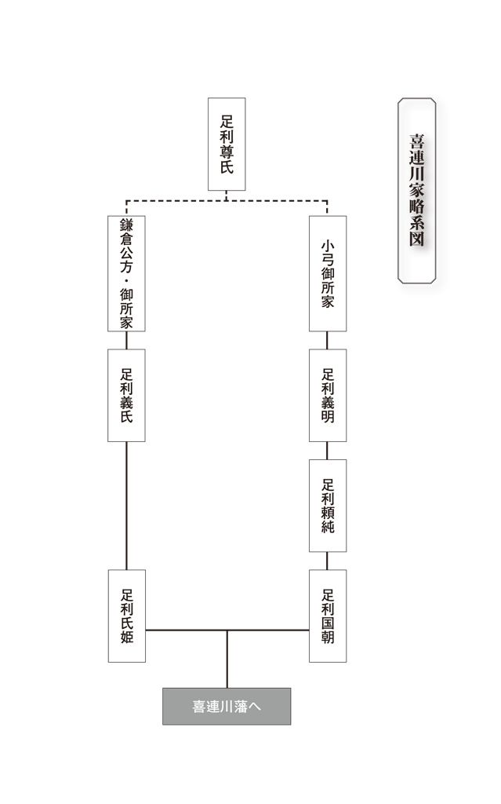

| わずか五千石、小さな大大名の遣り繰り算段 | |
| 山下 昌也 | |
| 主婦の友社 (2011) | |
主婦の友新書
〝名門〟喜連川家を中心に学ぶ「武士の生き残り術」
わずか五千石、小さな大大名の遣り繰り算段
山下昌也
目次
◆徳川将軍家の懐具合
◆御三家・水戸徳川家の財政難
第二章 百万石から一万石まで、大名家の遣り繰り算段
◆大大名の貧乏暮らし
◆奮戦する小大名
第三章 五千石でも十万石「格」大名、喜連川氏の正体
◆百万石と張り合う五千石
◆喜連川藩を成立させた「美貌の女城主」
◆だから、御所さま
第四章 御所さまの遣り繰り算段
◆宿場が基幹産業
◆御所さまの遣り繰り
◆加増の機会が来た！
◆御所さまの共産主義
◆領民の暮らしと宿場を守る御所さま
◆全ては領民のために
◆頼みは養子の持参金
◆嵐の中で
◆参考文献
第一章 徳川将軍家と御三家の懐具合
◆徳川将軍家の懐具合
豊臣秀吉に仕えた切支丹大名の蒲生氏郷に「家康はケチだから、天下は絶対とれない」と言われた家康は莫大な富を貯えた。その財源は金山や銀山の開発と貿易だが、麝香や人参、砂糖、石鹸、葡萄酒などの貢ぎ物もせっせと貯えた。その蓄財ぶりは外国人にも知られていて、イエズス会の修道士がローマに送った報告書にも「家康は歴代の君主の中でも最も巨額の金銀を集積している」と書かれ、真偽のほどは分からないが、家康が金銀を貯えていた伏見城の一室の床が、重みで陥没したとも書かれている。
元和二年（１６１６）、家康が隠居して駿府城で死去した時の遺産は、金銀合わせて百九十四万八千七百二十一両で、その他、白絹、麝香、人参、沈香、砂糖、葡萄酒、石鹸など、約二百両分を溜め込んでいたが、これらは子供達で分け合った。
その前の慶長十年（１６０５）に将軍職を秀忠に譲った時には、江戸城に四百二十万両あったといわれる。徳川幕府は裕福なスタートだったのだが、秀忠は十八年間の在位中に四十万両を喰い潰した。
さらに三代・家光は、日光東照宮の建立に六十万両使い、日光参詣を行ったり、三十万人の供を連れての上洛を三回も行うなど、豪快に金を使った。それでも四代・家綱には相当なものを残している。幕府の財政が危機を迎えるのは家綱時代からである。
◆幕府が抱えた貧乏の構図
幕府の収入源は前述したように各地の鉱山から産出される金銀や貿易の他に、天領からの年貢収入である。家光時代までは鉱山からの金銀の産出量は安定していたが、家綱時代以降は産出量が少なくなり、長崎交易も鎖国のため、次第に活気を失った。その結果、家綱時代には幕府の収入源は年貢だけになったのである。
天領は八百万石といわれるが、半分は旗本の知行地であり幕府の予算として使えるのは約四百万石しかない。そこから知行地を持たない幕臣へ支払う禄、役職についている幕臣への役料、将軍家や大奥の生活費などの固定費を引くと、政治予算に使える額は十三万八千両しか残らない。平和になっても戦国時代と同じ兵隊をそのまま雇っているための人件費であり固定経費である。赤字は家康の遺産を取り崩すしかない。
天領からの年貢は、幕政初期には七公三民の割で取り立てていて、三百万石＝三百万両ほどあった。だが、この年貢率はドンドン低下していくことになる。
七公三民の高い年貢にあえぐ農民は百姓一揆を起こした。ところが、幕府の天領支配は、十万石程度の行政領域に二十人足らずの役人で行っていて、百姓一揆を鎮める力がなく、農民は交渉によって年貢率を下げることに次々と成功したのである。これは、農民にとっては良いことだが、幕府にすれば構造的に自分の首を絞めているようなものだった。なぜかといえば、一揆が起こると、幕閣は一揆を起こさせたのは代官の責任だとしたので、各地の代官は下手に年貢を取り立てて一揆を起こされて処分されるより、農民の言い分を聞いて年貢を下げることで保身をはかったのだった。幕閣も代官も役人根性である。
◆元禄バブルの種明かし
五代・綱吉の元禄時代は、江戸期でも最も繁栄した時代の一つで、将軍として豪奢な生活を送っているが、即位した延宝八年（１６８０）当初の財政は最悪だった。家綱時代にはまだ残っていた家康の遺産を、家綱の葬儀や綱吉の将軍即位のために完全に使い切ったのだった。綱吉は恒例の日光参拝を楽しみにしていたが、その気配がない。綱吉が老中に催促すると、「江戸城御金蔵にはまったくお金はございません」と言う。綱吉は「恒例の参拝ができないのでは将軍の沽券に関わる」と怒った。
将軍の日光参拝は十万人ぐらいのお供が必要で、一回の参拝に二十万両はかかる。だが、偏執狂で癇癪持ちの将軍である。仰せに従わなければ命にかかわる。老中達は老知恵を絞り、鳩首協議の結果、勘定奉行の萩原重秀に丸投げしたのだった。
丸投げされた萩原は、手品のような妙案を編み出した。これが悪名高い金銀改鋳である。つまり、家康の作った金貨、銀貨、慶長小判を回収した上、金や銀の含有量を減らした貨幣を作り直して貨幣を増やそうというもので、増やした分が幕府の収入になるのである。その差益は、金貨四百五十万両、銀貨四百五十六万両で、約一千万両にもなった。その後も何度か改鋳を行い、傾いた財政を建て直したのだが、まさに打ち出の小槌である。
流通通貨の増大はインフレという副作用を伴うため、通貨量のコントロールが必要だが、幕府は気前よく金を使った。当時の景気は、家綱の江戸再開発事業の影響で過熱気味だった。そこへ大規模な公共投資を行ったのだから景気は爆発し、元禄バブルになったのである。
インフレで物価が上がっても、それに見合った収入が増えれば問題はないが、幕府の収入は年貢米である。米の生産量は新田開発や、農業技術の向上で増大していた。生産量が増えれば値段が下がるのは当然の結果である。諸物価は高騰し、米の値段は上がらない。幕府をはじめ、諸藩の財政はますます苦しくなった。
インフレの要因は景気の加熱だけでなく、その根源は前述したように通貨の水増し、つまり、金銀改鋳にあった。
現在のように、印刷しただけの紙幣が国の信用を裏付けにして流通するのではなく、金や銀の含有量で価値を決める時代である。このことは、幕末に外国との貿易で、質の良い日本の通貨と外国が使うメキシコドルの評価でトラブルがあったことでも分かる。正当な含有量の慶長小判から、含有量の少ない元禄小判になれば、少なくなった分だけ余計にお金を払わなければならなくなるのだ。実質的な値上がりだった。
六代・家宣が就任した宝永六年（１７０９）には、またもや幕府の金蔵はすっからかんになっていた。将軍が代わると将軍の御座所を改築し、大台所の住む御所を造るのだが、新井白石によると「国財すでにつきはてゝ、すべて今より後の事共に、取用ゆべきものなしといふ」ありさまで、その金もなかったのだ。
さらに、六代・家宣の頃になると年貢率は急速に減少し、三割三～四分程度になったのだが、その他もろもろ合わせて幕府の年間収入は百七十万両～百八十万両ぐらいだったらしい。幕政初期の約半分まで収入が減少したのである。
◆「吉宗の改革」の正体
享保元年（１７１６）にわずか八歳で早世した七代・家継の跡を継いだ八代・吉宗の享保の改革は有名で、江戸幕府中興の祖とも呼ばれている。彼は基本的に通貨政策によらずに幕府財政の立て直しに成功したのである。
その手法は、かつて紀州藩主として紀州藩の財政建て直しを行ったのと同じものだった。自らが率先しての質素倹約、家柄にとらわれない有能な人材の積極採用、人件費などの経費節約、新田開発による米の増収、特産品（練馬大根、川越の芋、浅草海苔、今戸焼など）の開発を奨励した。また隠密網を江戸城内に張り巡らせ、工事費用の過剰請求などの不正がないかに目を光らせ、経費節約を実現したのである。
だが、享保の改革の最大のポイントは年貢率の向上だった。つまり、増税である。年貢率は吉宗が将軍になった頃には三割を下回るほどに低下していたが、苦心の末、吉宗晩年には三割八分九厘まで増加したのである。その頃には、時間のかかる天領の新田開発の成果が表れ始めて四百六十三万石まで増加し、吉宗就任時には空だった江戸城御金蔵にも百万両以上を残して世を去ることができたのだった。ただし、吉宗晩年には増税された農民達の百姓一揆が頻発し、名君とされる吉宗の影の部分となっている。因みに、享保十五年（１７３０）の歳入金額は、七十九万両余りで歳出金額は七十三万一千両余りである。
吉宗の享保の改革は御金蔵に金を残したが、幕府財政の最大のアキレス腱である米本位制の矛盾は克服できなかった。この矛盾は萩原重秀や新井白石の頃から表面化していたものなのだ。
幕府の通貨システムは、表向きは金銀複本位制だが、実態は税金を米で取り、それを現金化する米本位制である。しかし、幕府や諸藩が年貢を増やすために争って新田開発を行った結果、幕政初期には予想できなかった米余りの事態が現実化したのだった。さらに市場で米余りを加速させたのは諸藩の財政難で、金に困った諸藩は集められるだけの米を大坂に送って現金化しようとする。領内では豊作なのに、領民が草や木をかじるほど飢えても米を大坂に送ったのだ。現金は領内に送られるが、米価は下がる。それでも金銀が必要な諸藩は大坂に米を送り続け、さらに米価が下がる悪循環を繰り返すのだった。
吉宗は、特産品の開発を奨励したが、それに税金をかけることには智恵が働かなかった。経済が発展してくると米以外の産業が発達し、市場で半分近くを占めるようになっていた。それら米以外の産業に税収を求めるべきであり、その確保が財政再建の鍵となるのだが、商品に課税するのは武士のすることではないと考えていたのである。
◆新しい財源は、富裕町人
家治が十代将軍に就任するのは宝暦十年（１７６０）だが、この頃の幕府財政は収支トントンという感じだった。が、享保の改革の成果が生きており、三百万両の剰余金があった。
家治が就任してしばらくたった頃、御休息の間の傷みが目立ってきたので改造しようということになり、家治は「ここはこうして、そこはこうして」と、細部にわたって修理の指示を出した。田沼主殿意次や稲葉越前守正明など幕閣が会議を開いたが、苦しい財政では予算の捻出が難しい。それを知った家治は改造は取り止め、最小限の修理にとどめたことがあった。剰余金はあったが、宝暦九年以降、年貢収納量は漸減傾向を示していて、幕府は支出を抑制し、新田開発による増収を図ろうとしていたのである。
吉宗に可愛がられて育った家治は、尊敬する吉宗にならって小金原の鹿狩りを数度計画したが、その都度幕閣に遮られた。鹿狩りは金がかかるのだ。だが、先祖を崇め、供養しない者は将軍として示しがつかないとする家治は、日光参詣にこだわった。
ついに止めることができないと悟った田沼意次は、御金蔵の剰余金を取り崩すのではなく、毎年の収入の中から五年計画で参詣費用を捻り出す方法を考えた。
その中で、田沼は幕藩政治の矛盾に気がついた。各大名は領民から年貢を取り、それで藩内の政治を行っている。一方、幕府は天領からの収入だけで全国の政治を行っているのだ。全国の政治を行うのなら、各藩からそのための金を取ってもよいのではないか。そうなったら、むしろ藩なんかいらないのではないかと思いだしたのだった。それは幕府が中心となった中央集権国家である。
この構想は斬新過ぎて成立しなかった。もし成立していたら、明治維新でできた明治政府のようなものが、天皇中心でなく、徳川家中心で成立していたことになる。
田沼は、財源をこれまでのような米中心から、ますます活発になっている商業に目を向けた。株仲間に運上金・冥加金を課して、年貢以外の収入を増やそうとしたのだった。また、米価引き上げを目論む大坂町人に御用金を課した。富裕町人の財力に財源不足を転化したのである。
◆支出の増大を寄付で賄う
十一代・家斉が就任した天明七年（１７８７）頃は、富裕町人からの御用金が大きな比重を持つようになっていた。寛政期（１７８９～１８００）には倹約を中心とする財政再建策が展開され、家斉が浪費をしても各年度の収支は黒字になった。文政期（１８１８～）以降は富裕町人からの御用金に加えて貨幣改鋳益が財政の中で大きな比重を占めるようになり、天保期（１８３０～）になると、貨幣改鋳益がなければ収支を償えなくなった。
十二代・家慶時代の天保九年（１８３８）に西の丸改造の費用を、上は、大大名から下は貧乏御家人まで幕府にかかわるすべての者から寄付を集めて賄った。上は松平大隈守の十万両、細川越中守の八万五千両、松平土佐守の三万五千両、松平甲斐守の三万両、松平隠岐守の三万両、松平出羽守の三万両などとまとまったものから一万両、数千両、数十両、下は一両までまちまちだった。だが、こんな状況でも借金の申し込みがあり、武士の親分として君臨している立場なので、これまでもあまり断ったことはなかったが、家計が苦しいという松平越前守に一万五千両貸し与えている。
幕末になるに従って、臨時支出も嘉永六年（１８５３）の台場の構築費などのように、これまでにない対外国要因のものが増えていった。
文久三年（１８６３）の歳入金は一千五十一万六千両余り、歳出金は一千六十一万四千両余りと、かなり膨らんでいる。これは十四代・家茂の将軍上洛費や長州征伐出費九十七万二千両余りと、船舶、武器購入費七十三万二千両余り、さらに朝廷関係への下げ金三十八万九千両余りが含まれている。
外国関係では、薩摩の起こした生麦事件と長州の起こした公使館襲撃の賠償金四十四万ドル（十万ポンド＝二十四万一千三百三十二両）を幕府がイギリスに払い、薩摩も生麦事件の賠償金二万五千ポンド（六万三百三十三両）をイギリスに払った。薩摩は幕府から借り入れて払ったものだったが、間もなく倒幕派に立場を変える薩摩からは、返済されることはなかった。
◆特典付きの御用金
慶応元年（１８６５）四月に、幕府は再び長州征伐を決めた。勝海舟によると、軍備費は「紅葉山の金を使ってしまったのサ。黄金の二万両もあったし」と言う。紅葉山に道具を入れる蔵や書庫はあったが、金蔵があるのは知らなかった。江戸城の金蔵といえば、通常の金銀出納に使っている蓮池御金蔵と臨時支出に備えて余剰金などを貯えておく奥御金蔵はよく知られているが紅葉山の金蔵の金の性格は何だったのだろうか。
勝は「ひどいことをすると思って驚いたのサ」と言っているから、新しい霊廟を建てるためにとっておいたものかも知れない。
勝の言う紅葉山の金とは別に、幕府は天領の豪農商寺院に御用金を科した。予定は一万両だったが、その額はすぐに突破した。それには、三百両の者は子孫の代まで、二百両の者は一代限りの苗字・帯刀を許す、という特典が付いていたからである。金欠病の幕府の苦肉の策だったが、幕末になっても、町民にとっては「苗字・帯刀」が憧れだったのだろう。
慶応四年（１８６８）になると、対外国関連費はもちろん、諸役人に払う手当てが多くなり、ますます財政は苦しくなっていた。その上、鳥羽・伏見の戦いもあって、軍事費も五十九万両に達していた。幕府は、窮余の策として、役扶持、役金を半額に減らして切り抜けようとした。
◆御三家・水戸徳川家の財政難
徳川家康の十一男・頼房を家祖とする水戸藩は、財政難を運命づけられた藩だった。石高は、公称三十五万石と御三家の中では一番低い上に、実高は二十八万石程度しかなかったのである。しかし、何事も三十五万石の格式で行う必要性があって藩の財政を圧迫したのだった。つまり、内高が表高を恒常的に下回っている以上、常に財政難に喘ぐことになるのだ。
寛文元年（１６６１）に光圀が三十四歳で二代藩主になると、明暦三年（１６５７）にスタートしていた『大日本史』の編纂は、さらに熱を帯びてきた。特にその資料探訪は異例の大規模なもので、日本全国に及んでいる。『大日本史』を編纂するために置いた彰考館の館員は、元禄九年（１６９６）には五十三人だが、各地の優れた学者を招き事業を進めていった。参加した学者は延べ百三十人に及んだという。
執筆の中心は安積覚兵衛澹泊、資料探訪の中心は佐々介三郎宗清だった。「水戸黄門漫遊記」の佐々木助三郎、渥美格之丞、つまり助さん、格さんのモデルだというが、これは名前だけで、学者の二人にガードマンは勤まらない。
館員の待遇は、二百石から四百石の高給で、昼と夕食には酒が付き、さらに濃いお茶が出てときどきお菓子も出た上、気分転換には行水の用意もあったという。
この待遇の良さは、父頼房譲りで、昼間から酒が出るのは、気分転換で能率を上げる効用もあっただろうが、光圀自身が酒好きだったのだ。
家臣を大切にして学問に熱心な「黄門さま」だが、経済には暗かった。それは、領民、特に農民の上にのしかかってきた。
光圀が領主になった翌年の、寛文二年（１６６２）には田租が五十パーセントを突破し、やがて五十三パーセントまでいくのである。家康の時代は四公六民だったのが、五公五民の大台を突破したのである。
結果は〝附荒〟として現れた。附荒とは田畑が作付されないまま放置され、荒廃している状態で、あまりにも過酷な年貢に農民が耐えかね、逃亡して耕作者がいなくなったのが原因である。これは、並の大名だったら改易になるところなのだ。
光圀は『大日本史』の編纂事業に藩の年収の三分の一を注ぎ込み、そのしわ寄せが年貢となって農民に及んだのである。
天和元年（１６８１）の藩の収支を見ると、高い年貢にもかかわらず、籾は十七万七千六百五十二俵収納し、二万三千六十四俵の不足。金は五万九千四百六十七両収納して、一万七千六百十四両の赤字である。
しかも、支出の状態を見ると、籾の支出二十万七百十六俵の内、江戸で支出されたのが五万九千八百十二俵で約三十パーセント。金の支出七万七千八十一両の内、江戸で支出されたのが六万七千七両と八十七パーセントにのぼっているのである。
他の藩とちがって、定府制の水戸藩は藩主が常時江戸にいることを義務づけられて経費が二重に掛るが、この年の人件費や雑費を引いた純粋な修史編纂の費用は六百五十五両で、赤字財政の中での出費である。
ついに光圀は延宝五年（１６７７）、「償金」制度に踏み切った。録高に応じて藩士から一定の金を上納させる制度である。貨幣経済が進む中で、禄高の決まっている武士階級の生活は、働きによって収入に変動のある農工商より苦しいものだったが、さらに困窮の度合いは増してきた。文化事業のとばっちりは領民だけでなく、武士の上までかぶさってきたのである。
経済政策に無関心だった訳ではない。産業の育成も行っている。紙の原料の楮の値段が急騰したとき、光圀は別の材料の開発に取り組んだ。大麦藁や小麦藁、稲藁、木槿などを使って良質の紙を漉き出すことに成功したのだ。麦藁で漉いた紙は「麦光紙」と名付けて将軍家にも献上された。
光圀が喜ぶのを見た紙漉き職人は、殿は珍しくて変わった紙をお望みなのだと勘違いして、銀杏の葉で美しい紙を漉いて見せた。が、光圀はこれを採用しなかった。理由は、美しい紙だが、銀杏は紙の原料としては量の確保ができないからである。
◆黄門さま、大船を造る
光圀は、この逼迫した経済情勢の中で金のかかる大船を三度も建造している。
寛永十二年（１６３５）幕府は五百石以上の大船建造の禁止令を出していたにもかかわらず、寛文六年（１６６６）にこの禁止令を上回る長さ十八間（約三十三メートル）、幅五間（約九メートル）の大船を建造した。次に建造したのは寛文十一年だったが、貞享二年（１６８７）十一月に房州から出帆したまま強風にあって行方不明になった。
幕府自身も将軍の御座船として安宅丸を持っていた。二層の総矢倉を巡らし、船首寄りに二層の天守を構える全長二十六間（約四十七メートル）余りで、横幅七間（約十三メートル）の大船だった。しかし、維持費のかかるこの大船は、天和二年（１６８２）、緊迫し始めた幕府の財政を預かる堀田正俊の意見によって解体されたのである。
だが、幕府より財政事情の悪い水戸藩は、こともあろうに安宅丸が解体された天和二年に三隻目の大船建造に取りかかったのだ。貞享二年（１６８５）に完成した快風丸は全長二十七間（約四十九メートル）、幅九間（約十六メートル）で帆柱は十八間、帆は五百反、櫓は四十～六十挺の大船の総工費は七千両といわれる。光圀はこの大船を三度蝦夷に派遣したが、波のうねり二つに乗れるため、揺れが少なく滑らかな航海だったという。
一回目の貞享三年（１６８６）は途中で引き返し、貞享四年の二回目には松前まで行ったが、それ以上先に進むことは許されなかった。
これに懲りて、三回目の元禄元年（１６８８）には、事前に松前藩と打ち合わせ、長崎から呼び寄せた黒人二人を含む総勢六十七人で出航し、石狩川を遡る調査を三日間したが、交易を少ししただけで大した成果はなかったのである。
一説には、『大日本史』編纂のため、衣川で討ち死にせず、蝦夷地に逃れたという義経の噂を調べるのが目的だったともいわれるが、蝦夷地探検はこれを最後に打ち切られた。
元禄三年（１６９０）、光圀は病気を理由に幕府から隠居を許されたとされるが、事実は、経済音痴で百姓が逃亡して附荒にしたため、幕府から隠居させられたのだ、ともいわれる。元禄十三年に光圀が亡くなると、快風丸も解体された。
◆将軍家より持参金付きで姫を貰う
台所の苦しい水戸藩に、幕末になって思わぬ幸運が訪れた。八代藩主・斉脩となる鶴千代に十一代将軍・家斉の十三子（七女）峰姫が一万両の持参金付きで嫁いだのである。そればかりか、後に年々一万両の支給があり、おまけにこれまでの借金二万三千両が棒引きになっていたのである。水戸家にとっては干天の慈雨だった。しかし、峰姫との間に嫡子は恵まれなかったが、将軍の娘では側室を持つこともできず、斉脩は嗣子の無いまま文政十二年（１８２９）、三十三歳で病死したのだった。
斉脩の跡は弟の敬三郎（斉昭）が継ぐのが順当だが、峰姫で味をしめた家老たちは、家斉の男子と縁組すれば、もっと実入りがあると考え、四十七子（二十一男）恒之丞を婿に迎えようとしたのである。水戸藩はこれで敬三郎派と恒之丞派に別れてお家騒動になったのだった。
家斉の子は各藩に配分され、それぞれに恩典があったが、中にはそれを利用する藩もあった。多額の借財を抱えていた川越藩四代藩主・松平矩典（斉典）は実高の多い領地への転封を画策して、世嗣がいるにもかかわらず家斉の五十三子で五歳の紀五郎（斉省）を養子にしたのである。大御所家斉は願いを聞き入れ、矩典に出羽国庄内藩への転封を命じる幕命を出した。川越藩が庄内藩に転じ、庄内藩酒井家は越後国長岡藩に、長岡藩牧野家は川越藩に転封するもので、いわゆる三方領地替えと呼ばれるものである。しかし、庄内藩の農民の反対運動が起こり、幕府に対して藩主擁護の直訴をしたのだった。これは前代未聞のことであり、大御所家斉も死去したので幕命撤回となったのだった。斉省も家斉と同じ天保十二年（１８４１）に、家督を継ぐことなく十八歳で没した。
明石藩は、世嗣がいるのに五十四子・周丸（斉宣）を配分された。世嗣・慶憲の生母はこれを嘆いて自殺したという。だが藩の石高は六万石から八万石に加増され、さらに十万石格までになったが、藩主になった将軍の子息は贅沢で、ますます財政難になった。
◆無許可の富籤
水戸家の下屋敷は向島の小梅にあった。いわゆる小梅の水戸屋敷だが、文政六年、ここに坊主頭の男が突然訪れた。色白で肉づきがよく、中背で目つきが鋭かった。
「富籤の件でご重役にお取り次ぎ願いたい」と、目的を告げると、自分は小普請坊主の河内山宗俊だと名乗った。下屋敷に重役などいるわけはない。応対に出たのは五百石取りの大久保今助である。今助が富籤の発案者で推進者だった。
河内山は「水戸様の籤を毎回買っているが一回も当たらねえ。とうとうその日の暮らしにも事欠くようになってきた。そいつを哀れんで」何とかしてくれ、と強要し、まんまと五百両を手にする。これが実録本などにあるストーリーだが、歌舞伎では「練塀小路に隠れのねえ、お数寄屋坊主の宗俊が......」寛永寺の御使僧・道海になりすまして松江出雲守の屋敷に乗り込む。が、帰りの玄関先で用人・北村大膳に「証拠はその黒子」と正体を見破られると、「とんだ所へ北（来た）村大膳」と居直って啖呵を切り、「バーカーめぇ」と一喝して悠然と引き上げる名場面である。因みに、宗俊は創作名で、実在は宗春である。
この頃、富籤が大流行りで、江戸中に富の興業が三十三カ所もあったが、神社仏閣の修築改修の費用を得るために願い出て許可されるもので、場所も寺社の地域に限られていたのである。
当時の水戸藩主は中納言斉脩で、苦しい台所を補うため、水戸藩士関係の範囲だけということにして、公許を受けずに富籤を行ったのだから、神社仏閣の修理などという大義名分はない。その上、実際には一般にも売られたのだった。
因みに、今助は、元は草履取りだったが、小才のきく男で、将軍・家斉の寵臣・水野出羽守の家老で、当時三陪臣といわれた有力者・土方縫殿助に妾を取り持ったのを縁に、土方と水戸家の江戸家老・榊原淡路守とを結びつけて、水戸藩主・斉修へ将軍・家斉の娘・峰姫（美子）を年額一万両の化粧料付きで輿入れさせ、その功によって五百石にありついた男だった。
文政六年（１８２３）七月、強請りたかりの常習者の河内山宗春が捕まるが、七月二十二日、獄中で突然死んだ。取り調べの前だった。御三家の水戸家のスキャンダルと、それをネタに水戸家を強請ったことが公になっては、幕府の体面にも関わる。処置に困った奉行所が、河内山が喋る前に毒殺したのだという説が強い。
当然、河内山宗春の取り調べの記録はなく、獄死した者に申し渡し書はない。が、単なる噂で片づけることができない。宗春が獄死した翌年、宗春に連座して息子の三之助や直侍の片岡直次郎ら九人が捕まり、三之助は江戸所払いを申し渡された。
なにより不自然なのは、宗春の事件が舞台にかかったのは明治になってからだということである。江戸時代の歌舞伎はニュース媒体の側面があり、話題の事件はすぐに舞台にかけられた。幕府や大名家に関係するものは、少し遠慮はあるものの、元禄十五年（１７０２）に起こった赤穂浪士事件は宝永三年（１７０６）に『碁盤太平記』として上演された。が、宗春の一味を講釈師の二代目・松林伯円が『天保六花撰』として口演したのは明治になってからで、それを河竹黙阿弥が歌舞伎『雲上野三衣策前』に仕立てたのが明治七年（１８７４）で、『天衣紛上野初花』に直したのが明治十四年のこと。水戸家を松江侯、宗春を宗俊に変えた程度では宗春が水戸家を強請ったことがすぐ分かるくらい周知のことだから、江戸時代にいかにタブー視されていたかが分かる。
第二章 百万石から一万石まで、大名家の遣り繰り算段
◆大大名の貧乏暮らし
「大名暮らし」、「大名遊び」などと聞くと贅沢で優雅な感じがする。大名は贅沢な屋敷に住み、柔らかな着物を着て山海の珍味で酒を嗜み、美人の側室に囲まれているイメージがある。が、一口に大名と言っても大は百万石から小は一万石まで百倍の差があり、皆んなが皆んな、豊かではない。
また、庶民は稼ぎをパーッと使ってしまおうが、がっちりと溜め込んでしまおうが勝手だが、大名は石高によって家の格式が決まり、屋敷の大きさや造り、江戸城での控えの部屋や服装、供揃えから献上物、拝領物など全てが左右されるほか、家臣の数や幕府の行事に対する負担などのさまざまな義務の軽重も変わるので、大大名であっても自由に使える額は制限されているのである。
参覲交代を例にとると、行列の人数は一万石につき四十人と石高によって決められているので、百万石の加賀藩の行列は四千人の大行列になり、藩の財政を圧迫した。その点、小大名は小人数で楽だと思われるが、収入が少ないのだから負担度はかえって大きい。その上、大名は藩の威信をかけた見栄っ張りが多いので、一万石の大名でも百人以上の供揃えをする殿様もあったのだ。
石高は米の収穫量だから土地によって生産性の高い所も低い所もあり、検地や新田開発などによっても増減があるので、同じ石高でもばらつきがあった。つまり、公称の石高と実収が異なる場合があったのである。
例えば、仙台の伊達家の表高は六十二万石だが、実際の実高（内高）は約八十万石あったらしく、柳沢吉保が宝永元年（１７０４）に甲斐で加増されて十五万石になった時の実高は二十六～七万石あったという。反対に、本藩の宮津藩と支藩の田辺藩、峰山藩からなる丹後国の表高は十二万三千石だが、領内に以前からの小領主がいたり、寺社領があったりして、実高は十万石に充たなかったという。
表高と実高が違っていれば、正直に幕府に申告して直してもらえば良さそうなものだが、石高が上がればそれだけ格は上がるものの、幕府の事業に多くの負担を求められたり、格に見合った体面や付き合いなどで何かと出費が多くなり、反対に石高が下がれば負担は減るが、それだけ格が下がるのだ。大名にすれば、見栄を取るか実を取るか悩ましいところである。
実を取ったのは信濃国の小諸藩である。元は、豊臣秀吉の家臣・仙石秀久が五万石で入封して小諸城を築城したのだが、その後、藩主が次々と代わる都度石高は減っていき、元禄十五年（１７０２）に牧野康重が越後国与板藩から入った時は、一万五千石と低い石高のまま維新まで続いた。しかし、牧野氏は新田開発に熱心で、幕末の実高は三万九千石にまでなっていたのである。だが、これには裏があって、牧野康重は桂昌院の義理の甥で綱吉の従兄弟だから、最初から三万石だったが、何の功績もない康重家が三万石では妬みや批判の対象になるので一万五千石ということにした、という説もある。
廃藩置県の際、藩財政の精算を行ったが、小諸藩は信濃国内で唯一の黒字藩だった。日本中、累積負債で苦しんでいた藩が多かった中で稀少な例だが、表高が一万五千石で、実高が三万九千石ということは、幕府への役務や参勤交代の行列、交際費などは、全て一万五千石の格式で行えばよかったので健全財政なのは当然だろう。いわば、基本給二十万円で、諸手当を含めて五十万円の収入があるのに基本給だけ申告して、税金や保険料を払っているようなものである。
盛岡藩（南部藩）の場合は、実高は十万石に充たなかつたが、十万石の格が欲しくて頼み込んだものらしい。だが、直ぐに実態が伴ってそれ以上になり、文化五年（１８０８）には幕府から二十万石に高直しされた。めでたく家の格式は高くなったものの、蝦夷地の警衛などの負担が多くなり、藩の財政は一時、破綻寸前まで追い詰められたという。
享保七年（１７２２）に吉宗が空っぽになった幕府の金蔵を補うため、一万石につき百石の上米を大名に命じた。つまり、幕府が大名に米を献上させるのだ。薩摩藩は六十万五千八百六十三石を基礎にして納めるように指示されたが、薩摩は琉球の十二万三千七百十一石も加えるように何度も頼み、やっと七十二万九千五百七十五石にしてもらった。献上する負担は重くなるが、それよりも石高の方が優先するのである。今では上場するために実態よりも良く見せようとする粉飾決算が行われて摘発されるが、この時代は被害者となる株主が居ない上に、負担になるのは当事者だけなので犯罪ではない。
土佐藩の場合は、結果的に実をとった。当初の石高は二十万二千六百石余りだったが、十七万石余の阿波徳島藩が元和元年（１６１５）に淡路国を加増されて二十五万七千石になると、それに対抗して二十五万七千余石を申告した。土佐山内家が四国一の石高にこだわったのだが、残念ながら幕府はこの申告を認めなかった。土佐藩はその後も開発を進めたが、申告はせず、明治三年（１８７０）の廃藩置県前の調査では四十九万四千石余の大藩になっていたのである。
長州藩も結果的に実をとった方である。毛利輝元は、豊臣時代に安芸、周防、長門、備中半国、備後、伯耆半国、出雲、石見、隠岐の百二十万五千石を拝領していたが、当時の検地は厳密さに欠け、実高は二百万石以上だったという。が、関ヶ原の後、周防、長門の二国で二十九万八千四百八十石二斗三合に減封された。
領国を四分の一にされた毛利家は慶長十二年（１６０７）になって新たな検地に着手して慶長十五年に終えるが、大名の習性で少しでも石高をあげようと、一揆が起きるぐらいの苛酷さで行われた。その結果、五十三万九千二百六十八石余りになったのだった。慶長十八年に幕府に提出される御前帳（国絵図とともに作成された各村の村高を書き上げた帳簿）が今後の毛利家の公称高となるため、事前に相談された幕閣は驚いた。東軍の勝利に最も貢献したとされる福島正則でも隣国の安芸広島と備後鞆で四十九万八千二百石である。にもかかわらず、敗軍の総大将だった毛利氏がそれ以上では釣り合いがとれないのだ。
幕府は辻褄を合わせるため、慶長十八年の御前帳には約七割の三十六万九千四百十一石三斗一升五合を表高として公認したのだった。大名の世界は建て前の世界でもある。
毛利家は、その後の新田開発などによって次第に石高は増し、幕末の実高（裏高）は百万石を超していたらしいが、公称高はずっと変わらなかった。
◆赤字の構造は、米本位制
その長州藩でも幕末の藩財政は悪化した。減封された後も家臣をリストラしなかったので、いくら給料を減らしたといっても負担は大きく、幕末の負債額は銀八万貫を超えていたというから、時の相場によって変動があるとしてもざっと千四百万両である。建て直しに手腕を振るったのは毛利敬親に抜擢された村田清風だった。
藩はこれまで特産物の蝋を専売制とし、税収を上げようとしてさらに強化したが、民衆の反発を買って一揆が起こっていた。これに対して村田清風は、制度を改めて商人による自由な取引を許したのである。その代わりに運上銀を課税したが、商人のやる気を呼び起こして商いは活発になったのだった。
また、下関を通る船に金を貸す越荷方を設置し、金融兼倉庫業で莫大な利益を藩にもたらしたのである。
清風は行政を効率化するため、藩の財政状態を藩士たちなどに公開し、アイディアのない役人を切り、身分にかかわらず有能な人材を抜擢して改革を進めたのである。これは、藩士や領民の意識を改革するとともに、米本位から貨幣経済に意識が向けられていたのである。
藩の大小を問わず、各大名が累積赤字に苦しんでいたのは、明治新政府が新体制を創る時に明確になった。
明治二年（１８６９）、薩長土肥の四藩主が率先して版籍奉還することで諸藩は次々とそれを真似た。世襲の知事に任命され、華族となった藩主は引き続き支配権を持つと思っていたのだ。
明治四年に御親兵が編成され、続いて廃藩置県の詔書が発布されたのは、御親兵を背景にして行われたものである。これは、上書を提出して行われた版籍奉還と違い、一方的な命令として宣告された一種のクーデターだから、反対する旧藩主がいた場合に備えたものだったが、杞憂だった。
不満があっても、諸藩には反抗する財力が無く、むしろ、旧藩主たちは苦しい財政の下駄を新政府に預けて、ほっとしていたのだった。
この苦しい財政状態は、大名の見栄ばかりでなく、江戸の藩邸と国許の藩庁の経営という二重の経費がかかることや、飢饉や洪水などの自然災害もあったが、もっと根源的なものとして、経済態勢が米本位制だったことがある。商業が発達して社会全体は貨幣で動いているのに、武家社会だけは米が経済の基本だから、新田開発などで米が増産されると、かえって米の価格が下がり、減給と同じことになるのだ。この構造が変わらない限り財政は改善されなかったのである。
◆薩摩の借金と踏み倒し
薩摩藩も財政難に苦しんでいた、それを建て直した調所広郷はよく知られている。天保九年（１８３８）に家老に就任すると、藩の財政や農政、軍制改革に取り組んだが、当時の藩の借金は五百万両にも膨らみ、破綻寸前になっていた。急務は、藩運営のブレーキになる借金を片づけることである。
調所は、商人を脅迫して借金を無利子で二百五十年の分割払いにさせたのだ。実質的な踏み倒しである。が、一方的に泣かせたのではなく、琉球を通じて清と密貿易も行ったが、長期分割の見返りに、一部の商人に密貿易品を優先的に扱わせて利益を上げさせている。
さらに、大島や徳之島などの砂糖を専売制にするほか、特産品の開発などを行うことで利益を上げ、天保十一年（１８４０）には二百五十万両の蓄えが出来る程にまで財政が回復したのである。
しかし砂糖の専売では、奄美群島の百姓から砂糖を安く買った上に税を厳しく取り立てて領民を苦しめ、幕府に密貿易の件を糾問されるなどし、嘉永元年（１８４８）に薩摩藩上屋敷芝藩邸で急死した調所は服毒自殺とも言われる。
お由羅騒動のため、遅ればせながら嘉永四年に四十二歳で藩主となった斉彬は先進的で好奇心が強く、個人的にアルファベットを学び、写真を撮ったが、藩の事業として反射炉や溶鉱炉を建設し、鉄鋼や各種ガラス、ガス灯の製造などのほか洋式帆船を完成させ、蒸気機関の国産化を試み、日本初の国産蒸気船を建造するなど、安政五年（１８５８）に五十歳で没するまでの間に、軍需、民需の西洋技術や生産力を矢継ぎ早に取り入れた。
しかし、調所広郷が御禁制の密貿易まで行って形振り構わず貯えた金に手を付けたのだろう、文久二年（１８６２）に起きた生麦事件の賠償金の支払いをさんざん渋った揚げ句、文久三年に横浜のイギリス公使館に届けた二万五千ポンド（六万三百三十三両）は、幕府から借り入れたものだった。が、これを機会に薩摩とイギリスは親密になり、維新の騒動で借金は幕府に返済されなかった。
◆奮戦する小大名
藩の呼び方に大藩とか小藩という呼び方がある。
大藩は四十万石以上で、十万石から三十九万石までが中藩、一万石から九万石までが小藩になるが、大藩は一握りで、小藩が圧倒的に多いから、日本の大半の殿様が遣り繰りに苦労していたのである。なんだか一握りの大企業と九割以上の中小・零細企業で構成されている日本の企業社会に似ていなくもない。
実高の多い藩は、数は少ないが幾つかはあった。が、大藩でも台所は苦しいのだから、実高が多いといっても小藩では左団扇とはいかないし、少しゆとりが出来たからといって油断は出来ない。
大和国（奈良県）の芝村藩は一万石だが、現在、有楽町に名前を残す織田有楽斉の四男・織田長政が父から一万石を分知されて立藩したものである。七代・輔宜の頃から幕命によって任されるようになった幕府領の預かり地は順次増え、八代・長教の代になると九万三千四百三十石にまでなり、藩領は十万石以上になったのである。
預かり地の統治の成功で、幕府から賞賛されたまでは良かったが、宝暦三年（１７５３）末になって、年貢増徴政策に対する百姓一揆が預かり地で頻発し、百姓たちが預かり地の所替えを要求するまでになったのだった。
この騒動は幕府が鎮圧したが、寛政六年（１７９４年）になって預かり地の役人の不正が発覚し、藩主・長教をはじめとする要人が処罰され、預かり地も全て召し上げられた。この頃から藩財政の窮乏化が深刻化し、農民の年貢減免を求める強訴が発生するようになり、藩政改革を試みたが効果は無く、幕末には借金漬けになったといわれる。
ヌカ喜びの実高だった藩もある。近江国の宮川藩は下総国佐倉藩十二万石・堀田正盛の孫堀田正休が元禄十一年（１６９８）に一万石で上野国吉井から移封されて立藩したものだが、三代・正陳は若年寄となって寛延元年（１７４８）に三千石の加増を受けて一万三千石を領することになった。
五代・正穀の時代には、蒲生郡など近江国内の所領三千六百石が播磨国に移されたが、この土地は生産性が近江よりも高かったため、実質的な加増だった。しかしそれも束の間、文化四年（１８０７）に、残念ながら元に戻されたのだ。歴代藩主のほとんどが出費の重なる幕府の要職に就いたことも財政を圧迫したが、藩政での治績もほとんどなかった。
米以外の「国産品」の開発で藩財政を支えようとする藩もあった。
豊後国森藩一万三千石もその一つで、領内で採取される明礬を藩の「国産品」と位置づけ、宝暦十三年（１７６３）頃の国内総生産高のうち、森藩産が三分の一を占めていたのである。経営は順調だったが、唐明礬の輸入量が増えて森藩の経営は中断された。が、努力の末、江戸、大坂に明礬会所の設立を許されて明礬の販路を独占することになったのである。森藩では、その外、硫黄の採掘を行うなど、年貢収入以外の産業を起こし、経営販売することで苦しい財政を助けたのだった。
頑張って財政を建て直した藩に伊勢国菰野藩一万一千石がある。
菰野に一万石を領していた土方雄氏は、慶長四年（１５９９）、家康暗殺の疑によって所領を没収されるが、同五年に許され菰野藩を立藩したのだった。
二代藩主・土方雄高は城下町を建設し、商工業者を招いて藩の体制を整備したが、以後の藩主が放漫経営で財政は苦しさを増した。
七代・雄年は立て直しを図ったが、大坂や駿府の加番勤務や凶作などの天災で藩財政は悪化の一途をたどると、幕閣とのコネを強めるため田沼意次の六男を養子に迎えて八代・土方雄貞とした。
九代・義苗は、「臨時準備積立法」を制定して年間二百二十五俵の米を一割二分の利で十三年間積み立て、質素倹約や経費節減、灌漑工事などで財政再建を果たして菰野藩を立ち直らせた。
さらに十代・雄興の時、稲の品質改良に成功し、菰野茶を特産として売出し、十一代・雄嘉の代には茶園を建設するなど、領民の力を活かした政策が功を奏した。また、年貢の取り立てが比較的緩かで、明治維新まで一揆が無かった珍しい藩である。
相模国の萩野山中藩は、小田原藩の支藩で一万三千石。天明三年（１７８３）の五代藩主・大久保教翅の頃から藩財政の窮乏化が進み、六代・教孝は養蚕業を奨励するため、蚕の性質や蚕種の取り扱い、孵化から成虫までの飼育法など、養蚕に関する全てを細かく記した「養蚕要略」を公布したが、残念ながら効果はなかった。
◆財政圧迫は、幕命による不可抗力
実高の少ない藩は、まず新田開発で財政改善を図ろうとし、次に国産品の開発と増産を奨励することが多いが、成功するとは限らないし、無策で借金漬けになるケースもあり、藩によって様々だ。
コツコツと努力したのは但馬国の村岡藩である。明治時代初期にできたいわゆる維新立藩の一つだが家柄は由緒正しく、室町時代の守護大名・山名氏の末裔である。山名豊国が徳川家康から六千七百石を与えられて旗本となり、歴代領主は新田開発や産業の振興などをすすめて実高を増やし、明治元年（１８６８）に新政府から一万一千石へと高直しが認められて立藩したのだった。
だが、出羽国の長瀞藩は、一万一千石だといっても所領が五ヶ国にも散在していたため、コツコツやろうにも何も、効率が悪くて結果の出せない気の毒な藩だった。幕末に藩内で攘夷討幕を叫ぶ声が高まり始めたのも無理はない。
伊予国の小松藩一万石では、寛文年間から元禄年間（１６６１～１７０４）にかけて三百町歩の新田開発を行った。享保十七年（１７３２）の享保の大飢饉では住民の半数が飢餓に苦しんだが、新田開発の甲斐があって餓死者は皆無だったから成功の部類である。
軍費のために財政が悪化することもある。美濃国の苗木藩がそれで、一万石ながら城主である。苗木藩の藩祖・遠山友政は美濃の豪族で織田信長に従っていたが、信長の死後、所領を失った。その後、慶長五年（１６００）の関ヶ原の戦いで苗木城を奪い返し、そのまま家康から苗木城を賜ったものである。が、城主で家格は高いものの小藩の悲しさで、幕府の相次ぐ手伝い普請や軍役などによって財政の窮乏が早くから始まっていた。それでも、新田開発を行い、四代・友春の頃には、実高は約一万五千石くらいまで増加したが、五代・友由の大坂加番による出費などもあって、折角の増収も帳消しになった。
苗木藩の歴代藩主は藩政維持のため、厳しい倹約令を出し、天保年間には給米全額の借り上げを行うなどしたが、やはり効果は無かった。しかも最後の藩主・友禄は文久元年（１８６１）に若年寄となり、さらに大坂警備も任されたための出費がさらに重なって財政は火の車となった。その上、慶応元年（１８６５）には第二次長州征伐にも参加したことによる軍費が嵩んで財政は破綻した。友禄は五種類の藩札を発行して改革を図ったが、やはり効果はなかった。運命を呪いたくなる話である。
同じように戦費が足を引っ張った藩に播磨国の山崎藩がある。別名宍粟藩とも呼ばれる一万石の小藩で、八代・本多忠鄰は、藩財政再建に尽力したがその甲斐もなく、幕末の動乱の中、第一次長州征伐等に出兵したことで藩費の支出が重なったため遂に第二次長州征伐、鳥羽・伏見の戦いには戦費不足から出兵できない事態に陥ったのだった。
◆領民の支持が「遣り繰り」成否を決める
領民の反発を買い、協力が得られず失敗することもあった。定府（藩に戻らず江戸滞在）が多い小藩は、地元の事情に疎くなり、領民の気持ちが分からなくなって、つい無理を強いるのである。
信濃国の須坂藩一万石の十二代藩主・堀直武は、薬用人参、吉向焼などの国産物育成を中心とした藩財政の改革を進め、さらに人材を登用して藩政改革を進めるが、領民の支持を得られず、かえって藩財政の逼迫をさらに招くことになり、失敗したのだった。
駿河国の小島藩は、六千石の旗本・松平（滝脇）信孝が元禄二年（１６８９）に四千石加増されて一万石の大名になったが、この時代からすでに財政が窮乏化していて、年貢の先取りなどが行われた。四代・昌信の時代には新たな人材を登用し、年貢増徴、賦役強化、支出の削減を中心とした藩政改革が行われたが、明和二年（１７６５）に年貢増徴に反対した百姓による一揆で、年貢の増徴による財政改革は実現しなかった。
だが、七代・信友は直印書を発行して領民に財政窮乏化のため年貢の増徴はやむを得ないことを説いて領民の理解を得ようとし、九代・信進は、国産品の紙の専売制を実施してある程度の財政改革に成功した。
河内国の丹南藩は、九千石の旗本・高木正次が元和九年（１６２３）に加増されて一万石の大名となった。丹南藩が常府になったのは、天和元年（１６８１）で、六代・正陳の時だった。藩の領地の一部は頻繁にあちこちに移されるが、明和六年（１７６９）になると、麦不作から年貢納入拒否となり，農民が拝借金や配給米を求めた騒動が起きた。全村庄屋、百姓が参加した大規模なもので、庄屋二十二名が江戸屋敷に召還されて十一人が牢死、四人が追放、二人が罷免などの処分を受け、一般百姓も六十数名が手鎖、追放等に処せられた。騒動の主謀者は領民に敬われ、後に地蔵がたてられたが、藩主の正弼は騒動処置の不手際を幕府に咎められ、江戸城出仕を停止された。
十二代・正坦は、慶応二年（１８６６）に幕府領の安宿部郡国分村（現在の柏原市）で起きた一揆の鎮圧を幕府から命じられ、江戸中期から続く財政難はさらに増し、廃藩時の借金は小藩としては非常に多額な三万九千両になっていた。
多額の借金を作ったのは美濃国の高富藩も同じである。初代藩主・本庄道章が一万石で高富に入ったのは宝永二年（１７０５）だった。道章は、五代将軍・徳川綱吉の生母・桂昌院の異母兄・本庄道芳の孫だから、綱吉と桂昌院のおかげである。しかし、小藩の悲しさ、八代・道昌の時代から財政の窮乏が始まった。
歴代藩主は厳しい倹約令を出したり、百姓には植林を薦める一方で莫大な献納金徴収を図り、さらには年貢増徴政策、藩札の発行から京都の豪商を財政顧問として招いての藩政改革まで様々な手は打ったが、ことごとく失敗し、十代・道美の時代になると藩財政は完全に破綻した。慶応四年（１８６８）になると、藩内で打ちこわし、百姓一揆が起こるようになり、この頃の藩の借金は二十万七千四百両にも達していた。
定府で現地の事情が分からず騒動になったのは、備中国の岡田藩一万石も同じだった。財政の苦しい藩は、領民の入会地だった山を「お留山」として藩の公地とし、領民の立ち入りを禁じたばかりか、樹木を伐採させて薪を作らせ、陣屋まで運ばせる賦役を課したため、怒った領民は代表四人を江戸に送り藩主に直訴した。領民の願いは叶えられたが、直訴した四人は処刑され、その家族や騒動の加担者は領内から追放されたのだ。
越後国の椎谷藩一万石は、堀直宥が元禄十一年（１６９８）に上総八幡藩から越後国に移されて立藩し、歴代藩主は江戸定府だった。
椎谷藩では天明元年（１７８１）に藩主になった八代・堀著朝の頃に財政が逼迫したが、著朝は病弱で、政務を代行した分家の堀直基は領民に厳しい御用金や米祖前納金などを命じた。その上、直基は天明の大飢饉で米価が高騰すると、蔵米を競争入札にかけたのだ。これに激怒した百姓たちが起こした騒動は数年間にわたり、幕府の裁定に持ち込まれると、寛政四年（１７９２）に藩主著朝は隠居させられた。その後、藩政改革なども行なわれたが、嘉永四年（１８５１）、家老の斎藤八百四郎による藩主・堀之敏暗殺未遂事件が起こるなど、藩政は常に不安定だった。
越後国の糸魚川藩は、越後松平家が管理したり幕府領になったりしたが、享保二年（１７１７）に越前松平家の松平直之が一万石で入った。藩の財政は享保末期から悪化が始まるが、それと前後して天災が相次ぎ、悪化に拍車をかけた。藩は新税の設置や増税を行なったが、それが領民の怒りを買った。事態を打開しようと、文化十一年（１８１４）に改革が行なわれたが、これも農民からの搾取を主とするもので失敗し、さらに文政二年（１８１９）の郡代の苛酷な御用金徴収に領民の怒りが爆発して騒動が起こった。おまけにペリー来航による海防対策でさらに支出が増大すると、財政難はいよいよ深刻なものとなったのである。因みに、七代藩主・松平直廉は、安政の大獄で隠居させられた松平慶永に代わって越前松平家を継ぐこととなった。
◆「給料制」大名と「借金」大名
その他、藩それぞれの事情による困窮もある。摂津国の麻田藩は、江戸前期の三代藩主・青木重正の時代の寛文年間（１６６１～１６７３）、乏しい一万石の中から黄檗宗仏日寺の伽藍建築に莫大な経費をつぎ込んだため、藩財政は窮乏した。財政建て直し策として酒や油などの必需品の領内生産の奨励、藩札の発行等の策を講じたが効果がなく、とうとう藩札の管理は領民に委ねられるようになったのだった。
常陸国の宍戸藩一万石は水戸藩の支藩だが、文化年間の六代藩主・松平頼敬の頃から小藩ならではの藩財政の窮乏化と共に、天災による農村荒廃が相次いだ。藩は北陸などから逃げてきた百姓の入植を奨励したが、失敗に終わり、天保年間には窮した百姓が水戸藩に対して救援を求める越訴を起こすほどだった。
三河国の田原藩に、戸田氏に代わって寛文四年（１６６４）、一万二千石で入った三宅氏が小大名ながら田原城を居城とする城持ち大名として許されたのは、北朝時代に南朝方で活躍した児島高徳に遡るほどの名門だったからである。が、石高に比べて藩士が多く、さらに田原の地も痩地だった上に風水害の被害も多く、常に財政難に苦しんだ。それでも、天保三年（１８３２）に家老になった渡辺崋山は、人材登用のために給与改革や備蓄のための義倉を整備し、天保の大飢饉から藩を救っている。因みに、東京の三宅坂は三宅家の藩邸のあった場所である。
近江国の山上藩は、一時、幕府領になっていたが、元禄十一年（１６９８）に若年寄だった稲垣重定が常陸国から一万三千石で移封されて再び山上藩が立藩された。三代藩主・稲垣定享の時代に江戸の大火で上下両屋敷が焼失して出費が相次いだため、定享は質素倹約や新田開発を主とした藩政改革を断行したが失敗に終わり、その後は天明の大飢饉で藩財政は窮乏していった。また、歴代藩主の多くが若年寄や大坂加番、大番頭や奏者番などの要職を歴任したことも藩財政の悪化を招いた。
出雲国の母里藩一万石は、出雲松江藩の支藩だが、当初は領地がなく蔵米支給だった。いわば給料制である。領地が与えられたのは貞享元年（１６８４）二代藩主・松平直丘の時代である。
こんな小さな藩でも大名家には魅力があり、お家乗っ取り騒動が起こっている。四代藩主・松平直道には嗣子がなかったので、家臣の平山弾右衛門が我が子を藩主の落胤と称し藩の乗っ取りを計画したのだが、計画は露見し、弾右衛門は死罪となった。結局、直道の弟松平直行が第五代藩主となるが、この頃から藩財政は窮乏し、石見銀山から拝借銀を重ねるなど、自転車操業を繰り返すことになる。山間の母里藩は農業に適さない上、産業や特産物も無かったので、財政再建の方法は無かったのだった。
甲斐府中に増転封された柳沢吉保と、その長子吉里は新田藩を創り、吉保の四男・柳沢経隆と五男・柳沢時睦にそれぞれ一万石の新田分知した。宗家の柳沢吉里は大和郡山藩に移されたが、郡山には新田の代地がなかったので、代わりに経隆は越後蒲原郡内に黒川藩一万石を与えられ、時睦は越後三日市に三日市藩一万石を与えられた。両藩とも藩主は定府で、藩主が初めて国入りしたのは幕末である。
黒川藩の藩領は山地が多くて新田開発が不可能な上、生産性の悪い土地での実高は一万石を切っていたとも言われている。そのため、厳しい年貢増徴にもかかわらず、本家の郡山藩から借金して遣り繰りする有様だった。しかし財政は悪化し、天保十四年（１８４３）には五千両余りの借金を抱えていたという。
三日市藩も黒川藩と同様で、藩の成立直後から膨大な定府の出費が続いたため、藩財政は極度に悪化し、天保十四年頃の藩の借金が二千百九十両あったという。当然、財政再建を主とした藩政改革が試みられたが、財政をさらに悪化させることになった。さらに、幕末期には外国船に備えて、軍備増強に多額の経費を投入した上、幕府から新潟町の関屋・青山海岸（現・新潟市）や江戸飛鳥山近辺の警備を命じられたことや、安政の大地震での藩邸復旧費用、朝廷に対する費用などの出費も重なって遂に藩財政は破綻寸前を迎えた。
支藩の場合は、親元（本藩）から面倒を見てもらうこともある。
伊予国の新谷藩は、伊予大洲藩の支藩で一万石だが、分知のことで内紛が続いていた。江戸後期になると、河川の氾濫や火事などで、一万石では遣り繰りできず財政は破綻し、一時、親元の大洲藩に藩政を見てもらったくらいだが、それでも改善できず、明治には石高は一万石を割り込んでいた。
領地がなく、本藩から蔵米を支給され続けていた藩もある。出羽国の米沢新田藩一万石がそれで、藩庁も米沢城内に置かれていた。
第三章 五千石でも十万石「格」大名、喜連川氏の正体
◆百万石と張り合う五千石
小大名の中には、一万石どころか、もっと小さな藩があった。奥州街道喜連川宿（現在の栃木県さくら市喜連川）に、城下町と宿場町を経営する喜連川藩で、その石高はわずか五千石なのである。五千石は旗本なら堂々とした大身だが、三代将軍・徳川家光が大名の定義を一万石と定めてから、九千九百石でも大名とは言わないのに、おかしな話である。
その上、喜連川家には、なぜか十万石の家格が与えられ、「御所」、「公方」の称号を許されていただけでなく、江戸城に登れば微禄にも関わらず高い家格の詰め席が与えられ、御三家や百万石級の大大名と肩を並べていたのだ。
では、何事も家格で決まる江戸城中での喜連川家の待遇を具体的に見てみよう。
将軍が謁見するのは、臨時の場合は別として年始、八朔、五節句、月次などだが、大名が将軍に御目見えする間（部屋）と座席（位置）は、家格や身分によって決まっていた。
そして、身分は大きく分けて、単独で御目見えできる四品以上の者と、団体でしか御目見えできない諸大夫とに分かれる。四品とは従四位下、諸大夫は従五位下である。
謁見の間も年始、八朔、五節句、月次で違ってくるが、年始の場合を例にすると以下のようになる。
年始の挨拶は、将軍と大名がお互いに「おめでとう」と新春を祝い合うのではなく、大名から将軍への御礼言上だが、身分や家格によって、一日、二日、三日と三が日に分けて行なわれ、服装も将軍と侍従以上の者は直垂、四位の者は狩衣、五位の諸大夫は大紋、六位の布衣は布衣（無紋の狩衣）、平士は素袍と決められていた。
元旦、将軍は私邸である中奥の御座之間で、家族である世嗣や御三卿の挨拶を受けた後、表向きの白書院に出御して御三家はじめ大大名から順次、年賀を受けることになる。
白書院は二十八畳の上段之間と二十四畳の下段之間、それに付属する帝鑑之間、御連歌之間からなり、それを御入側（畳敷きの廊下）が囲んでいて、百二十畳になる。上段と下段には段差があって、上段の床が五寸八分（一七・六センチ）高く、天井は格天井で九寸八分（二九・七センチ）高くなっている。
将軍は上段之間に着座し、拝謁者は下段に進んで献上する太刀、太刀目録を置いて平伏するが、敷居の内、何畳目、あるいは敷居の外、何畳目などと細かく位置が決められていて、せいぜい畳内三畳に入り、四畳目に手を着ければ感激するのだから、将軍ははるか彼方で顔などははっきりと見ることはできない。しかも半畳の差が大きく、うっかり位置を間違えたり、畳の縁に手をついたりすると目付に叱られることになる。
細心の注意を払いながら無事、所定の位置に平伏すると、老中が「土佐」、「出羽」、「薩摩」などと披露し、盃や時服を拝領し、それが済むと直ちに退出する。このときの太刀は、木製の飾太刀で、下賜される時服は大名が五節句に献上したもので、将軍家では、それを保管して使うのである。
ついでながら、四品は国主格とも言われるように、ほとんどが十万石以上で、四品になれる大名家は五十一家あるが、その中で十万石以下は美濃高須三万石、伊予西条三万石、上野吉井一万石、石見浜田六万一千石、陸奥守山二万石、播磨明石八万石（十万石格）と喜連川五千石しかない。
だが、それぞれ御三家の別家か親藩、御家門（松平姓を許された家）、公家の家柄だから、いくら十万石格だといっても、外様で五千石の喜連川が四品だというのは、やはり別格中の別格である。さすが、「御所さま」、「公方さま」の貫禄だという以外ない。
◆「控えの間」による序列は絶対のもの
登城したときの控えの間も家格によって違うが、明確に決まったのは明暦の大火で江戸城が炎上し、再建された後から徐々に決まっていったので、それ以前はその場その場で適当にやっていたらしい。喜連川家の控えの間は時代によって替わり、五代・氏春のときは松の大廊下部屋で、六代・茂氏のときから柳之間御茶所になり、衝立で仕切って火鉢が出たと茂氏は語っている。
喜連川の控えの間が大廊下から柳之間に移ったといっても、その序列は分かりにくいが、大廊下は上之部屋と下之部屋に仕切られていて、上之部屋には御三家が、下之部屋には将軍家連枝（兄弟）が詰めたが、公家から一万石の大名になった鷹司松平家が例外的に上之部屋を許されていたのだから、五千石で大廊下を許された喜連川は例外中の例外といえる。
次に格の高い大広間は、国持ち大名（国主）および准国持ち大名（准国主）の席で、国主以外でも四品以上の親藩や外様大名はこの席だった。
溜之間は、黒書院溜之間とも呼ばれ、ここには定溜といって、将軍家と縁の深い会津松平家、彦根井伊家、高松松平家の三家や長年老中を務めた大名家が一代限りの飛溜として詰める格式が高いものだったが、幕末には次第に増えて、稀少価値が薄れたらしい。
帝鑑之間は、別名「譜代席」とも呼ばれ、十五万石前後の譜代大名が詰めた。
柳之間は、五位および無官の外様大名・交代寄合・表高家・並の寄合衆が詰め、准国主でも五位のときはここで、四品に昇進すると大広間に移る。喜連川は四品だから、理由は分からないが、茂氏のときから格下げになったということだろうか。
ついで雁之間に詰めるのは幕府成立後に新規に取立てられた大名のうち、城主の格式を持つ者だが、「詰衆」と呼ばれ、毎日登城した。
菊之間は、新規取立の大名のうち、無城の大名と、大番頭、両番頭、旗・鑓奉行武役の職を勤める旗本が詰めた。菊之間には大名当主が詰めることはなく、雁之間に詰める大名の嫡子の席とされるほか、親が若年寄、奏者番を務めている旗本の嫡子も、菊間縁頬としてこの間に詰めた。
◆百万石に対抗心を燃やす御所さま
喜連川藩に対する徳川将軍家の処遇の特異性は、城内の儀式を記録した『奏者番留書』にも書き残されている。
奏者番は、城中での武家の礼式を管理する役である。譜代大名が任命されることが多く、出世の登竜門的な役職で、『奏者番留書』は、年頭の御礼や初の御目見え、家督御礼などの儀礼について職務上必要と思う先例を書き留めたものである。
テーマ別に御三家の部、御三家使者并家臣之部、松平加賀守之部、喜連川之部、松前之部、吉川左京之部、山村甚兵衛・千村平右衛門之部、米良主膳之部、加藤図書助之部、長岡帯刀之部、本多内蔵助之部、御門跡方之部、両本願寺之部、増上寺之部、寺社之部からなっているが、喜連川はそのモデルの一つとして重要だったのだ。
こと細かに同じようなことを書き留めているが、喜連川に関するその一部は次のようである。
「一、年頭御礼、大広間二之間ニテ当番御太刀請取」――正月の御祝を申し上げるために登城し、大広間二之間で太刀を取った――後、御中段の一畳目の下段に太刀を置き、松の襖のほうに寄って、中段から三畳目に下がって少し上に寄り「喜連川左兵衛督」と披露される。
御白書院では御敷居より三畳目に太刀を置き、身体は一畳目で御礼を申し上げる、とあり、さらに細かく書き込んでいる。そして、最後には「披露いたし様ハ先格之通故」――その作法は従来どおりだから略すとあるから、もっと細かく複雑な作法があったのだろう。殿さま暮らしも大変である。
また天和二年（１６８２）七月廿八日、白書院で「左兵衛督（昭氏）総領喜連川戌王丸（氏春）」が初御目見えした記録には、「御馬代として銀を献上した上で、太刀を敷居の内の三畳目に置き、一畳目でお礼をした。このときに御取合せがあった」とある。御取合せとは、老中や若年寄が、本人に代わって返答してくれることである。
因みに、諸大名は御目見えのたびに金や銀、蝋燭などを献上するが、一方的に将軍に差し上げるのではなく、大体は倍になって返ってくることになっている。
文化十二年（１８１５）十一月に書かれた「喜連川家格式書付」によると、四代・昭氏の初御目見えは白書院で行なわれたが、「下段敷居の内、三畳目に太刀を置き、老中の披露があって二畳目で御礼し、老中の御取合せがあった」とあり、これについて、五代・氏春のときは奏者番の披露があり、一畳目で御礼しているので、「昭氏より一畳分格下げになった」とある。
つづいて、「このとき、加賀は敷居の外に座って会釈してから敷居の内に入って一畳目で御礼するが、当家は直に敷居の中に入った」と、百万石に対抗心を燃やしている。
◆喜連川藩を成立させた「美貌の女城主」
家格もさりながら、喜連川藩主が「御所さま」と呼ばれていたことも不思議である。天皇や上皇などやんごとない方々やその住まいを御所と言い、将軍が隠居して「大御所」と呼ばれるのは耳慣れているが、大名が御所さまと呼ばれるのは聞いたことがないし、事実、御所号を許されていたのは、江戸時代の武家では喜連川家の当主だけである。また、「公方」の尊称も許されていたが、公方とは、五代将軍・綱吉を「犬公方」、九代将軍・家重を「小便公方」というように将軍のことである。
要するに喜連川家は、たった五千石しかない貧乏藩だが、百万石の大大名でも足許に及ばない別格中の別格として遇されていたのである。
さらに、石高の五千石にしても、「無高」の五千石である。「無高」とは、幕府から「高」を賜っていないという意味だから、ほかの大名家のように徳川将軍家の臣下として従属するのではなく、いわば幕府の客分である。だから、五千石でも徳川と対等な大名なのである。ほかに無高の大名家として松前藩があるが、北海道では米が収穫できないので石高で示すことが出来ず、他の物産からの収益を換算して一応「無高」の一万石としたのである。
そして、喜連川藩主の「御所さま」は客分だから、幕府への忠誠の証しとして諸大名に課せられた参勤交代をはじめ、さまざまな役務が免除されていたのである。
しかし、なぜ定義から外れ、御所号を許された極小の藩ができたのか？
藩が生まれたのは、関白・太政大臣豊臣秀吉の「すけべ心」にあり、豊臣家滅亡後、「御所」号をはじめ、特別待遇を与えたのは徳川家康だったが、秀吉と家康の両者に共通していたのは、「名家」に対するコンプレックスだった。
特別扱いの原因となった「名家」とは、足利氏である。
喜連川氏の元の姓は足利氏で、足利尊氏の四男・基氏を祖とする鎌倉公方系統の足利氏である。
将軍・足利尊氏と異母弟で副将軍とも両将軍とも呼ばれた足利直義が対立し、それに執事の高師直が絡んで内紛になると、争いは数代にわたり、その過程で京の将軍家とは別に鎌倉公方が出来てくるように、代々関東を支配し、次第に京都の将軍家と対立するようになった。
四代鎌倉公方・持氏は、永享の乱で六代将軍・足利義教に敗れて自害すると、持氏の遺児の大半が殺されたが、末子で赤子の万寿王丸は助けられた。
万寿王丸はやがて足利成氏となって五代鎌倉公方となったが、内紛が続く中、上杉の勢力に追われて享徳四年（１４５５）に下総国古河を本拠地とし、初代古河公方となったのである。
他方、室町幕府が長禄二年（１４５８）に新たな鎌倉公方として東下させた足利政知は、幕府権力の衰退と上杉氏内部で政知擁立に異論が出たため、伊豆の堀越を御所として、堀越公方となった。
これ以後、約三十年間にわたり、古河公方と幕府、堀越公方・関東管領上杉氏の勢力とが関東を東西に二分して戦うことになったが、結局、幕府は改めて成氏を関東公方として承認し、堀越公方は伊豆一国を支配することになったが、関東管領の上杉氏の内紛があり、その間隙を縫って相模で北条早雲が台頭するなどで、成氏が鎌倉に戻ることはなかった。
その後、二代古河公方・足利政氏は、息子の足利高基と不和になって対立した。さらに出家していた高基の弟の空然が還俗して足利義明を名乗り、上総国真里谷氏や安房館山里見氏の支持を得て小弓公方として独立した。いずれも上杉氏に絡むものである。政氏は三代古河公方の位を高基に譲って出家した。
その後、小弓公方・足利義明は、関東一円に支配権を築こうとして兄の古河公方・高基やその子の四代古河公方・晴氏との抗争は続くが、政氏の死後、高基は新興勢力の小田原北条氏と結び、嫡子・晴氏に北条氏綱の娘（芳春院）を迎えた。
天文七年（１５３８）、国府台の戦いで義明は氏綱と戦って討ち死にすると、四人の家臣が戦場を離れて小弓城に戻り、義明の子・国王丸と二人の女子を連れて安房館山の里見氏を頼った。
国王丸は成長して頼淳（純）となり、四人の子どもをもうけるが、育ったのは島（嶋）子、国朝、頼氏の三人だった。後に、この島子が喜連川藩の誕生に重要な役割を果たすことになる。
その後、北条氏綱が没すると、四代古河公方・晴氏は氏綱の後を継いだ北条氏康と対立した。晴氏は和解した扇谷・山内両上杉家の連合軍に加わって大軍で北条家の河越城を包囲したが、膠着状態が続いた後、天文十五年（１５４６）の「河越夜戦」で、連合軍は北条氏康に惨敗した。
晴氏はその後も古河城に拠って北条方に抗するが、天文二十年（１５５１）の平井城の戦いに上杉が敗れると晴氏は孤立し、家督を子・義氏に譲って隠居したが、それでもなお、晴氏は二男・藤氏らと古河城に籠城し北条氏康に反抗した。
が、相模秦野に幽閉された後、鎌倉葛西谷を経て、下総関宿城にいた五代古河公方・義氏の許へ移された。このときの義氏は実権を失い、北条氏の傀儡にすぎなかった。
ふたたび古河城に戻された義氏が、天正十一年（１５８３）に四十三歳で死去すると、嫡男・梅千代王丸が夭折していたため男系の跡取りがなく、古河公方家は断絶したのである。
が、家臣団は梅千代王丸の姉の足利氏姫を古河城主として擁立した。氏姫はまだ九歳だった。この幼い姫が、その後の喜連川藩誕生の元になる。
◆秀吉の泣きどころ
それは、天正十八年（１５９０）に豊臣秀吉が小田原征伐の号令を発したことから始まった。全国制覇する勢いの秀吉の命に、殆どの戦国大名は従ったが、下野国喜連川の大蔵ヶ崎城十七代城主の塩谷惟久はなかなか腰を上げなかった。塩谷家は八幡太郎の通称で知られる源義家の血を引く名門で、その意識が禍いして成り上がり者に従うのをためらったのだろうが、ぐずぐずしているうちに戦は終わったのだった。
参戦の機会を失った惟久は秀吉の怒りを恐れ、家族や家臣を残して出奔したまま行方不明になったのである。源氏の血を引く武将らしくもなく、よほど秀吉が恐かったのだろうが、小田原北条方として参陣して秀吉軍と戦ったわけではないのだから、言い分があれば名門らしく堂々と申し開きをすればよかったのだ。
現に、秀吉の許に参陣しなかったり遅参したりしたのは惟久ばかりではなく、例えば伊達正宗は前年、秀吉側の陸奥会津の芦名盛重（義広）を摺上原の戦いで常陸へ追いやった上の遅参である。小田原で成敗されると思った正宗は、甲冑に身を包み、その上にまっ白な陣羽織を羽織る死に装束で小田原に入り、許されたのだった。
そこまでしなくても、参陣しなかった那須衆の宗家・那須資晴は、所領は没収されたが命までは奪われず、子の資景と共にそれぞれ五千石を与えられ、小田原城に籠城していた下野国皆川城主・皆川広照は、落城前に城を出て秀吉に詫びたので一万三千石の大名になったのだ。
惟久の出奔で四百年続いた喜連川塩谷氏は滅亡した。後に残された城主夫人・島子は、国府台合戦で討ち死にした小弓公方・義明の孫で、惟久に嫁いだのは天正十六年（１５８１）だった。
七月に小田原北条を滅ぼした秀吉は、会津に向かう途中、宇都宮に滞在したが、豊臣家五奉行の一人、増田長盛から島子のことを聞くと、島子を召し出した。
島子と共に城を護っていた旧塩谷の重臣に付き添われて秀吉に拝謁した島子の顔を見た秀吉は一目惚れした。島子は、絶世の美人だったのだ。
が、そんなことは噫にも出さず、「夫・惟久には二心是なく」と、塩谷家の存続を願う島子の訴えを聞くと、続けて「古河公方家のその後はいかがなりや」と話題を移した。
島子は「五代・義氏の死を最後に古河公方家は断絶したが、遺児氏姫が古河城から鴻巣館に移って暮らしている」ことを説明し、小弓公方・義明が国府台の戦いで討ち死にした以降のことを話した。
秀吉は島子に化粧料として喜連川に塩谷の遺領三千八百石を与え、側室にした。そして、氏姫に所領三百貫（約三百石）を、島子の弟・国朝には塩谷の庄に四百貫（約四百石）を与え、国朝を氏姫の婿として古河公方家を再興させたのである。
秀吉の建前は「名家の断絶誠に惜しい」ということだが、秀吉は美人に弱いだけでなく名家コンプレックスで、島子が「足利」氏の上に美女とくれば言うことはない。余談だが、秀吉の側室の中で島子が最高の家柄である。
このとき、秀吉は氏姫に「御家を再興する志は喜ばしいことです。それについて、国朝との縁組が無事に終わることを願っています。そのうえに、もし何処に移られても、今の待遇を少しも変えることはないので安心してください――」という趣旨の書状を送っている。
十二月に下総国古河鴻巣館で婚儀が執り行われ、国朝は喜連川に城主として入った。島子は、秀吉から化粧料として与えられた三千八百石を国朝に譲りたいと願い出て許された。
名家が再興されてめでたいが、古河公方と小弓公方は、国朝の祖父・義明が古河公方家から独立して小弓公方を名乗って以来、敵対してきた関係である。氏姫はこの経緯にこだわり、生涯、鴻巣館に居続けた。
一般に、喜連川藩主は二代目まで古河と喜連川の両館に住んだとされるが、正しく言えば、奥方が頑として移住しない結果としてそうなったのである。いわば、平安時代よろしく、通い婚をしていたのだ。
◆喜連川氏の誕生、秀吉の死
国朝が喜連川城主となったが、古河公方家と小弓公方家の寄り合いの家臣団のトラブルは伝えられていない。国朝の統治者としての能力が優れていたと共に、古河公方家の重鎮だった一色氏久が筆頭家老を務めたのも大きかったのだろう。因みに、一色氏は足利泰氏の子の一色公深を祖とする足利の支族で、室町幕府の四職家の一つに数えられた家である。
国朝は、秀吉から尾張で十八万石を与えられるはずだったらしいが、残念ながら、文禄二年（１５９３）、秀吉の朝鮮出兵に応じて肥前国名護屋に赴く途中、安芸国で急病のために死去した。朝鮮への出兵の命令は国朝の父の二代小弓公方・頼淳になされたが、二十二歳の国朝が送り出されたのだった。
頼淳は、息子の跡目についての取りなしを秀吉の側近、山中長俊に依頼し、秀吉は、国朝の後継を頼淳の次男・頼氏とした。
十四歳の頼氏は、兄嫁と結婚するために、六歳のときから預けられていた房州の石塔（堂）寺から古河の鴻巣館に移された。氏姫は十九歳で再婚することになったのだ。
頼氏も兄と同じように古河と喜連川の両館を居館としたが、喜連川を名乗るようになり、喜連川家となった。
余談ながら、国朝が広島で帰らぬ人となった後、京都で国朝の子供が産まれた。国朝が京都に一年ほど滞在している間に公家の娘に孕ませた義方である。
義方は比叡山に上って僧になると、生まれつき聡明な上、修行に励んで十七歳で座主にまでなり、順調に僧としての道を歩んでいた。が、母に会って父の遺品を見せられ、自分の素性を知ったのがきっかけで、慶長十七年（１６１２）に喜連川家二代当主・頼氏を訪ねると、屋敷を与えられた。しかし、その資質と人望に危惧を抱いた頼氏は、長年にわたって骨肉の争いを続けて来た足利家の歴史を思い起こしたのか、慶長十九年（１６１４）に義方の屋敷に火を放った。すべてを察知し、覚悟を決めていた義方は逃げようとはせず、焼死したのだった。
喜連川に城下町が整備されたのは頼氏の代になってからである。文治二年（１１８６）に塩谷惟広が築いた山城の大蔵ケ崎城（倉ケ崎城）から、文禄二年（１５９３）にお丸山下に館を築き、新たに町割を行なったのである。
その翌年の文禄三年（１５９４）、頼氏は京都へお見舞いとして上ったが、このときには、尾張で十八万石を与えるという話は秀吉から出なかった。そして、文禄四年ごろから病気がちだった秀吉は、慶長三年（１５９８）に伏見城で没したのだった。
かつて秀吉の寵愛を受け、塩谷家を断絶から救った島子は、京都の東寺で出家し、尼になったが、後々まで喜連川家を助けることになる。

◆だから、御所さま
慶長四年（１５９９）、鴻巣館で頼氏の嫡子・義親が誕生した。気位の高い氏姫は、かたくなに喜連川には赴かず、義親とともに鴻巣御所に留まっていた。
翌慶長五年（１６００）九月十五日は徳川家康の東軍と石田三成の西軍が関ヶ原で激突し、その日の内に東軍の勝利で戦いは終わるが、その前の六月に家康は上杉討伐の大軍を率いて大坂を発った。
上杉景勝が家康に出したいわゆる「直江状」に対する動きだが、上杉景勝と石田三成がすでに連携していて、家康を京から誘い出すために仕組んだのだ、という一説もある。しかし、上杉討伐は家康の罠で、わざと大坂を留守にして三成の挙兵を促したものだったのは、家康の異常にゆっくりとした行軍を見ても分かる。
出兵の要請は頼氏のところにも届いた。隣接する会津の兵力は喜連川にとっても脅威であり、永禄三年（１５６０）、には長尾景虎が関東に侵攻して五代古河公方・義氏を脅かすなど、これまでの経緯もある。
頼氏は要請を受け入れ、同じく出兵の要請を受けた那須資晴に、「......如何様出陣らに付いては、陣下において参会を遂ぐべく候......」――陣立などの話は戦場で会ったときに――と、七月二十四日付の書状を送っている。那須資晴は、前述したように秀吉の小田原攻めに参加しなかったため改易されたが、このときには五千石を与えられていて、喜連川と似たような勢力だった。
しかし、三成挙兵の知らせを待っていた家康は下野国小山から大坂に向かって大返ししたのだが、上杉に背後を突かれては困る。宇都宮には次男の結城秀康を総大将として入れ、上杉軍を牽制するとともに、最上義光や伊達政宗に対して景勝監視の命を下したが、常陸の佐竹義宣の行動は信用できなかった。
喜連川への要請も、牽制要員としてだった。上杉軍を牽制し釘付けするのは重要な任務で、家康は若い時から一度も不覚をとったことがないという鎧を秀康に与え、戦後、秀康はこの功によって越前北庄六十七万石を与えられているのである。
関ヶ原で勝利した家康だが、これで天下を統一して諸大名を従わせたのではなく、しばらくの間、誰が天下を治めているのかはっきりしない時期があった。
天下人だった秀吉が慶長三年（１５９８）八月に死去した後は、六歳の秀頼が豊臣家の当主となり、豊臣政権は継続していた。が、五大老の一人、家康の影響力は増し、慶長四年に家康と同じぐらい力のあった加賀の前田利家が没すると、豊臣政権はますます家康が主導するようになっていた。だが、豊臣政権の主人は、あくまでも秀頼だったのだ。
しかし、実質的な支配者が誰なのかは明らかである。西軍の総大将だった毛利輝元ですら江戸に人質として長男を差し出すほどだったが、「啼く迄待とう時鳥」の家康は、機の熟すのをじっと待っていたのである。
優位に立ったものが一気に相手を倒し、権力を奪うのが武将の習いだが、家康は権力を奪うのではなく、推されて将軍になる形を考えていたのである。関ヶ原では「三成憎し」で東軍についた豊臣恩顧の武将たちは健在で、豊臣を倒そうとすれば、秀頼に忠誠を誓うそれらの武将はこぞって家康の敵になるのは明白である。
慶長八年（１６０３）二月に家康は征夷大将軍になるが、それまで、江戸城は息子の秀忠に任せて、自分は豊臣政権の内大臣として伏見城にいた。しかし、諸大名による年頭の御礼は明らかに変化が表れていた。元日は大坂城で秀頼が受け、二日は家康が伏見城で受けたのだった。これでは、主君が二人いることになる。が、建て前としては、あくまでも秀頼を主君として立てておこうというのが、家康流だった。
喜連川頼氏は関ヶ原に参戦できなかったが、戦勝を祝う使者を送った。翌、慶長六年に家康から芳賀郡で千石加増され、諸役を免除されたのはそのためかも知れない。同年五月、頼氏の父で二代小弓公方だった頼淳が、喜連川で没した。享年七十歳。喜連川の東勝寺に葬られた。
◆外様でありながら加増された喜連川氏
晴れて家康が征夷大将軍となったが、力に自信のある大名たちは、虎視眈々と天下を狙い、そのチャンスをうかがっていた。六十二歳の家康は、そんなに長い命ではない。家康が死に、後継者が政権に就いたときがチャンスだと彼らは考えていたのだ。
が、家康は将軍宣下を受けた二年後の慶長十年（１６０５）に、六十四歳での家康は突然二十七歳の秀忠に将軍職を譲ったのである。「将軍職は徳川の世襲だ」という宣告だった。これであっさりと彼らの希望は奪われたが、なかでも伊達正宗のショックは大きかった。
さらに徳川幕府は、政権を安定させるため、大名の改易と減封、転封策をとった。敵対しそうな外様の藩は取り潰して危険を取り除き、そこまでしない場合でも、減封や国替えで大名の力を殺いだのである。
主なところでは、関ヶ原の直後、近江の石田三成、肥後の小西行長、備前岡山の宇喜多秀家、土佐の長宗我部盛親など、西軍側の八十八大名家が改易され、毛利輝元、上杉景勝など五大名家が大幅に減封された。
吉川広家は、出雲富田十四万二千石から岩国三万石に、毛利輝元は安芸広島百二十万五千石から長州三十六万九千石に、毛利秀元は周防山口二十万石から長府五万石に、上杉景勝は陸奥会津百二十万石から米沢三十万石に減封の上、転封になったのである。また、佐竹義宣は中立だったが、常陸水戸五十四万五千石から久保田二十万五千石に減封の上、転封になったのだった。
その後も旧豊臣系大名を中心に廃絶は続き、江戸時代初期の家康、秀忠、家光の三代の時代に、外様大名八十二家、親藩・譜代大名四十二家が改易されている。
改易や減封された領地は、幕府の直轄地となるか親藩や譜代大名に与えられるが、同時に外様大名を遠隔地に転封させることで、徳川幕府は権力を絶対優位なものにしていったのだった。それは、加賀の前田家、薩摩の島津家、仙台の伊達家などの国持ち大名は別にして、中小の外様大名を頻繁に転封させて鉢植えのようにするのである。
ところが喜連川藩だけは、豊臣秀吉から三千八百石を与えられた外様であるにもかかわらず、江戸時代を通して一度も転封されなかった。それどころか、これといった功績もないのに千石を加増され、しまいには五千石に加増されている。
◆清和源氏が家康の生命線
慶長二十年（１６１５）五月に大坂城が落城した後の閏六月、喜連川左兵衛督頼氏が上京し、二条城で家康に拝謁した。一国一城令が出されたのはこの月だが、間もなく武家諸法度が制定され、徳川幕府が本格化しようとする時期である。
頼氏が上京した理由は不明だが、多分、懸案だった豊臣家問題に決着が着いたことへの御祝だろう。
関ヶ原のときは使者だったが、今回は、頼氏自らの言上だった。が、今度は残念ながら加増はならなかった。
大坂の陣では、喜連川藩は出兵を命じられなかったが、協議の末、「のんびり様子を見ているときではない」と決まり、二階堂主殿と龍崎玄蕃に百余の兵を付けて上坂させた。が、途中で和平がなったという情報が入り、引き返したのだった。
夏の陣では、落城後に二階堂主殿、龍崎玄蓄を江戸の秀忠の許に送った。将軍は藩主や嫡子には会うが、大藩であってもよほどのことがないと陪臣には会わない。それなのに、喜連川藩の家老の拝謁が許されたのは、喜連川家が幕賓、つまり将軍家の客分だからだろう。
『徳川実紀』によると、頼氏が家康に拝謁した後で退出しようとした時、なんと家康が座を立って頼氏を見送ったという。これは異例のことだが、喜連川氏が室町将軍家の支族であり、鎌倉幕府の末裔であることに敬意を表したものだった。しかし、二代目の秀忠以降は、この礼は行われなかった。
こうしてたびたび見られるように、家康は足利家を重んじ、優遇している。喜連川家だけでなく、足利家の流れを汲む者は折りに触れて大事にされていた。
たとえば、元和二年（１６１６）三月、駿府城で病床にいた家康を、朝廷が相国（太政大臣）に任じるため勅使を駿府城に送った。
家康はその勅使饗応の配膳役を「一色佐波兵衛模勝に務めさせよ」と命じた。が、家臣から模勝にはまだ何の官位もないので饗応の役目には相応しくない、という疑問が出された。
しかし家康は「一色は足利家の一族で、その名家であることは皆んな知っている。官位がなくても何の支障があろうか」と言って役目を務めさせたのだった。このことがあって、一色佐波兵衛模勝は寛永六年（１６２９）に式部少輔に任ぜられたのである。少輔は従五位で小納言に相当する。
足利幕府の故実を徳川幕府に活かそうとしていた家康は、関ヶ原の後、入道して京の東山に隠れ住んでいた細川藤孝（幽斎とも）の許に永井直勝を学びに行かせ、『室町家式』三巻をまとめさせた。幕臣として将軍・義輝に仕えるが、細川家は足利幕府の管領として有識故実に明るいばかりでなく、和歌の伝統を継ぎ、茶道、料理、音曲、刀剣鑑定などあらゆる学問、芸能の奥義を極める文化人だった。
因みに、細川家は足利の支流で、細川藤孝の藤は将軍足利義藤（義輝）から貰ったものであり、長男忠興（三斎）は関ヶ原の戦いの後、豊前小倉藩主となり、その子忠利の代に肥後熊本藩主となるので、後に触れるように喜連川とも無縁ではない。ついでながら、永井直勝の末裔に作家の永井荷風がいる。
また、足利義輝、義昭に仕えた本郷信富が若狭に引きこもっていたのを呼び出し、奏者番に取り立てた。室町幕府の旧儀の心得を活かしたかったのだ。
徳川二代将軍・秀忠も家康を見習った。
たとえば元和二年、野田左衛門大夫弘朝に五十石を与えたこが、これも「これは古河足利氏の遺臣なり」という理由で、栗橋城主だった野田弘朝が永禄十一年（１５６８）に北条氏照に城を明け渡した後、古河城の頼政曲輪に住んだのだった。
◆家康の事情
このように家康が足利の血筋や所縁の者を優遇するのは、清和源氏を権威づける必要があったからである。
『徳川実紀』は、徳川氏が清和源氏の新田氏の支流、得川氏の末裔であることを詳しく述べることから始まっているが、今は家康が家系を改竄したのだというのが定説になっている。
征夷大将軍は源氏の頭領だから、源氏である必要があった。そこで祖父・松平清康がかつて得川氏の同族である世良田氏の末裔だと主張していたこともあって、系図を新田氏につないだのである。つまり、清和源氏の血統を権威あるものとして扱うことは、強引に作り上げた自分の家系を権威づけることにほかならないのだ。
しかも、松平から徳川に改姓したのは松平一族のすべてではなく、家康個人だけだった。以降、徳川姓を名乗れるのは家康の子供の中で御三家（尾張、紀伊、水戸）になった者と、御三卿（田安、一橋、清水）の子孫だけである。
家康が系図を意識したのは、三河守になるときだったらしい。三河守は従五位下ではなれないので、世良田氏から得川、新田とこじつけたのだった。
いずれにしても、清和源氏に権威の源を求めようとすれば、新田であろうと足利であろうと、八幡太郎義家こと源義家に辿り着く。
義家の三男が義国で、その長男の源義重（新田義重）の子孫が新田義貞（源義貞）であり、義国の次男の足利義康（源義康）の子孫が足利尊氏（源尊氏）なのだ。その前の源頼朝は、義家の曾孫に当たる源義朝の子である。
だから、清和源氏に辿り着けば足利氏でもよかったのだが、隣接する今川氏が足利一門だったので、足利系統の系譜に詳しい彼らに、こじつけを指摘されるのを用心して、新田氏にしたらしい。
それ以外にも、家康には新田にこだわるところがあった。
たとえば、朝廷は、慶長十六年（１６１１）にも家康を相国に任じようとした。このときは辞退したが、その代りに新田の祖である新田義重に鎮守府将軍を、ついでに自分の父・岡崎次郎三郎広忠（松平広忠）に大納言を贈ってくれと頼み、勅許を得たことがある。
同時に菊桐の紋を勅許するという沙汰もあったのだが、これは辞退した。理由は、菊桐の紋は後醍醐天皇から足利尊氏が下賜されたもので、新田氏の後裔である徳川がそれを頂くことは、風下に立つようなものだから、ということだった。
家康にとって足利氏を尊重するのが単なる方便だったことは、「足利尊氏が天下を統一したのは権謀術数によるもので、元々よくない志によるものだから、その子孫が十五代に亘って骨肉の争いを続けることになった」と、批判していることで分かる。また、山名禪高（豊國）は、室町幕府の十三代将軍・足利義輝からもらった古い羽織を大事に着ているような人物だが、家康が京都で斯波入道三松（斯波義銀）の屋敷に行ったとき、禪高も供をした。山名氏は新田義重の長男・義範を祖とする。
家康は、禪高の三松に対するあまりにも慇懃な態度に、「斯波の家は代々足利の管領ではあるが、その祖は足利の支族ではないか。汝の先祖の伊豆守義範は新田の正統であって、数ヶ国を大守として統治していた。今は昔のようではないと言っても、どうして足利の家人に対してかようにへりくだる必要があるのか」と、帰ってから禪高を呼んで意見しているのだ。
つまり、「足利に対して礼を尽すのも、いい加減にしろ」と言っているのである。
家康が足利を立てているのは自分のためであり、断じて風下に立とうとはしなかったのだ。
◆喜連川家に嫁した家康の愛妾
喜連川家と家康、そして水戸家の縁は意外なところで繋がっている。
元和二年（１６１６）四月、家康が七十五歳で逝去し、東照宮大権現となると、多くの側室が落飾したが、その中にまだ十九歳のお六の方がいた。側室になったのが家康六十八歳、お六の方が十三歳の時である。
この時、お六の方は家康の側室お勝（お梶）の方の部屋子だったが、家康はこの大変な美少女を気に入って召したのだった。美人第一の秀吉と違って、側室は健康第一とする家康だったが、美人が嫌いだったわけではない。
家康は年齢差があまり気にならないらしく、天正十八年（１５９０）に太田道灌の末裔のお八（後でお梶、お勝）を側室にした時は、家康四十九歳、お八は十三歳だったし、文禄二年（１５９３）に家康五十三歳で側室にしたお万の方も美人で十七歳だった。
さらに、慶長二年（１５９７）に家康五十六歳で側室にしたお夏の方は十七歳、慶長五年、家康五十九歳で側室にしたお梅の方は十五歳だった。お梅の方は、後で本多正純に譲られている。余談だが、江戸時代の刑法では、十三歳以下の女性と関係を持てば、和姦であっても強姦とされる。
頭が良くて男勝りなお梶の方は、関ヶ原に男装の騎馬武者としで同行し、勝利をおさめたのでお勝の方に改名したのだが、お六の方は家康に寵愛され、「佐渡殿、雁殿、お六殿」と言われたぐらいである。佐渡殿とは腹臣の本多正信で、雁殿とは家康の好きな鷹狩のことだが、お六の方も男装で大坂の陣に同行している。
お六の方は家康の死後、落飾して養厳院となり、田安の比丘尼屋敷に住んだが、髪は伸ばしていたとも言われる。が、ほどなく二代将軍・秀忠の命で還俗し、榊原康政の養女となって、喜連川左馬頭頼氏の嫡男・河内守義親に嫁いだといわれる。
◆御所さまの生母
榊原康政は、幼い時に松平元康（徳川家康）の小姓となって以来の側近で、康政の康は家康から貰ったもので、榊原家初代当主であり、上野国館林藩の初代藩主である。
『喜連川相馬剛胤家文書』の足利家家譜では、義親の項に「幼名梅千代王丸 河内守 母義氏女 室ハ榊原遠江守康勝養女」とあるが、榊原康勝は、元和元年（１６１５）の大坂夏の陣後、持病の痔の出血の為に二十六歳で死去しているので、この時には存在しない。また、康政も慶長十一年（１６０６）に五十八歳で死去しているのでありえない。もし、相馬家文書が正しいとすると、お六の方は家康存命中に榊原家の養女になったことになる。
因みに、康政が死去した後、康勝が後を継いだが跡継ぎがなく、その後は元和元年（１６１５）に康政の孫の忠次が継ぎ、寛文五年（１６６５）に六十一歳で死去しているので、養父になれるのは忠次だけである。
念のために、相馬家文書の足利家譜の義親の長男・尊信の母を見ると、榊原式部大輔忠政養女となっている。忠政は康政の長男の大須賀忠政のことで、忠次の父である。その忠政は慶長十二年（１６０７）に死去しているのだから支離滅裂である。
『喜連川藩鑑』では、義親の母は榊原式部大輔忠政女とだけあり、新井白石の『藩翰譜』には、義親の室も尊信の母も榊原式部大輔忠政養女と統一はされているが、存在しない人物だから新井白石先生も当てにならない。
因みに、忠次の母は家康の異父弟・松平康元の娘である。
それはともかく、若くて美しいお六の方は、二歳年下の公方家嫡子の正室として古河で暮らすことになり、元和五年（１６１９）には義親の嫡男が生まれ、竜千代丸と名付けられた。後の三代・尊信である。お六の方は将軍さまの生母にはなれなかったが、公方さまの生母になったのである。
お六の方は、古河の鴻巣御所で竜千代丸を立派な御所さまに育てるべく、張り切ったにちがいない。なにしろ、将軍の側にいて高貴な生活の作法の心得もあるし、騎馬武者として大坂の陣も体験しているのだから、武士としての心構えだってある。お六の方の夢は膨らんだ。しかし、この幸せな日々も長くは続かなかった。
寛永二年（１６２５）三月、家康の年忌で、お六の方が日光東照宮に参詣し、持仏堂で家康の位牌の前で焼香していると、突然、香炉が割れて額に当り、そのまま六歳の竜千代丸を残して頓死したのである。二十九歳だった。
『柳営婦女傳系』には「一説に、美人を鼻に掛けて髪を伸ばしたままで」尼にならなかったから神罰が当ったのだと書かれ、「他家に嫁したお六の方に家康が嫉妬したのだ」など、多分に「ザマミロ」のニュアンスを込めて噂された。多分、美人に対するやっかみだろう。
◆喜連川への嫁入りは家康の命か
だが、お六の方は還俗して嫁ぐことを事前に知っていた可能性もある。喜連川との縁組は秀忠の命だとされるが、家康の遺言だったとも言われるのだ。それを、かつてお六の方が部屋子として仕えていた英勝院（お梶の方・お勝の方）から聞き、髪を伸ばしていた可能性はある。女の緑の黒髪は、「サアー」と言って急には伸びない。坊主頭で嫁ぐのも具合が悪いだろう。英勝院は、家康の十一男鶴千代（頼房）の養母でもあり、認知されぬまま京都の寺に預けられていた頼房の長男頼重のことを、秀忠に知らせて世に出したように、秀忠と英勝院の距離は近かった。
『柳営婦女傳系』には日光山中に葬られたとあるが、翌、寛永三年、お六の方の菩提を弔うため、英勝院が日光山中に寺を建て、寺号はお六の方の院号をとって養源院としたのである。英勝院は、お六の方が養源院となってからも可愛がっていたのである。
寛永四年七月、夫の義親が古河で逝去した。奇しくも、お六の方と同じ二十九歳だった。
養源院は、明治になって廃寺になり、今はお六の方の墓と英勝院の供養塔、それに一体の地蔵と石垣の一部のみが残るだけだが、廃寺になるまでは水戸徳川家が代々の大檀家で、宿坊としても使用していた。水戸頼房を育てた英勝院の縁によるものだろう。
お勝（英勝院）は、慶長十二年（１６０７）に家康の最後の子になる市姫を三十歳で産むが、わずか四歳で夭折した。お勝を不憫に思った家康はお万の方（蔭山殿）の産んだ十一男の鶴千代（水戸頼房）と結城秀康の次男・虎松（松平忠昌）、外孫の振姫（池田輝政の娘）らを預けて養母としたのである。
お勝は家康の死後に落飾して「英勝院」となって、田安の比丘尼屋敷に住んだ後、寛永十一年（１６３４）に、太田道灌の旧領で屋敷のあった鎌倉扇谷の地を三代家光より賜り、菩提所として英勝寺を建立すると、頼房の娘小良姫を玉峯清因として開山としている。以降、英勝寺は代々水戸家縁の女性が住職に就き、水戸家御殿ともいわれている。英勝院は六十五歳で没し、英勝院殿長誉清春大禅定尼として英勝寺に眠る。
第四章 御所さまの遣り繰り算段
◆宿場が基幹産業
喜連川藩では、せいぜい米が商品になる程度で、これという産業がなく、宿場が大事な収入源である。
奥州街道にある喜連川宿は、江戸から二十番目の宿場で、奥州街道の起点である宇都宮からは四番目の宿場になる。距離で言うと江戸から三十六里、隣の氏家宿から二里（約７・８）、佐久山宿へ二里三十町（約11・１）である。
普通、宿場町は城下町の外れにあり、治安のために入口と出口に木戸がもうけられているが、喜連川藩の場合は城下町と宿場を兼ねていた。が、喜連川塩谷氏の大蔵ヶ崎城があった小高いお丸山と、その下の御所さまの住む御所（陣屋）を囲むように二代頼氏によって造られた町並みは、城下町としての武家屋敷町、町人町、職人町などと旅館や茶屋、本陣などが混在しているのではなく、それぞれ住み分けていた。
つまり、宿内の長さは街道に沿って南北に十七町二十間（約１・９）と細長く、表通りを「大通り」とか「往来」と呼び、南から荒町、下町、本町、仲町、上町、台町、河原町、田町の八町内があった。荒町は南の入口で、下町、本町、仲町が宿場で、本陣、脇本陣が各一軒の他に、旅籠が二十九軒があり、茶屋は仲町に多かった。その他、宿立て人馬は二十五人、二十五匹で、人馬継ぎ問屋が一軒あり、賑やかな中心街になっていた。上町、台町、河原町は桶屋、建具屋、染物屋、大工などの職人町で、田町が北の入口である。そして、南北の大通りを軸にして東西に短く武家屋敷町が構成されていた。
天保十四年（１８４３）の宿場内の人口は一千九百人で、戸数は二百九十軒、本陣といっても建て坪は百十五坪しかない小さな宿場だったが、同じ城下町と宿場を兼ねている大田原宿と異なり、武士階級の宿場として高級視され、奥州街道の中では、宇都宮、白河に次いで繁盛していたという。参勤交代の大名行列は、小は百人程度から大は数千人の大人数だから、宿場としては有難いお客さまである。
といっても、参勤交代の時期は、外様大名は四月、譜代は六月か八月で在府と在国は一年、関八州の大名は半年交代で二月と八月と決まっていたので普段は一般の旅人が利用し、むしろ雲助、馬方で賑わったと記録にある。喜連川宿には茶屋が非常に多いが、雲助、馬方たちがここで休み、飯を喰い、泊まったりしたのである。そして、専門の商店以外に商店も兼ねる茶屋もあり、旅人は旅の不足品を調達するのである。
そして、旅籠や茶屋には他の宿場と同じように飯盛り女がいたが、藩主の菩提寺龍光寺の観世音菩薩のご開帳の時を除いて、軒先き三寸出ることを禁じられていたという。
茶屋は脇宿である下河戸や松山などにも多く、参勤交代で宿場が混雑している場合に、雲助、馬方などはこちらの茶屋で待機していたという。
◆大事な客は飢えさせない
宿場の名物は荒川・内川で捕れる鮎鮨や亀甲屋の煮豆だったが、鮎鮨は季節ものだし、煮豆は独特の風味があって本当にうまかったらしいが、街道一と評判になるほどの個性がない。
ほかには、二と七の日に市が立つぐらいだが、これも喜連川だけのものではなく、これという産業がない喜連川藩では、せいぜい大事な収入源である宿場を利用する人々に不自由をさせないように気を配るしかなかった。
例えば、天保四年（１８３３）の酷い凶作でも、喜連川宿では米を絶やさなかった。
江戸時代は全期を通じて寒冷な時代で、全国的に凶作や飢饉が絶えなかったが、中でも天保四年の飢饉は江戸三大飢饉と呼ばれるもので、特に東北地方の被害が大きく、餓死者の悲惨な記録が多く残されている。
奥州街道の宿場の多くは米不足になり、客に飯を出すことが出来なくなった。一人旅の客でもそうなのに、大人数で移動する参勤交代の行列にとっては大問題である。各藩では米の手配に腐心した。
が、名君と呼ばれる喜連川十代の御所様・煕氏は、蔵を開いて領民を一人も餓死させなかったと同時に、旅人に対しても同様に配慮したのである。
まだ凶作の続く天保五年、仙台藩では参勤交代に先立って、各宿場に米情報を問い合わせると各宿場で米の提供を断られ、仙台から間道を利用して馬で米を運ばせることにした。が、喜連川宿だけは「米の心配はいらない」と応えたのである。これに感激した仙台藩は、翌年の春、仙台で採れた鮭の塩引きと大麻の上下の生地を仙台侯から煕氏に贈ったのだった。
◆商売熱心な御所さま
地元では宿場に関る御所さまの話がいくつか伝えられている。
一つは、参勤交代の大名が来る日には、御所さまは奥州街道の氏家宿から喜連川宿に入る連城橋まで出迎えに出たという。が、当時のしきたりとしてこれはあり得ない。江戸幕府が開かれた初期の頃は、家康と秀忠が品川の御殿山で江戸に入る大名を出迎えた記録はあるが、これは、つい最近まで共に戦場を駈けた仲間を出迎えるもので、意味が違う。第一、供を連れた藩主に仰々しく橋の上で待っていられたら、かえって迎えられる方は迷惑だろう。
普通、宿場の入口、または手前の宿場まで大名を出迎え、宿場の出口、または次の宿場まで大名を見送るのは本陣の亭主の役目である。が、喜連川で現実に出迎えに出たのは、藩主の使いとしての家老などの重役である。享保九年（１７２４）の記録によると、秋田藩五代藩主・佐竹義峰の参勤交代では、喜連川の黒駒蔵人が四月三日に太田原宿まで出向いている。
もう一つは橋に関する話である。参勤交代の行列が連城橋を通っていると、橋の下で釣をしていた御所さまが頭上の行列に向かって「やあ仙台侯」と声をかけた。仙台侯は驚いて、無礼を詫びると、金一封を差出したという。
だが、これもあり得ない。当然のことながら、お忍びとはいえ、大名が単独で行動することはなく、その前に、事前に通告していなくては城門を開けてもらえず、警備の面からいっても御所さまにはそれなりの人数の供が付くのだ。また、御所さまに気軽に町に出て来られては領民だって迷惑だ。
大名行列の方でいうと、本陣への連絡など先触れが先行し、他の大名とすれ違わないかどうかの偵察も出る。宿舎を本陣というように、大名行列は軍事行動だから、怪しい者が橋の下にいれば、行列を襲う一味かと疑って当然報告をするはずだし、殿さまの供をする武士としての資格がないことになる。また、仙台侯の行列は二千五百人もいて長いので、殿さまが橋の上に差し掛かる頃には、行列の先頭はすでに本陣に到着しているはずで、その連中も橋下の集団には気付いていなければならない。
こんな話もある。キャンセルにクレームをつける御所さまである。
一度、仙台藩が費用節約のために喜連川を迂回して参勤交代したことがあった。大事なお客さまに逃げられ、宿場は当てが外れた。御所さまは参府の義務もないのに江戸に上り、伊達侯に嫌味を言ったという。
しかし、これもあり得ない。第一、参勤交代のルートも宿泊地も固定しているものではなく、気紛れで宿を変えることも、出合いたくない行列を避けるために前もって情報を集めて宿を替え、時には脇道をとるなど、大名たちは、臨機応変に対応していたのである。また、参勤交代の費用は仕度などの分は別にして宿泊費、中間の日当などに日数をかけるものだから、別の宿場に泊っても同じである。まして、嫌味を言いに行くとは、御所さまの人格にかかわることである。
これらのエピソードは、貧乏な小藩の御所さまが、領民のために客を出迎え、キャンセルをなくして顧客を確保しようとしてまでガンバってくれているという領民の願望が伝説となって伝えられたものだろう。
◆御所さまに敬意を表す大大名
喜連川では仙台藩を大歓迎した。大名行列の人数が二千五百人にもなる上得意のお客さまだから、宿場中が賑わって宿場の商人たちが歓迎したばかりでなく、家中全員で歓迎したのである。それは、御所さまだけでなく、家中の全員にお土産をくれたからで、家臣たちは、「仙台様の御泊まり」を首を長くして待っていたのだった。
だが、お土産を渡すことは特別なことではない。普通、大名が他人の領地を通る場合、「街道は天下の往来だ」と言って大きな顔をして通るのではなく、他藩の領地だからそれなりの気を使うものである。滅多にあることではないが、気に入らなければ自領の通行を断ることも出来るのだ。かつて尾張藩で明石藩主の参勤交代の通行を断ったことがあったのである。
肥前・平戸九代藩主の松浦静山によると、仙台侯には独特の接待法があり、気前の良い殿さまだったらしい。
来客があると、先ず親戚や一門、一家の者が待ち受けていて応対し、仙台侯が現れるのはしばらく経ってからである。挨拶がすむと一通りの接待だが、その後、決まって馬場に出て、主客共に乗馬になる。
客は名馬の産地・仙台の馬の中から自由に選び、乗り具合や毛色を褒めると、その馬をプレゼントしてくれるのだ。乗馬の後、元の席に戻ると、国許で作られた刀剣や鎗などの打物、器具類、織物などを見せられた客が、聞かれるままに気に入ったものを答えると、客が自邸に帰るまでに、先ほどの気に入った品物が届いているという気配りである。
余談ながら、仙台侯が客の刀を預かる流儀が独特で、その位で差をつけるのである。官位が四品の十万石格以上または城主格以上の大名の刀は袱紗で受け取り、縦に持って刀架に掛けるが、緒大夫以下の客の刀は袱紗がなくて横に提げて持ち、毛氈を敷いた上に置いたのだ。喜連川家は四品の家格なので、袱紗組である。
また、仙台侯はわざわざ登城して喜連川の御所さまに挨拶したが、慶応二年の記録によると、それを家老の大草仲以下の家中の士が追手門に出迎えたとある。これは幕末だけでなく、毎回同じことが繰り返されていたはずである。
仙台侯のようにわざわざ登城して御所さまに挨拶しなくても、藩主が御所さまと呼ばれる特殊な藩に、参勤交代の大名は、藩の大小を問わず敬意を表した。
◆「様」と「殿」へのこだわり
そんなに大切な客であり、礼儀正しく敬意を払ってくれる大名を、名君と言われる十代・煕氏は、「様」でなく「殿」と呼べと命じたのである。
些細なことのようだが、代々名前に足利尊氏の「氏」の字が付いているように、源氏の流れを汲む足利尊氏の末裔を誇りとする煕氏にとっては重要なことらしく、「当家では、家中の者は皆、昔から諸大名を殿付けで呼んでいる。それなのに、最近では心得違いをして様付けで呼ぶようになった。これでは、折角の御家格を失ってしまうではないか。これからは昔のように殿付けで呼ぶようにきっと申し付ける」と、言うのである。
それは単に煕氏の強がりではなく、根底にあるのは、いくら大身の大名だといっても、所詮は徳川の臣下ではないか、それに比べて我が喜連川は、徳川の客分として徳川将軍家と同格だ、というプライドだった。
しばらく家中は素直に従った。が、家中で待ち焦がれているお土産の威光には適わない。いつの間にか「仙台様」になり、他の大名も様付けに戻ったのだった。ということは、この命令が二度出されたことで分かる。
かつて、似たようなことが三代将軍・徳川家光にもあった。「様」と「殿」にこだわったのである。
大御所・秀忠が没した後、寛永十一年に三度目の上洛を果たした家光は御三家に向かって、これまでは、尾張様、紀伊様、水戸様と呼ぶのが礼儀だったが、「様」は上様、公方様と呼ばれる将軍と同格になる。と言って「殿」と呼ばせるようにして格の違いを明確に見せ付けたのである。
◆御所さまの遣り繰り
五千石といっても慶長七年（１６０２）に二代・頼氏が家康から千石加増されて四千五百石になり、寛政元年（１７８９）になって九代・彭氏が家斉から五百石を加増されてやっと五千石になったのである。が、新田開発などによって幕末の元治元年（１８６４）には実高は八千石以上になっている。と、いっても石ではピンとこないので、今の金に換算して見ると、一石は一両とされ、一両は八万円から十万円とされる。金額に幅があるのは換算するものによって違うからである。
表高の五千石を十万円で換算すると五億円になるが、それが丸々御所さまの手許に入るのではなく、千余石を家臣に与え、四公六民で分けるから二千余石が百姓のもので、御所さまの分は千余石だから一億数千万円である。これで藩の経営をするのだと考えると、御所さまの家計は火の車だったのだろう。
当然、家臣の禄高も少なかった。藩によって身分や役職の呼び方が違い、一般に理解しにくい名称もあるので、分かりやすいものを取り上げると次のようになる。
明和七年（１７７０）の『家中分限覚役付』によると、上層階級の家老の百石を最高とし、用人三十石、給人十八石、近習五十石（特例）などで十石以上だが、それ以下の者は江戸屋敷留守居の十三石を除いて全て七石で、上層階級との差はあまりない。弘化元年（１８４４）に十代・煕氏が家中の再編成をして家老が二百石に上がり、給人二十二石、中老二十五石、近習十五石になったが、それ以下の同心や徒士は七石と変わらない。
因みに、百石は一千万円で、七石は七十万円だが、石で表示されるのは知行地として与えられるから、四公六民の配分である。だから家老の一千万円にしても四百万円にしかならず、これではとても名門の家老としての対面は保てないし、七石ではたったの二十八万円である。だから、家臣は出来る範囲で自作し、自給自足していたから、実体は百姓と変わらなかった。これは幕府の下級武士も同じで、内職に励んだのは同じである。例えば、よく安月給の引き合いにされる三十俵二人扶持の同心の場合は次のようになる。
二・五俵が一石だから、三十俵は十二石となる。一人扶持は、男は一日に米五合、女は一日に米三合支給されるので三百六十倍すればよい。仮に下男、下女を一人ずつ雇ったとすると、男が千八百合で一・八石、女が千八合で一・〇八石だから、合計すると十四・八八石となり、百四十八万八千円である。喜連川の下級武士より高給だが、女房、子供を養える額ではない。そこで、与えられた約百坪の敷地内に別棟を建てて絵師や学者に間借ししたり、野菜を自給し、昆虫や金魚の飼育、植木の栽培の他、春慶塗や竹細工などの手内職で暮らしをたてていたのである。
喜連川の安い俸給を象徴するエピソードがある。貧乏な藩にも拘らず正保四年（１６４７）、三代・尊信の時代に家老の一色刑部一派が御所さまが狂ったとして幽閉する御家騒動があった。翌、慶安元年（１６４８）、幕府の裁定によって一色刑部らが遠島になるなど御家騒動が収まった。一色刑部の実弟根岸五郎左衛門（連談）は事件後も喜連川に残り、四代・昭氏に仕えた後、根岸丹右衛門と改名して商人となり、兄の家老屋敷を改造して宿屋を始めた。藩お抱えの宿屋の経営者となった丹右衛門は、微禄の喜連川藩士時代よりも裕福になったという。
ついでながら他藩の家老やお馴染みの旗本と比較すると次のようになる。
大岡越前守忠相は、後に一万石の大名になるが、元は千七百石の旗本で、町奉行時代に三千九百二十石となり、寺社奉行時代に五千九百二十石になった。
長谷川平蔵は四百石の旗本だが、火付盗賊改になって役高千五百石と百人扶持が与えられた。つまり、大身旗本は別にして、旗本は家禄よりも役料の方が大きいのだ。
四万石も五万石も取る加賀や仙台藩などの家老は別格として、赤穂藩五万石浅野家の筆頭家老・大石内蔵助良雄は一千五百石、越後長岡藩七万四千石牧野家の河井継之助は慶応三年（１８６７）に中老（年寄役）となり、慶応四年には家老上席になったが、禄高は百二十石だった。異常に少ないが、藩の借金を返すために藩政改革を主導する継之助は、藩士の禄高を二千石の者は五百石に減らすなど、千石以上が居なくなったこともあるが、自分の禄を中老になる前から上げなかったからである。
喜連川関連では、古河公方のあった古河藩は、藩主によって二万石から十六万石まで幅が広いが、八万石の藩主・土井利厚時代の家老・鷹見泉石は八百八十石で、小弓御所のあった生実藩二万五千石の家老・市原正義は百十石、氏家山之丞は百五十石である。
他の小藩で見ると、久留里藩三万石の家老・荒木隼太は二百石で、大胡藩二万石の稲垣長茂は三千石、稲垣則茂は二千四百石、小泉藩一万六千石の藤林宗源は五百石、相良藩一万五千石の井上伊織は三百から六百石に、清末藩一万石の内藤忠太郎は三百石、山家藩一万石の道家政治は百二十石、柳生藩一万石の小山田主鈴は二百石である。
こうして見ると、家老の百石は少ないが、二百石になるとことさら少な過ぎるとはいえない。まして、下級家臣の七石は他藩に比べて遜色はない。可哀想なのは中間の上級家臣たちである。
◆御所さまの優しさ
五千石しかない喜連川の家臣が皆んな薄給ではないということは、御所さまがかなり無理をしていることになる。
つまり、喜連川の御所さまは名門の誇り故の家臣や領民を労る優しさで、それぞれの暮らしが成り立つように心を砕いたのである。まさに、生まれ育ちなのである。
例えば、喜連川の荒川、内川は鮎釣りの名所だったが、下級藩士のみに鮎釣りの鑑札が与えられていた。これは、宿場の名物の鮎鮨の鮎を釣れるのは鑑札を持った藩士に限定し、釣れた鮎は仲買人を通して旅籠や茶屋に売って家計の足しにするためである。
また、六代・茂氏は、家臣の屋敷の垣根を熊笹の生垣に替えさせた。鼈甲垣といわれて今も残っているものだが、垣根が板製だと腐って修理代がかかり、家計の負担になるのを気づかったのである。
この頃の喜連川は「賊徒界に入らざること三十年」で、女子供などは「賊徒の何者たるを知らざる」というから、泥棒と言われても意味が分からず、戸締まりなどしなくても平気だし、道端に荷物を置きっ放しでも盗まれることはない平穏さだったのである。それは、領内の警備が行き届いていたのではなく、門閥や身分にこだわらず有能な人材を登用したからである。だから、藩内に埋もれた人材はなく、従って不満や鬱憤がなかったのだ。そして、茂氏は民の声に耳を傾け、貧しい者を励まし、農業にきめ細かく気を配ったので、飢える者が出ることはなかったからである。
時の将軍・吉宗は、目安箱で民の声を直に聞き、家禄の低い家柄に生まれた者でも有能な人材は足高制度を取り入れて登用していたのだった。
吉宗は力自慢で流鏑馬や犬追物を復活させるなど武術の振興にも熱心だったが、茂氏も号鐘をボール代わりにして力自慢の家臣と遊んだり、数十人でも動かすことの出来なかった大石を転がしたり、馬を担いだりした力自慢だけでなく、馬術や弓術にも長けていた。
享保十二年に茂氏が参府した時、吉宗は強弓を引く茂氏の技を自分の目で確かめようとしたが、将軍のお成りとなると五千石の喜連川では受けきれないし、断ることもできない。吉宗は老中・前田伊豆守他二名に命じて茂氏の弓術を見に行かせた。
茂氏は吉宗の使者の前で強弓を引き絞ると、見事、金的に二発を命中させた。金的とは金色紙を貼った小さな的である。
一発目に真ん中に命中した矢は堋を貫き、乙矢（二の矢）は小さめの八歩の矢に変えて射ると、今度は命中した矢は羽まで埋まり、筈（矢の弦をかける部分）を一寸ぐらい残したぐらいめり込み、「箭（矢）を抜くこと能はず。鍬を以て掘り取りたり」なので、見聞の使者は、的を貫いたままの矢と弓をそのままの状態で持ち帰り、吉宗に見せてその時の状況を詳しく告げた。吉宗は「左兵衛督（茂氏）は誠に武士の魂なり」と褒め、「古の為朝にも劣るべからず、壮士（血気盛んな者）なる哉」と言って、ただ感心するばかりだったという。
これで茂氏の名声は高まったと『喜連川公方実記』はいうが、実際に茂氏の弓術を見たことのある大関括斎によると、鏃は柳葉で長さが七寸（約23センチ）もあり幅は一寸（３・３センチ）を超す。箆の太さは親指ぐらいで、羽も普通のものではなく、鷹羽ならば羽そのままで本末を割って使用している。弓の太さは一寸で、弦の太さは小指ぐらいだという。
また、肥前平戸九代藩主の松浦静山によると、小金牧の鹿狩りで手負いの猪が暴れて突進した時、吉宗は喜連川の左兵衛督（茂氏）を呼べと命じ、茂氏は見事に仕留めたというから、吉宗の信頼も厚かったのだろう。
そして、力自慢にもかかわらず繊細な茂氏は象牙の彫刻が得意だったが、出来が悪いと指先で押して粉々に潰したという。また、大工が槌で釘を打つのを見た茂氏は、槌を遣わずに釘を指先で一気に押し込んだともいう。
こんなに強くて優しい御所さまだから領民に慕われ、その貴い御姿を見ると「有難さに目眩がする」と言われたぐらいである。そして、御所さま愛用の「貝利加羅不動の鉄砲」を拝むと疱瘡に罹らないと言われ、御所さまが参府する時には、それを一目見ようとする人々が道中に溢れたという。
◆入酒法度と特産品
「御所さま」と奉られていても、それに見合った石高を与えられていない喜連川では財源の確保に苦労した。その一つが「入酒法度」である。つまり、「酒は他藩から入れてはならん」というもので、宿場の旅籠や茶屋で客に出す酒は、本町にある蔵元「駿河屋」の酒を使うことが義務付けられていて、それ以外の酒は使ってはいけなかったのである。
独占営業の駿河屋は奥州街道一の酒造家となり、仙台に米の買い付けに行くと、「駿河屋が来た」と言って米の値段が上がったという。下野も米所であり、特に喜連川の米は上米として評判が良く、浅草蔵前で売られていたくらいだから、仙台で買い付ける米の量は大したことはなかったはずだが、わざわざ遠い仙台まで行くのは、参勤交代をする大名や藩士たちに、駿河屋は奥州の米を使っているという宣伝効果を狙ったものだろう。
その見返りとして、当然、駿河屋からは冥加金が上納され、時には娘を城に差出すなど、領主との繋がりは深かった。
米将軍と言われたぐらい新田開発を進めた吉宗は、特産品の奨励にも熱心だった。喜連川でも当然、他藩と同じく特産品の生産も奨励した。最上や肥後の紅花、信濃の木曾桧、飛騨や能登の塗物、武蔵の浅草海苔、駿河や山城の茶、摂津の灘酒、丹後の縮緬、美作や土佐の紙、瀬戸内海の塩、豊前の明礬、肥前の有田焼、薩摩の砂糖などなど、地域の特性を活かし、各藩で努力していた。
小藩で成功した例では、豊後国の森藩一万三千石の明礬があった。明礬は止血剤や染料の添加剤として使用され、中国からの輸入品（唐明礬）が主だったが江戸時代に入ると、国内でも生産されるようになり、特に火山の多い豊後、肥前島原、薩摩などが主産地で、宝暦十三年（１７６３）ごろの国内総生産高は、二十万斤（１２０ｔ）のうち、森藩が三分の一を占めていた。
しかし、その後、中国からの輸入量が増えたため、和明礬の値くずれを起こし、森藩の経営は中断されたが、享保十年（１７２５）、隣接する幕領小浦村の脇儀助が、運上銀を払って森藩から権利を譲り受けて製造を再開した。しかし、和明礬の売れ行きが悪かったので、大坂の明礬問屋とともに幕府の和薬種吟味方に働きかけた結果、唐明礬の輸入禁止が実現し、再び販路が拡大したのだった。享保十五年、儀助は一時、経営を藩に返上し、明礬山は藩の直営になったが、十九年に唐明礬の輸入申請が長崎商人から幕府に提出されると、儀助は明礬商人らと反対運動を起こして半減させること、江戸、大坂に明礬会所の設立を許され、和・唐明礬の販路を独占することになったのである。
さらに、宝暦八年（１７５８）に会所を京都、堺にも設けて販路の統制をし、明礬の流通を完全に独占することになったのである。森藩は山の経営を直営して経営は商人に委ねたが、その外に硫黄の採掘を行うなどして、年貢以外の収入で苦しい財政を助けたのである。
喜連川の近くでは、下野や上野の養蚕が盛んで、代官伊奈忠次が技術改良してメジャーになった結城紬の例もある。喜連川では十代・煕氏の代に養蚕を勧めたが成功しなかった。また、漆の栽培も奨励して樹液を採る工場も建てられていたらしいが、これも成功しなかった。
◆運上金と寄付金
産業が無くても幕府から運上金（税金）を請求されたことがある。天明七年（１７８７）に田沼意次に代わって松平定信が老中になると倹約令を出し、いわゆる「寛政の改革」が始まっていた。
寛政元年（１７８９）十二月に九代御所さまとなった彭氏は、理由は分からないが十一代将軍家斉から五百石を加増された。が、彭氏は幕府の方針に従って質素倹約に励んだため、領内では分に過ぎた派手な暮らしをする者は一人も見当たらなくなったらしい。
そんな喜連川に、幕府の往還奉行がやって来て「鍛冶の運上金を払え」と言ったのである。この頃には製鉄のたたらの技術も発展し、鉄が道具の中心として定着していたが、喜連川で特に鉄が重要な産業にはなっていないし、家康から諸役免除の特権を与えられているので、今まで運上金はおろか賦役の話もなかったのである。
突然の思いがけない申し出に喜連川は驚き戸惑った。応対に出た藩の役人斎藤仁衛門と鍛冶の中里岸衛門は、「喜連川は諸役免除だから、今までそんなことを言われたことはない」と応えた。
すると奉行は、「物事が分かってないようだ。徳川氏があってこそ喜連川が存続しているのではないか。今まではそうだと言っても、新たに幕府の命令に従うべきではないか」と、返したのだった。
喜連川は、「それは理屈だが、喜連川では領主を始め領民すべてが神君（家康）の恩義を感じ、諸役御免（免除）の寛大な心に感銘しながら日々仕事に励んでいる。それを今さら覆すとは、神君の偉大な遺徳を否定し、その徳を損なうことになる。誠に畏れ多く、勿体ないことではないか」と切り返すと、奉行は諦め、税金を取られることはなかった。
一度支払うと、今後も払い続けることになる。これで、ひとまず無事に納まったが、喜連川では宿駅の仕事の助成のためとして、幕府の往還奉行に五百両献上した。非常の時に役立てるのである。
文化十二年（１８１５）には東照宮の二百回法会があったが、これは何の障害もなく例年通りに伝馬役が免除になった。
煕氏が十代御所さまになるのは天保元年（１８３０）だが、天保九年に江戸城西の丸大改修のための募金が大々的に行われた。薩摩藩の十万両とまではいかないが、小大名でも一万両、貧乏旗本、御家人も応分の寄付をした。喜連川家と縁の深い榊原家でも一万五千両寄付している。しかし、喜連川の御所さまは、鍛冶の運上金の時とは違い、「前規に従って」断りの手紙を奏者番の阿部伊勢守正弘に送っただけだった。阿部伊勢守には、細川家から婿養子を迎える時に何かと世話になる。
◆御所さまの奥の手
大名が財政の不足を補う手段として年貢を上げたり、裕福な町人や農民らに御用金を納めさせたり、大名貸の金貸から借金するなどさまざまな方法がある。が、年貢は四公六民が基本で、上げてもせいぜい五公五民で、いずれは領民が疲弊するし、御用金や大名貸はいずれ踏み倒すにしても有利子の借金である。ところが、喜連川では御所さまの手許が不如意になった時、金を生み出す奥の手があった。本陣を使うのである。
本陣は、その宿場に代々続く名家で、領主との関係も深いのが一般的だが、喜連川では様子が違っていた。代々続くはずの本陣の名義が頻繁に替わっているのである。それに、他藩と違って本陣と問屋が一緒になっているのも特徴といえる。
それに、旧いことは分からないが、最初の頃は町人ではなく、家中の士が本陣の経営に当っていたらしい。つまり、『喜連川御家』によると、慶長六年に本陣を始めた最初の石井左衛門から三代目の「小竹三郎右衛門迄給人也」とあり、別の史料では三代目の小竹孫左衛門は宿場に蓙を売りに来て問屋株を譲り受け、やがて町奉行となって小竹三郎右衛門となったとして、「御本陣、古代は会津様、仙台様抔御銘々御本陣御持」になっていたのが、孫左衛門の時代に一つになったとある。さらに、別の史料での名義人は小竹三郎右衛門、同孫右衛門、同三郎右衛門となっているので、五代目にも三郎右衛門がいて真実は分からない。が、昔から一家が家業として代々受け継ぐもので無かったことは分かる。
記録がはっきりしているのは宝永六年（１７０９）からで、寛政十三年（１８０１）までの間に八人名義が替わっているのだ。大体十年強で代替わりしているのである。
そんなに替われば対外的にも信用が失われるのに、なぜなのか。それは、御所さまがしばしば強権を発動して本陣・問屋株を召し上げたからである。
本陣・問屋株召し上げの理由は、書類に不備があったとか印がずれていたとか些細なことだが、本当の理由は上納金が少ないということだろう。
召し上げられた本陣・問屋株は入札にかけられ、落札者は冥加金を払うのである。つまり、金さえあれば誰でも入札して落とすことができるので、本陣・問屋を経営するのに相応しい見識があるかとか、ノウハウがあるかが条件ではなく、宿場外の人間でも良かったのである。
だが、いつも入札者がいるとも限らない。寛政十二年五月の場合は、前任者が諸大名に出した書類の書式や文言が不適切だったとして株を召し上げられ、慣例によって臨時に町年寄りが兼務することになった。が、諸道具が揃わず、蝦夷地御用の幕吏一行の宿泊を引き受けることが出来なかったことで町年寄りが辞退したのだった。
八月になって再び「十九日迄、御会所迄入札差出し候様」とお触れを出したが、入札者がなく、さらに入札を延期したが同様で、とうとう入札は春まで延期されたのだった。
春には五人の入札者があり、上位二人の決戦入札となって二度目の入札が行われた。結果は、三百両と二百五十五両だったが、落札したのは安い方の二百五十五両だった。
理由は、三百両の方は「内百八十両当金 残り百廿両十ケ年賦」だったのに対して、二百五十五両の方は、「皆済」だったからである。
藩の金蔵が空っぽになって、今、現金の欲しい御所さまは、いくら入札額が高くても、年賦払いだと有り難みがない。落札したのは安い方の本町忠平だった。理由は現金払いだからである。
そして、金が入用になれば、頃合いを見て、また鑑札を召し上げるのだった。御所さまの錬金術である。
だが、御所さまの名誉のために一言弁護すると、自分が贅沢をしたくて財源確保に血眼になっているのではなく、領民の暮らしを良くする政治を行なうためなのだ。事実、御所さまは困った人を助けたことはあるが、貧乏人をいじめたことはない。本陣・問屋株の入札にしても、商人たちに強制しているのではなく、商人たちも、ちゃんと算盤をはじいた上での応札をしているのだ。
御所さまが領民のために頑張っているのは、喜連川の二百八十年の歴史の中で、大規模な一揆の記録が見つからないことを見てもわかる。
◆家臣からの借金
喜連川家が国勝手で参覲交代の義務がなく、正室や世嗣が人質として江戸に住む必要がないからと言っても。毎年将軍家への年頭の御礼もあり、他の大名家との交際もゼロではない。江戸に藩邸を持たない喜連川家では、足利国朝の姉で秀吉の側室となって喜連川家の元を造った島子は、承応元年（１６５２）に江戸市ヶ谷の平安寺を再興した月桂寺を江戸の宿舎としていたが、何かと不便である。
元禄十六年（１７０３）は、吉良邸に討ち入った大石内蔵助以下の赤穂浪士が切腹した年だが、四代・昭氏は下谷池之端の町家の土地を購入し、念願の江戸屋敷を建築した。
屋敷の東側は不忍池で、町家を挟んで西には加賀前田家の広大な上屋敷があり、その北側は水戸家の中屋敷である。南は町家を挟んで松平出雲守とあるのは加賀藩の支藩富山藩の上屋敷で、その南に隣接している松平備後守はやはり加賀藩の支藩大聖寺藩上屋敷だ。大聖寺藩上屋敷の通りを挟んで南にあるのが親戚で事あるごとに世話になっている榊原式部大輔の中屋敷である。喜連川家の江戸屋敷の坪数の記録はないが、富山藩上屋敷が一万一千八十八坪余で、大聖寺藩上屋敷が五千七百六十二坪、榊原式部大輔の中屋敷が一万八千二百五十一坪余あり、水戸家と加賀家に接している旗本森川家屋敷が一千百三十一坪とされている。それらを比較して考えると二千坪ぐらいである。これは、五千石から七千石の旗本は二千坪が基準になっていることにも合致する。
他の藩のように江戸で政務を執る必要もなく、元々少ない家臣だから、多くの人員を常駐させることは出来ず、江戸屋敷留守居以下三名を江戸詰めとした。
江戸屋敷の場所を、追手門から二十九町（三キロ強）の池之端に決めたのは、多分、ここに中屋敷を持つ榊原式部大輔の斡旋によるものではないだろうか。
余談だが、十万石の富山藩も大聖寺藩も喜連川家の屋敷よりも広いが、幕府から拝領した屋敷ではなく、加賀藩が幕府から拝領した十万三千八百二十二坪余の一部を貸し与えられているものなので、自前で購入した喜連川の方が偉いのである。と、威張ってみても、参勤交代もなく、人質もいない喜連川藩に幕府が屋敷を与える理由がなかったのだが、江戸藩邸に費やした金額は分からないが、御所さまにとっては大金だったことは間違いなく、昭氏は、宝永六年（１７０９）、家中借上げを行わざるを得なかった。藩士からの借金である。昭氏の名誉のために言うと、家中借上げは他藩でも行われており、喜連川ではその都度きちんと返済している。
◆加増の機会が来た！
喜連川家初代・国朝は、豊臣秀吉から尾張十八万石を与えられる筈だったが、国朝の死で実現しなかった。ところが、延宝八年（１６８０）、「犬公方」で知られる五代将軍・徳川綱吉が就任したことで、喜連川の運命が変わるチャンスが出て来たのだ。喜連川では四代・昭氏が父尊信の代の御家騒動で功労のあった元家臣の百姓五人の孫を引見し、賞を与えた頃だが、高家の吉良上野介義央が喜連川家の石高に違和感を抱いたのである。
吉良上野介は、足利将軍の末裔である喜連川家の石高が名誉ある家柄の大名としてあまりにも低いので、釣り合いをとるための改善策に心を砕き、動き始めてくれたのである。
喜連川は幕府から国勝手や賦役の免除など、様々な特権や、公方とか御所とかの称号を与えられ、江戸城内の席や大名行列の道具立などでも百万石や御三家に並ぶほどの別格だった。が、どれも精神的なことであり、肝心の石高が伴わなければ現実の生活の足しにはならない。現実に、領主も領民も役割に応じた仕事をし、生活をしなければならないのだ。片田舎の五千石では、今流に言えば自己実現は覚束ない。
吉良上野介義央は、喜連川家を足利尊氏と縁の深い三河国へ国替えするように綱吉に頼み、元禄十五年（１７０２）になって綱吉の内諾を得たのである。
この吉報が呉服橋の吉良邸から市ヶ谷の喜連川江戸屋敷に伝えられると、喜連川家は喜びに湧いた。三河は小藩が多いが、家格を考えると三万石か五万石、上手くゆくと八万石もあり得る。悪くても一万石は保証されている。正真正銘の大名になり、皆んなの給料も確実に上がるのだ。夢は自然に膨らんだ。今年は良い正月を迎えられるだろうと誰もが思った。国許の昭氏にも急ぎの使者が発った。
十二月十四日、喜連川家では早速、御礼の使者を吉良家に送った。雪の日だった。
吉良家では、「大雪になりそうだから」泊まるようにと勧めたが、使者は「有難くはありますが、主命による使者故、急ぎ帰って報告を」しなければならないと、礼を言って帰ったのだった。
大石内蔵助に率いられた四十七人の赤穂浪士が吉良邸に討ち入ったのはこの日の夜半である。肝心の吉良上野介が討ち取られ、国替えの話は残念ながらこれで立ち消えになった。
しかし、赤穂浪士が吉良邸に討ち入った夜は晴れていたのは検証されていて、雪景色での立ち回りは芝居の演出だが、これをもって喜連川に伝わるこの話を史実無根と決めつけることはできない。
吉良は四千二百石の旗本だが、ルーツは喜連川と同じ足利義氏である。鎌倉初期に足利義氏が三河守護に任ぜられてから代々守護に任官され、三河の地名を苗字にした仁木氏、細川氏、一色氏、吉良氏、今川氏など、足利一族で三河に領地を持つ支族が多く出来ていたのだった。吉良氏は室町期に三河守護を務めたが、戦国時代に没落していたのを、徳川家康が見かねて拾い挙げ、高家として儀典官をやらせたのである。
吉良上野介は綱吉に気に入られていたが、将軍家とも縁戚関係で繋がっていた。義央の妻の実家は米沢藩の上杉だが、五代藩主・上杉綱憲は義央の長男三之助で、義母春子は家光の弟で会津藩主・保科正之の娘である。そして、綱憲正室の為姫は、御三家紀州徳川家の娘だった。さらに、嫡男のいない綱吉は、娘の鶴姫を嫁がせていた紀州の綱教を後継者にしようとしていた頃である。
同じ足利の末裔である吉良が喜連川の国替えを綱吉に進言したことは充分にあり得ることなのだ。
◆十万石より大事なもの
加増の話は八代・恵氏にもあった。恵氏は七代・氏連の養子だが、氏連が若死にしたので宝暦十二年（１７６２）に家督を継いだ。恵氏は、宝暦二年（１７５２）に伊予大洲藩主・加藤泰衡の次男（三男、五男とも）として生まれ、十一歳で八代目の御所さまになったのである。しかし、十代将軍・家治に初お目見えするのは明和五年（１７６８）十二月になってからである。
恵氏は文武に優れた力持ちで名君といわれる六代・茂氏の志を継承するとともに、軍備のための費用を貯えたが、明和七年には領内の孝子に米を与えて賞するなど、慈しみ、孝心の涵養にも心を配った。
『喜連川公方実記』によると、幕府では恵氏の才能を評価し、幕政に活かそうとしていたらしく、老中が「幕府の役職に就けば十万石与えよう」と勧誘したことがあった。
幕府の役職は、老中や若年寄、寺社奉行、目付、奏者番、大坂城代、京都所司代など数多いが、外様の大大名は役職に就くことは出来ず、十万石ぐらいから下の譜代大名か旗本の仕事である。
理由は、財力と権力の分散だった。関ヶ原以前から家臣の譜代大名は、彦根藩の三十五万石は例外で、十万石以上は鳥居氏や榊原氏、本多氏、小笠原氏、酒井氏などで数少ない。が、関ヶ原以降に従属した外様大名は、かつて徳川家に対抗した家も多く、前田氏の加賀百万石を始め、島津氏の薩摩藩や伊達氏の仙台藩、黒田氏の福岡藩、浅野氏の広島藩、毛利氏の長州藩、上杉氏の米沢藩、鍋島氏の佐賀藩、細川氏の熊本藩、土佐山内氏の土佐藩、佐竹氏の秋田藩など大藩が多く、幕府の警戒心は依然として強かった。
仮に、財力を持つ外様の藩が幕府の役職に就き、政治に口を出されたら徳川将軍家を中心にした幕藩体制は脆くなる。財力のある、いわゆる西国雄藩が政治に関り、明治維新に繋がったのを見れば分かる。
譜代大名や旗本は外様大名に比べて石高は少なくても、権力欲と名誉欲は満足できたし、持ち出しが多いといっても時には余禄にありつくこともあっただろう。そんな良い話が外様の喜連川家に舞い込んできたのだった。普通なら、思ってもいないこんな良い話に欣喜雀躍、小躍りして喜ぶだろう。余禄はともかく、五千石が一挙に十万石になるのだ。
だが、恵氏は躊躇なく断った。「大変有難い申し出だが、我が足利家は天皇の臣下であり、いまだかつて徳川に媚びたことはない。それなのに、今になってそのような誘いに乗れば、地下のご先祖さまに申し開きができなくなる」と言うのが理由だった。
そして、「五千石は僅少なれど、それでも譜代の家臣二百人を何とか養っていけている」のだと付け加えた。これを聞いた老中は、改めて感心したという。
恵氏の治世も順調ばかりではなく、安永七年（１７７８）に宿場の本町から出火し、八十軒が焼失する火事があり、天明三年（１７８３）には飢饉に見舞われたのだ。
恵氏は凶作の対策として、天明六年になって、藩の重役を更迭し、村名主や組頭など、村役人の役替えを行うなどの藩政改革を行った。
恵氏は寛政元年（１７８９）十二月に、家督を子の彭氏に譲って三十八歳で隠居すると、大蔵大輔に叙任された。早い隠居だったが、後は憩山と号して悠々と書画を嗜みながら余生を過ごし、文政十二年（１８２９）五月、七十七歳で死去した。
◆御所さまの共産主義
藩の財政を豊かにするためには、特産品の開発以外に新田を開発して米の増産を図る方法がある。幕府でも農民の自立を促進する政策を勧め、各領主はそれを推進する手段として検地や新田開発に取り組んでいた。
喜連川も例外ではなく、三代・尊信は農民の意欲を高めようと、寛永十年（１６３３）に割地によって四百余の小農民を作り、寛永十五年には新田改めを行った。割地とは、耕作地を分割して村民に割り当てることである。さらに、慶安元年（１６４８）に父尊信の隠居によって七歳で御所さまになった四代・昭氏は、寛文九年（１６６９）に父の代から行われていた新田畑検地を実施し、同十年、十二年にも本田畑の検地を行い、元禄三年（１６９０）に行った新田改めの時に、不正を防止するために郷横目を置いた。
米作りは代々の御所さまの最大の関心事で、天明三年（１７８３）に飢饉に見舞われた時には、八代・恵氏は凶作の対策として、天明六年になって、藩の重役を更迭し、村名主や組頭など、村役人の役替えを行うなどの藩政改革を行った。
十代・煕氏は文政十三年十一月に父の九代・彭氏が六十歳で隠居したため、十九歳で家督を相続すると、養蚕や漆を産業として育てようとしたが、思うようにはいかず、改めて基本になるのは米の生産だと認識したのだった。
嘉永四年（１８５１）、煕氏は天保十四年（１８４２）から計画をしていた検地を実施した。天保十年十二月に、「永い間、田畑や山林のほとんどの境界が曖昧になっているが、これは政治の怠慢である」として田畑、山林の境界を確認して、土地台帳を改めて作ったのである。
「名寄帳」が作られると同時に「本田新田米方帳」「本畑新畑林永方帳」「本畑細物帳」も作られた。煕氏は重役や役人の意見を聞いた。が、「農民の困窮を救い、村々を立ち行かせ人々を豊かにするには、境界を明確にするのが基本」だが、「田畑の位付けや標準収穫量を決める石盛、米穀で上納した年貢の取米など、細かいデータをそろえないと、ただ境界を確認しただけで、本来の目的は達成出来ない」というのが結論だった。
問題は他にもあって、農民が高利貸しの餌食になっていることが重要視された。現実に金持ちの所に土地が集まり、大地主となってますます豊かになるが、貧しい者は土地を失って、農村が荒廃していることだった。
「人々の貧窮栄枯ハ如何なる聖明の御代とても」免れないことだが、これはその家の幸不幸に止まるのではなく、一村、一藩さらに一国の存亡に関わるので、対策が練られた。事実、農民どころか、農地を担保に大名貸しから借金し、返せずに農地を取られた大名がいたのである。
土地を担保に金を貸すのは古くからあり、家康との関係が深く、朱印船貿易や高瀬川の開発などで知られる京の豪商、角倉了以の角倉家も、元は土地の金融で資産を築いたのだった。角倉家は宇田源氏をルーツとされる豪族で、足利将軍に仕えた後、医師と土倉を始めたのだった。土倉は質屋と説明されることが多いが、むしろ銀行のような金融業である。
客は零細農民から荘園領主まで幅広く、年貢の徴集まで代行していたが、金が返せなくなると担保の土地を取り上げるので、資産はドンドン膨らんだ。その方法も巧妙で、担保流れではなく買い取った型式をとるので、万一、徳政令が出されても、取り上げた土地は返さずにすむのである。そして、取り上げた土地から採れる米で酒造業をも営むことが多かったのである。
しかし、今の「闇金」のように、土倉や高利貸しが悪どい手段で土地を巻き上げるのではなく、ごく自然に土地の集中化は行われた。秀吉の時代は本百姓を十石一町として一町歩が平均だったが、病気とか子沢山など、家庭の事情で土地を担保に借金し、土地を手放す結果として質地地主が生まれ、年貢の高を曖昧にしたのだった。
また、肥料の「干鰯金貸付」による場合も多く、寛保元年（１７４１）の喜連川領内の干鰯金貸付高は五百三十両である。
土地が集中する例を上げると、高根沢村の黒崎七郎右衛門家では、寛文九年（１６６９）と十二年に行われた寛文検地の時にはすでに七十五石の大地主になっていたが、宝暦十二年（１７６２）には百五十石になっていた。
さらに収入面で見ると、寛政八年（１７９６）の同家の小作地からの総入高は米六十四石で、年貢として十三石納めた残りの五十一石を売米としている。つまり、御所さまに年貢として納める四倍近い米を商品化する質地地主がいたのである。
◆御所さまの大胆な構想
煕氏御所さまはこの現状を憂い、「金持ちを退治しなければ何も解決しない」と、思っていた。これは、水戸の烈公・徳川斉昭も同じで、「富家がいると周りの小民はいよいよ貧乏になる。国に富家がいれば、国を滅ぼす元になる」と、言っていた。そこで、煕氏は貧しいものを底上げし、富める者から奪う対策を考えたのである。
これまで自由に売買されていた田畑や土地の広さや質の状態をくわしく調べ、村の家数も定め、その中で田畑を多く所有している金持ちがいたら、その規模によって田畑を付けて家を五軒でも七軒でも適正規模に分割させるのである。その上で、その家は勿論、領民全ての屋敷と田畑山林までも、家によって規模を定めた上で売買を禁止すれば、領民の誰もが土地を離れることもなく、田畑山林を持てない者はいなくなるのである。
さらに、心掛け次第で取り立てることにすれば、田畑も開け、山林も茂り、村里は豊かに稔り、皆が幸福になるはずだ。これは、金の威光によって田畑を余計に多く持つ金持ちも、親族で家を分ければ恨むこともないはずで、御所さまはこの方策を「永く富栄へ候重法なれハ共ニ快楽の事に有る之事ニ候」だというのである。原始共産主義のような夢のある政策だった。
この夢いっぱいの理念の元に行われた大規模な検地は、安政二年（１８５５）の「歩石帳」の作成で完了した。
これで年貢の高は決まったが、大した増収は期待できなかった。また、煕氏の最大の目的だった金持ちの分割などによる農民の均等化も、結果として行えなかった。
しかし、全てが失敗だった訳では無く、検地によって零細農民に添え地をすることが出来、一定規模以上の農家を創出することが出来たのである。嘉永六年（１８５３）の検地では、百姓に「水飲百姓有之所」だったが、この年から「水飲と申ハ壱人も無御座候」となったのだった。だが、金持ちがまだ健在である以上、全てが解消された訳では無い。
富める質地地主から土地を取り返し、それを零細農民にどう配分するかが課題だったが、御所さまには買い上げるだけの財政的な裏付けがなかったのだ。それでも、安政四年に「質地取戻仕法」が出され、翌年から実施されることになった。
「田畑を質に取られて困っている者が多いが、特に仁恵の心で安い金利で貸し付けるので、有難くお受けするように」という趣旨である。
買い戻し金として一カ村に三十両の予定だったが、ままならなかった。この制度は御所さまが替わった後も明治まで続けられたが、現金のない百姓は、借りた金を他に流用する者もあり、金利が付いて返済することは、結果として百姓の負担増になった面もある。
だが、全て煕氏さまの責任ではない。貨幣経済の実態を理解できない時代だったのだ。
そして、貨幣経済がかなり進行しているこの時代では高利貸しの力は根深いものになっていた。天保七年に大月村で騒動が起きると村役人は全員更迭され、村役人に騒動の首謀者がなったことがある。が、問題の根はなくならなかった以上、質地地主、肥料商、高利貸しなどの前名主の協力が無くては村役人の役目は遂行出来なかったのだ。
なにやら、行政改革を掲げ、政治主導を口にしながら、役人の抵抗に遭って再び役人の力に頼らざるを得ない現在の政府の姿を彷佛とさせる。
◆新しい村を造った
農民を均等化しようとする御所さまの質地対策は上手くいったとは言い切れないが、基本になる新田開発は代々の御所さまによって地道に行われていた。中でも、一番大きいのが煕氏による鍛冶ケ沢村の開墾だった。
天保十一年（１８４０）八月、煕氏は新しい土地の開墾に着手した。発端は、下総の喜平次という者が開墾の計画を斎藤仁衛門に申し出たことで、これに賛同した仁衛門が用人逸見丹波為庸に相談したのである。丹波も反対する理由がないので、すぐ御所さまに取次ぎ、許しを得たのである。しかも八年間年貢が免除されるという好条件だった。だが、この開墾の計画を聞いた人の多くは、予想される難工事に「まるで気狂い沙汰じゃ」と囁きあった。
が、そんな陰口は好条件の前では何の障害にもならない。開墾は寝る間も惜しんで行われた。木陰になる木々を植え、池を掘り、水を引いて田に入れた。仁衛門も良くこれを援助し、丹波も見守った。
その甲斐あって、三年後には田に苗が植えられた。そして、十二年経つと、鍛冶ケ沢村として租税を納めるまでに成長したのである。
天保十三年には民政の最高機関として「農正」を設置し、逸見為庸を奉行に任命した。農民が人を羨んで華美に流れることのないように質素を奨励し、本分の仕事に励むようにするためである。
◆領民の暮らしと宿場を守る御所さま
四代・昭氏が御家騒動のために幕府に命ぜられて隠居した父尊信の後を幼くして継ぎ、七歳で御所さまとなった慶安元年（１６４８）は、まだ戦国の殺伐とした気風が残り、浪人が巷に溢れていて、家光の没後、十一歳の家綱が四代将軍となった慶安四年には由井正雪の乱が起きるなど、混乱した時代だった。が、家綱は叔父の保科正之や家光時代からの幕閣の補佐を受けて大江戸の町作りを順調に進めていた。
喜連川でも、父と後見人の榊原忠次の補佐によって、昭氏の治世は穏やかに推移していた。慶安二年には、出家している旧塩谷の正室だった島子に、領内大槻村の百石の地を寄付している。島子が江戸市ヶ谷の平安寺を再興して、喜連川の江戸宿舎となる月桂寺とするのは承応元年（１６５２）のことである。
昭氏は寛文六年（１６６６）、龍光寺境内に廟を建て、足利尊氏の尊像を安置した。喜連川が御所さまとして数々の特典を享受出来るのも、尊氏あってのことである。
昭氏は父の代から行われていた新田畑検地を進めると共に、寛文十二年には旅の利便性を良くするため、領内の街道のルートを早乙女村から松田だったのを、今のように荒町から田町に改める大改修を行った。昭氏は乏しい財政の中で、人々のための施策を地道に行ったのである。
そして、天和二年（１６８２）には御家騒動で功績のあった五人の農民の孫を呼んで木杯を与えた。忠義の心を大切にし、賞しているのである。
喜連川の泣きどころは宿場の両側を挟むように流れる荒川と内川の氾濫だった。亨保十二年（１７２７）までは幕府が修復してくれたが、同十三年の工事以降、地元の負担になり、同十五年、寛保二年（１７４２）、天明三年（１７８３）、同六年、寛政九年（１７９７）、同十一年、文化二年（１８０５）、同六年、文政六年（１８２３）、同八年、同十一年、天保十三年（１８４２）、弘化六年（１８２３）、慶応元年（１８６５）と地元の負担となり、財政を圧迫した。
宿場が経済の基盤になる喜連川では、旅人が利用する交通の重要度が高い。しかし、宿場を挟んで流れる荒川と内川は宿場の南方で合流するが橋が無く、川越人足が渡していたが、増水の度に足留めになるのである。喜連川では橋か渡し舟でこの不便さを解消するのが永年の課題で、幕府に願いを出していた。当然、川越人足は無料ではないのだ。
渡し賃は、あらかじめ川会所で札を買って川越人足に渡すのだが、札には川札と台札があり、人足一人に一枚の川札が必要で，荷物にも人足が必要となる。肩車の場合は川札でよいが、蓮台に乗る場合は別に台札が必要になる。蓮台には数種類あって大高欄蓮台が最高級だが、一般は平蓮台で一人乗りは四人、二人乗りは六人で担いで渡ったので、一人乗り平蓮台に乗る場合は担ぎ手四人分の川札四枚と台札一枚が必要になる。他に馬越しというのがあって、人や荷物を乗馬のままで川越人足が付き添って渡るのだが、一般人には許されなかったらしい。
料金は水の深さによって川会所の役人が決めるのだが、大井川の場合は水深が股下の場合は四十八文、帯の下だと五十二文、帯上は六十八文、胸の深さは七十八文、脇までくると九十四文になり、それ以上だと川留めになる。一文を三十円として換算すると、基本の水が股下の場合でも千四百四十円、脇までくると二千八百二十円だから、仮に水が脇までくる増水の時に一人乗り平蓮台に乗れば一万千二百八十円で、それに台札料がプラスされるのでかなりの負担である。なにしろ、安い旅籠だと食事付きで一泊百文、米持参の木賃宿だと四十文前後からあるのだ。
だから、札賃をケチって定められた以外の場所で勝手に渡ると、「間道越し」、「廻し越し」として厳罰に処せられたが、お遍路のような事情のある者は願い出て認められれば無料になり、単に金の無い者のためには人足二人が長い丸太の両端を持ち、それに七、八人がつかまって渡る棒渡しという方法もあった。が、うっかり手を滑らせれば流されて命の保証はなかったのだ。
その念願の渡し舟が実現したのは天保五年（１８３４）で、十代・煕氏の代だった。これで旅がぐっと楽になり、宿場にとっては嬉しい出来事だった。船頭一人で大勢を運ぶ渡し舟の料金は安い。あいにく、同時代の渡し舟の料金の資料はないが、正徳元年（１７１１）の六郷川、馬入川、富士川、天竜川では一人十文である。
しかし、人々が難渋しているのなら、幕府は橋でも渡し舟でもさっさと許可すれば良いと思われるが、川には堀としての軍事的な意味があり、例えば、大井川に渡し舟が出来たのは明治三年で、橋が架かったのは明治十六年だから、幕府が喜連川の願いをことさら疎かにしたのではない。
文政十三年（１８３０）に十九歳で家督を相続した煕氏は、名君といわれるが、天保十三年（１８４２）に荒川と内川から水を引く計画を立てた。城中を経て南東に水路を作れば数千町歩の良田が得られるはずである。だが、重役たちは反対した。両川から水を引く計画は、六代・茂氏も非常の時の備えにするために試みたが成功しなかったからである。その時の測量では、川まで十丁（約１１００メートル）余りあり、落差も一丈（約３、０３メートル）余りあって、とても城内まで水を引き込むのは無理だと判断したからである。
しかし、諦めない煕氏は、自身で実地見聞をして確信を深めると、家臣に命じて工事を遂行させた。豊かに水をたたえた水路が完成すると、煕氏は城西に水溝を穿ち支流を市街に通したのである。御用掘、横町掘と呼ばれる二つの堀を通したのは水田のためばかりでなく、飲料用の井戸だけに頼っていた宿場や領民の便宜のためでもあったのだ。以降、市街で水の不便なところはなくなった。
◆弥五郎坂に松を移植する
嘉永五年（１８５２）二月、煕氏は弥五郎坂の改修を命じた。弥五郎坂は、奥州街道が喜連川丘陵を超えて平坦部に出るところにある急な坂で、かつて早乙女坂と呼ばれていたが、天文十八年（１５４９）に塩谷氏と宇都宮氏が戦った古戦場である。
この戦いで、喜連川軍の鮎沢弥五郎実光が放った矢で敵将・宇都宮尚綱を討取って勝利すると、弥五郎は五輪塔を建立して敵将・尚綱を供養したことから、いつしか弥五郎坂と呼ばれるようになったという。が、宇都宮側では、弥五郎は尚綱の家臣・松尾弥五郎で、主君の戦死を知って単身敵陣に切り込み、討ち死にしたのだという。
煕氏は難所とされる急な坂を削り、少しでも旅人の負担を少なくするための改修工事だったが、さらに快適さを提供しようとしたのか、街道添いに松を移植した。しかし、樹に覆われた坂道だから、他の街道に見られる松並木のような日陰の効果があったとは思えない。
◆全ては領民のために
十代・煕氏が父彭氏の隠居によって御所さまになったのは、文政十三年（１８３０）十一月で、十九歳の時である。
生まれつき聡く賢かった煕氏は武芸に優れ、中でも馬術ではいくつかのエピソードを残こしている。その上、人を愛する優しい心を持ち、文学や芸術にも励み、なおかつ勤王の志を持つという、正に名君の条件を備えていた。
天保四年（１８３３）、父彭氏が病床に臥すと、煕氏は寝食を忘れて朝夕側を離れず看病し、その姿は人々を感動させたと伝えられている。
煕氏は領民の生活に心を配ったが、教育にも本格的に取り組んだ。国を作るのは人材だとよく言われるが、領地が狭く資金力もない上に、これといった産業も資源もない小藩では、なおさら人材が宝である。だが、喜連川藩には人材を育成するための正式な藩校がまだなかったのである。これも財源がネックになっていて、藩の現状は約半世紀前の明和の飢饉で空になった倉庫は、まだ満たされることはなかったのだった。
それでも煕氏は藩校の創設に踏み切った。その構想は文武の両立で、儒者が勤める教授職と演武場掛の専門職を新設した。が、乏しい財源では一足飛びに形を整えることはできない。まず、天保六年（１８３５）に侍医の秋元與助を教授職に任命して家塾を開かせ、家中の子弟を集めて儒学を講議させた。塾は翰林館と命名された。しかし、煕氏が私淑する水戸の九代藩主・斉昭によって藩校・弘道館が開設されたのは天保十二年だから、そんなに遅い開設ではない。
天保十年には、新たに演武場が開設され、十歳以上、四十歳以下の男子に武芸を習わせることで、取りあえず文武両道の形が整った。すると早速、試験のルールを決めたのだ。秋元與助に命じて翰林館を移転させ、そこに演武場を併設して藩の学館としての体裁が整うのが弘化二年（１８４５）だから、御所さまはせっかちだったのかも知れない。
因みに、毎年三月に行われる武術の試験は射的、騎的、打毬、鳥銃、馬術、鎗、偃月刀、剣術、撫剣、棒術である。騎的とはよく分からないが、文字の感じからすると流鏑馬ではないだろうか。打毬とは、二組みの騎馬に分かれ、馬上から毬杖で毬をすくい取って自分の毬門に投げ込むのを競う古代の遊戯で大陸から伝わったもの。偃月刀とは中国古代の武器で、刀が弓張り月の形をし、長い柄がついていて薙刀に似た、三国志の絵などでお馴染みのものである。撫剣もよく分からないが、多分、一人で大勢を相手にする戦法だろう。
いずれにしても、かなりバラエティーに富んだユニークな内容である。普通だったら、十手術、鎖鎌、組打ち、水練などが入るのだが......。さらに付け加えると、推奨する本として、朱子学を否定して本来の孔子の教えに戻るべし、と説き、古義学派とも呼ばれる堀川学派を興した伊藤仁斎や古代中国の古典へアプローチするための古文辞学とも言われる園学派を興した荻生徂徠、本草学者、儒学者の貝原益軒の書物を挙げている。
それに比べて、同じく藩士に文武両道の修練をさせる目的の水戸・弘道館は、馬術や剣道などの武芸一般は当然だが、広く自然科学や医学、蘭学など、新しい分野も多岐にわたって取り入れた、いわば総合大学で、各藩も藩校で西洋の実学を教えているのである。また、享保四年（１７１９）には吉宗が洋書の講議を受け、同五年には吉宗がキリスト教関係以外の洋書輸入を解禁して、世の中は西洋に目覚め始めているのだから、煕氏の路線は時代錯誤とも言えるかなり復古的なものである。この煕氏のキャラクターは、後で触れるように黒船が来航した後の軍事訓練に顕著に見られる。
しかし、生徒は喜連川家中の者が大多数で上士層の子弟が主流だが、近隣、あるいはかなり遠方からの村方の者もいたし、他国出身者や僧籍の者も数人いたのを見ると、やはり心は広いのである。
◆御所さまの巡回
煕氏は領内を視察して実情を把握するとともに、領民とのコミュニケーションを図るため、領内を巡回して優しい言葉をかけて労り、金や物を与えた。
だが、一口に巡回といっても二、三人のお供を連れてぶらぶらと歩き、親しく領民と接するという気楽なものではない。いくら貧乏な小藩だとはいえ御所さまである。周到に準備して厳かに回るのである。
天保五年（１８３４）の記録によると、二月十二日に名主などを呼び出して、困窮者や長寿者の名簿を作り、家の由来書のある者は差し出すように命じる。そして、道順の村々に通達を出し、巡回を受け入れる準備をさせるのだ。
当日は、名主や組頭が村境まで迎えに出て道案内をするのである。だが、その一方で、領民には農作業などの仕事の手は休めないようにと、心配りの通達を出している。
出発は十七日だが、鉄砲の若党や挟箱、沓箱などの道具持ち、近習、小納戸、御用人、医師、代官、家老など、騎馬の者も入れて四十人の立派な大名行列である。
御所さまは、この行列を従えてスケジュールに添って村々を回り、差し出されている名簿の通りに施していくのである。
大名行列を彩る鑓や薙刀・挟箱などの道具類は、自分の趣味や好みで勝手に飾り立てるのではなく、家格によって定められていた。喜連川家の行列の装備は、池之端に江戸屋敷ができた元禄のころに決まったらしいが、いずれも国持ち大名にしか許されないような格式の高いものである。
挟箱は金紋先挟箱、跡箱蓑箱金紋覆縄紫、鑓は二本で総柄青貝、打ち物（長刀）は柄青貝、立傘は爪折立傘、乗物は打揚腰黒網代、鞍覆は虎皮鞍覆、銀茶弁当、跡乗りは二騎、供鑓は三本、供馬は二頭であり、具足櫃には喜連川左馬頭鎧と書いている。
鑓二本のいわゆる対鑓は二本の鑓を並んで持たせるもので、先箱は挟箱一対を藩主の駕籠の前に出すものだが、それに長刀を持たせるのは国持ち大名である。金紋先箱は会津松平家が、虎皮鞍覆は藤堂家、丹羽家が特に願って許されたものだから、さすがに御所さまの貫禄である。
この御所さま自慢のこの豪華な道具立ての行列は領民を驚かせ、感激させた。こんな立派な御所さまが「おらが村にも来てくれる」のだ。しかも、いつも通りに仕事の手を休めず、お辞儀もしなくてよいというお達しまできている。「なんとお優しい御所さまだろう」と、自然に頭が下がるのだった。
◆名君・煕氏の施し
煕氏は天保二年（１８３１）二月に領内を巡回すると、八十歳以上の者に金若干を与え、天保四年には、領内の貧しい者九十三人に一年分の衣服を与えている。
天保五年の煕氏の領内巡回では、八十歳以上の者や孝子、田野の開墾に功績のあった者に金若干を与えた。これは、いわば善行旌表で、人の善行を誉めて広く世間に示すことは、古代から為政者が政策の一環として、しばしば行っていることである。そして、煕氏は貧しい者には稗籾を与えた。
このように慈しみ深い煕氏が領内を一回りして城に帰る頃には、城の回りは御所さまを拝もうとする人々で溢れていたという。
だが、天保七年にも領内は飢饉で苦しんだ。煕氏はお互いに助け合うことと、節約を説くとともに、備蓄したものを領民に配り、金蔵の金を分け与えた。また、富める者に米を出させ、領民を救おうと心を砕いた。「一人でも餓死者を出せば、私の罪になる」というのが煕氏の信念だった。その甲斐もあって、幸い、領民に餓死者は出ず、他領の住民から羨ましがられたが、煕氏は、ついに八代・恵氏がせっせと倹約して貯えた数千両の軍用金にまで手を付けたのである。城の蔵は全て空っぽになったのだ。
それでも、領民思いで優しい御所さまは領民を賞し、困っている人に施し続けた。
天保十三年三月に、田野の開墾に功績のあった者二人に金若干を与え、寡婦一人、盲人二人に稷稲一苞を与えた。それでも気が済まないのか、なおも役人に領内を巡視させ、四月に災害に遭った者に稷稲三苞を与え、九月にも田野の開墾に功績のあった百姓に粟を与えて賞し、十二月にも貧しい人々百二十人に粟三百苞を与え、勤勉な家臣二名に金一枚を与えている。そして、田畑を興すために公林を売りたいと願い出た者を許可した。
その後も、弘化二年（１８４５）二月には家臣に衣服や大判金を与え、平三郎村村長に千銭、葛城村村長と百姓五名に農具を与えて勤勉振りを賞した。が、怠け者の農民十二名を罰して厳しさも見せている。また、未亡人十三人に弔慰金を贈り、四月には八十歳以上の老人二人に銀若干を与えた。
十一月には田野の開墾に貢献した者十七人に金銭と穀物を与え、今度も怠け者の農民十八人を罰した。そして、早乙女村の孝子に粟を与え、九十歳以上の老人に銭二千を与えた。さらに、十二月に貧困者に一年分の衣服を与えている。嘉永四年（１８５１）には七十歳以上の老人二十五人に金若干ずつを与えるなど、この後も止まるところを知らない。にもかかわらず、天保九年に大々的に行われ、貧乏旗本、御家人も応分の寄付をした江戸城西の丸の改修資金の募金は「前規」に従って断りの手紙を出している。振りたくても現実に振る袖が無かったのである。
◆全ては領民のために
「人々が困窮することは全て我が罪である」と常々思っている優しい煕氏は、領民が貧しさに苦しむことがないように心を砕き、困った時の相互扶助のシステムとして、天保十年（１８３９）に「義倉」を設置した。
義倉とは、凶年に備えて、穀物を貧富の差に応じて徴収し、貯えて置く倉庫で、奈良・平安時代から行われていた制度である。
御所さまは自ら筆をとり、国の元は民だから、国が安泰になるには人々が豊かになることが肝要だと説き、「今、改めて行う義倉は、これまでの困窮を救い、我が子である百姓が安心して暮らせるようにするためだから官民、上下一致して不測の事態に備え、永代子孫繁栄の基を作ろう」と、告示した。
具体的な義倉の内容は、領主が籾五十俵、領民が籾二百五十俵を出すもので、領民の貧富調査を毎年行い、上、中、下、下下、さらにその下の極難渋者のランクを決めて籾の分担量を決めるのだが、さすがに極難渋者は免除された。
十二月から実施された義倉には、弘化四年までに籾千四百三俵余が貯えられた。これは、困っている領民を救うために使われたが、多くは種籾として貸し付けられた。その他、天保十五年には家中借上げの五分の一を家臣へ一旦返却し、それを義倉に納めさせた。
さらに、五年を限度として低利で家中に貸し付けることも行われ、義倉は領内の融資機関としても機能した。しかし、見方を変えれば一種の増税で、必ずしもスムーズには行われなかったらしい。
嘉永四年（１８５１）、煕氏は城内にある樺山（お丸山）に登った。かつて塩谷氏の大蔵ケ崎城があった所である。領内が一望出来る場所で、桜や楓が植わり、春秋の眺めが良い場所である。御所さまはここから領内を見渡して、農作業の様子を見、民の苦労を知ろうと決めると、ここに東屋を建て、秩々亭と名付けた。何だか仁徳天皇が高台に立って「民の竈に煙が立っていない」と言って、税を三年間免除したという話に似ていなくもない。
御所さまは、罪を冒した者にも慈しみの心で対応した。年老いて過って罪を冒し、死罪を申し付けられた者がいた。が、そこには年若い孝行な養子がいて、養父のことを案じていると聞いた御所さまは、その孝心に心を打たれ、死罪を許して求道者として余生を送るようにと遠い村里に送ったのである。しかし、五千石の身分では裁判権はないのだから、喜連川藩では司法でも十万石格は活かされていたのである。
領民に敬われ親しまれる御所さまは、領民から人生相談も持ちかけられ、離縁の調停などもしていたらしい記録が残っている。
◆風紀の改革に乗り出したが......
物理的に豊かで公平になるには、「精神的に成長せねばならぬ」とも考える煕氏御所さまは、訓告を度々出した。天保十一年（１８４０）四月に出したのは、
○百姓たちは毎月休みの日を決め、それ以外の日は仕事の邪魔になるので夜分でも集まることを禁止する。
○五人組や村役人は、真面目に農業に励むように注意を怠らないこと。
○祭礼とは、神を敬い、農業の豊作を祈ることだから、贈り物をしたり、寄り合って酒を呑み、騒ぐことは神を侮り、豊作を逃す恐ろしいことなので禁じる。
○葬儀に親戚とか縁者が大勢で会葬の宴を設けるのは止めること。
○芸人や浮浪者の者は一泊はよいが、逗留したり多人数を集めることを禁じる。
○出家や六部等は一宿たりとも許さず、速やかに送り出すこと。万一、病気の者がいたら役人に知らせ、介抱して病が癒えたら行きたい方へ送り出すこと。（この場合の六部とは乞食坊主の意味だろう）
○農作業の最中、役人などに会釈する必要はないが、途中で他藩の侍などに出逢ったら、農具を持っていたとしても不敬な振る舞いをしてはならない。これは常に心に留めておくこと。
○諸役人が巡回したり視察する時、一汁一菜を守ること。もし、泊まる時には、村人三人が世話をすること。
○村役人が町中に理由もなく留まったり、飲食店で休む時は、節度をわきまえるべし。
天保十三年に出したのは、
○近年、華奢さがひどくなり、分限に不似合いな暮らし振りが目に余る。本業を怠り、無駄遣いするのは見苦しく意志が弱いためで、それが不幸を招く元となるので、先祖の教えに学んで分相応に身を慎しむべし。
○御年寄りの衣服は夏羽織は絹、名主は麻木綿を着用すべし。
○名主や組頭は麻木綿、羽織は太物（綿・麻織物）でも良い。ただし、庶民でも六十歳以上、女性は紬を着ても良い。
生活の細部にわたっての心得だが、これは、幕府が着物の素材から衣替えの時期に至るまで細かく決め、それに従って藩の実情に即した事柄を付け加えてアレンジしているのであり、各藩でも行っていることである。
◆反動的な政策で藩政が混乱
喜連川の住民全てが豊かになるための藩政改革を成し遂げるには、農業と共に家中を再編成して強力な権力体制を作ることも必要だった。そのためには、上下関係を明確にし、序列の意識を確立することが大切だ。煕氏は天保十三年四月一日に、下級藩士の仲居以下徒士、茶道、小頭、被官、同心、道具、草履取、厩などに、衣食住の全般にわたって厳しい掟を作った。仲居は上級藩士と下級藩士の境目にランクされる身分で、以下順を追って身分が低くなるのだ。
その掟とは、「仲居以下の面々は、近習以上の諸士に対しては無礼が無いように心掛け、さらに、下々の者から侮られ、軽んじられないようにすべし」で、特に家老職に対しては「聊無礼無之様」（少しの無礼も無いように）と、命じた。
また、家臣と町人の混在を厳禁し、「寄り合いの時、政治向きのことを評論すると、自然に上の者を侮り、重役を軽んじる不届きものも出てくるので、慎しむように」と、禁じた。
この身分制度を確立するために、古河、上総から従ってきた家臣たちの家の由来書を提出させた。家としての格や身分は、先祖の功績によって決まるのだ。先祖の功績は今さら努力して変えられるものではない。御所さまを頂点とし、二階堂家、逸見家を両翼として秩序あるピラミッドを構成するのが煕氏の秩序ある権力構造だった。
当然、上の役職は家格の上の者の独占になる。が、家格や身分は、先祖の功績によって決まるのだ。正に門閥の見本で、家格を無視して人材を登用することが当たり前になっているこの時代では、反動政策の極みだった。
その反動は、弘化四年（１８４７）に重役を誹謗する落とし文（道に落としておく匿名の文書）として現れ、これを知った煕氏は、ひどく気に病んでいた。程なく落し文の主が判明し、追放したが、身分を下級に固定された者はやる気をなくす。その上、上の者を敬えと言われても、給料はそんなに違わないし、安い給料を補うために百姓仕事をしているのは同じなのだ。
◆家臣を労る御所さま
煕氏御所さまは、家臣の上下関係に厳しいが、家臣を優しく労った。隠居した重役が長い間病床にあると聞いて見舞いの品を贈り、先代・彭氏の側用人を勤めた後、故あって諸士の下にされていた者を、「本人に過失があったとしても、先代に仕えて功績があった」からと言って給人（知行地を与えられた武士）に引き上げた。また、病気の者に薬や見舞いの品を贈り、侍医を派遣して励ましの言葉をかけるなどだが、ある時は、病床の重役が「鮒が好き」だと聞けば、御所さまが探して与え、「鯉を食べたい」と聞くと、自ら池に入って二尺もある鯉を捕まえて与えたのだった。
重役や側近だけでなく、家臣全般に気を配っている。「昔は御納戸払いということがあって、御所さまの古着を年に一度下されたが、もう何年もそのようなことがない」と言うのを聞いた煕氏は、永年、財政が苦しくて止めているが、「家臣の寒きは我が寒きなり」と言って、それからは毎年、夏冬の着物を下賜されるようになった。だから、側に仕える者で、「向い鳩の御紋付を服して出ぬ人はなかりけり」と『光廟遺事』にあるが、「向い鳩の御紋」とは喜連川の別の紋だろうか。
しばらく途絶えていたものを、復活させたものに節句の行事がある。端午の節句に粽玄猪の餅を手づから下されるしきたりが中断されていたが、御所さまは再び手づから下されるようになった。玄猪とは陰暦十月の亥の日のことで、同時に、その日に食べる餅のことも指し、下士には重役から下されるのである。また、中元に蓮の飯を下されるしきたりも数十年行われなかったが、そのことを耳にした御所さまは昔のように戻したのだった。
このように優しさのある煕氏御所さまだから、復古調丸出しで身分を明確にして強力な権力体制を作ったのは、下の者を虐めるためではなく、それが藩の繁栄に繋がるという信念からなのは言うまでも無い。
◆頼みは養子の持参金
時代は、幕末に向かって流れていた。ロシアやイギリス、アメリカなどの外国船が交易を求めて頻繁に日本に接触するようになり、天保十四年（１８４３）にはオランダ国王が将軍に開国を勧告する書簡を送っていた。弘化三年（１８４６）には朝廷が幕府に海防を厳重にするように勅諭し、幕府は沿岸の防備を始め、各藩にも海防意識が芽生え始めていた。
喜連川でも嘉永元年（１８４８）十二月に、煕氏は重臣を集めて、「夷人来舶に備えて軍備を強化すべし」と言った。重臣たちは、「太平の世が永く続き、武具や兵などの軍備はほとんど整わないのに、僅かの軍備でその役目を買って出るのはいかがなものでしょうか。かつ、ご先祖より諸役を免除されているので、今後もそのように願うのが良いのでは」と進言した。
煕氏は、異国人が日本を狙って接近している今、各藩は「力を尽し軍馬調練急なるの秋に当り独り安然として」その備えをしなくてよいのだろうか。「天子の鴻恩（大恩）幕府の厚恵」を思えば、万一の時に我が喜連川の武威を輝かせて、出来る限りの「御用を申受け数世の天恩に報ひ奉らんと欲す」と言い、幕府の家臣でないことを良いことにして、「汝らが同意しないとあらば、我一騎であろうとも出陣せん」と強い決意を示した。
煕氏の頭には、（足利の古河時代の旧臣は未だに少なくない。これらに声をかければ必要な人数は揃うだろう）という思いがあった。事実、これを知った足利の旧臣たちは、その「思慮深い英断」に心を打たれ、その徳を慕って煕氏の許に挨拶に訪れる者が年々増え、数百人に及んだのである。
軍備は本格的になり、甲冑を揃え、大砲は天保十四年に家臣を常陸岩城に派遣して造っていたが、今度は水戸に派遣して大砲を造らせた。さらに、占いによって城の西に調練場を造ると、新式武器の練習を始めた。財政はますます苦しくなった。
嘉永六年（１８５３）六月にペリーが浦賀に来航すると、幕府は九月に品川台場の建造に着手した。翌安政元年（１８５４）一月にペリーが再来すると、三月には日米和親条約が調印され、安政三年三月には、幕府は駒場で洋式の調練を始めた。
情報は、逐一江戸屋敷から喜連川に伝えられる。煕氏は、浦賀で異変が起これば自ら軍を率いて出陣することに決め、そのための軍の掟を定めると、幕府に練兵の承諾を求めた。喜連川では太鼓の音を轟かせて、大演習が行われた。煕氏は、源氏の家に伝わる白旗を模した旗を作らせると、「我こそは由緒正しき源氏の末裔なり」と、家臣たちの意識を鼓舞し、自ら龍頭の鎧を着けて諸軍を指揮した。源氏の白旗は、源氏を自らのルーツとして誇りにした家康でさえ作らなかったものである。
人々は、この軍事訓練と、勇ましい姿を伝え聞くと、陸続と集まり、その数の多さは前代未聞のもので、古老たちを驚かせるのに充分だった。
煕氏の兵法は上杉謙信を祖とする越後流だが、下野・黒羽藩二万石の「御隠居は越後流の達人」と聞いた煕氏が弟子入りしたのだった。が、『喜連川公方実記』には、工夫に工夫を重ねて「此大業に及ふ実に天授の英才に非されは為すべからすと四方軍学の十大に之を賞揚す」とある。つまり、煕氏には天賦の才があり、軍学者の十指に数えられると、師匠を超えてべた褒めだが、時代感覚のずれは否めない。
◆どうしても足利の血が必要な理由
勇ましい軍事訓練が始まる前の弘化二年（１８４５）、十代・煕氏は養子を取ることにした。正室との間に英姫しか生まれず、まだ二十四歳だったが、早く世嗣を決めたかったのである。養子の条件は足利の血を引く大名家だった。煕氏の祖父八代・恵氏は伊予大洲藩主加藤家から子供のいない七代・氏連の養子になったので、喜連川の足利の血は途絶えていたのである。五千石の小藩でありながら、十万石格の大名の待遇を受け、しかも御所号まで与えられているのは足利の血統以外に何物でもない。血が途絶えるのは喜連川にとっては、藩存立の根幹に関わる重大問題である。
養子の話は熊本細川家に相談した。熊本細川家は、清和源氏足利氏の支流で、鎌倉時代に足利義季が三河国細川郷で細川姓を名乗ったとことから始まるので、紛れもない足利の血筋である。
丁度、煕氏の正室が豊後国佐伯藩主・毛利高翰の娘で、その姉が熊本藩の支藩である肥後宇土藩主・細川行芬に嫁いでいた。行芬は熊本藩主・細川斉護の実弟である。
「当家には当年七歳になる娘がいるので、御次男さまでもいただけないだろうか。御支度などは気持ち程度で結構です」という願いの書状が細川本家に出されたが、この願いは実現しなかった。
しかし、煕氏は諦めず、再び細川家に出された喜連川藩家老逸見丹波の書面には、足利の血が途絶えた喜連川家の窮状が連綿と綴られ、「是非とも源家の血筋を引く家柄からの養子を望んでいるのです。そちらさまは足利の御血統の家柄であり、まだ御幼少の男子がお有りなのは承知致しておりますので、特にお願いしたいのです。このような趣旨をご勘考の上、御重役の方々がご承知くださいますように」と、何が何でも足利の血筋が欲しい旨を訴えたものだった。
窮状を訴えられた細川家では、重役たちの慎重な協議が重ねられ、「源氏数代の血統が途絶えるというのが当家からの養子を望む理由であるのなら、最早お断りすることは出来ますまい」と言う意見で一致した。しかし、「何分、喜連川藩は小藩ゆえ、いろいろ難しい問題もあることだろう。このことを充分留意して対応し、先方と相談することが肝要」だというのも大方の意見だった。
細川家に申し込む以前に、喜連川でも、「五千石の当藩と五十四万石の大藩である細川家ではまさに提灯に釣鐘だからとても無理だろう」という意見が主流だったが、「先祖への忠誠心」と「御所号」を持つプライドが勇気づけたのだった。熊本細川藩主・斉護は従四位下、越中守・左近衛権中将・侍従と立派だが、「御所号」はその上にある。それに、肥後宇土藩細川家とは縁戚関係だ。「逡巡しているよりも、実行だ」ということになったのだった。
◆婿殿の御所さま修行と一万両
話が進み、養子の相手は斉護の妾腹の子で、五男の長岡良之助と決まった。長岡姓は細川の別姓である。幕府への手続きも前例に従って慎重に進められた。御用番阿部伊勢守（正広）に内見してもらった書類の中に、細川家から養子を迎えた理由として、親類から婿を探したが、「相応之者無御座候」と、親類に英姫と釣り合う年齢の男子がいなかったと説明している。
喜連川家では、これまでも世嗣のいない場合に親類から養子を取っている。四代・昭氏が弟の氏信を養子にしたのは別にして、氏信が病死した後に宮原家から五代・氏春を養子に迎えた。が、七代・氏連は、前述したよう他家の伊予加藤家から八代・恵氏を迎えたのだった。
婿養子願い、届けなど、慎重に準備された両家数通の書類が、数人の手を経て煩雑な手順で処理され、それぞれの部署に丁重な挨拶を済ませた後、ようやく幕府に受理されたのは嘉永三年（１８５０）だった。この手続きでは御所さまの威光は発揮できなかったのだ。最初に細川家に申し入れて、もう五年経っていた。
両家では、御三家、御三卿、関係する大名や旗本、一族に婿養子が無事認められたことを連絡した。
喜連川に移った良之助は、喜連川家の嫡子の幼名金王丸を名乗り、英姫と夫婦になった。良之助は十歳、英姫は十三歳の姉さん女房である。
金王丸となった良之助は、煕氏に付き添われて将軍家慶に初御目見えをすませると、左兵衛督紀氏と名乗り、十一代御所様になるべく修行に励んだ。文武を奨励する煕氏に紀氏はよく従い意欲的に修行に励んだ。
そんな紀氏を励まし、バックアップするように、実家の細川家から資金援助の話があった。財政難に苦しむ中で、新田開発や新しい産業を起こす資金がいくらあっても足りない喜連川にとっては願ってもない話である。喜連川では一万両の提供を頼んだ。
煕氏は条件として、二十年間無利息だが、借りた一万両は細川家に預け、年利一割二分で細川家で運用してもらい、利息の千二百両の内の六百両を貰い、半分の六百両を返済に当てるというものだった。無手勝流といおうか、マジックといおうか、何とも素晴らしいアイディアである。
細川家はこれを呑んだ。だが、細川家が五十四万石だと言っても、一万両は大金だった。何しろ、この頃の熊本藩は代々の借金が溜まり溜まって八十万両という膨大な額になっていて、財政は破綻寸前だったのである。しかし、斉護は小藩の婿養子となった我が子のためには何とか捻り出せる額だと思ったのだろう。
しかし、藩政改革は行き詰まり、さらに嘉永六年にアメリカのペリーが浦賀に来航したのに続いてロシアのプチャーチンが長崎に来航するなど、緒外国の接近が始まると、斉護は幕府から天草地方や相模湾警備を命じられ、、出費を強いられる出来事が次々に起こったのである。こうして約束の実行は延び延びになっていた。
◆小藩ゆえに......婿殿の不満
さらに、紀氏となった良之助の心が喜連川から離れて行った。良之助が喜連川に来て八年たった安政五年（１８５８）に細川家の家臣に送った手紙によると、「御所さま（煕氏）はいたって温和な方だが、家中の面々は文武共に物足りなく、私の稽古や勉強の刺激にも励みにもならない」また、「年長の英姫は私のことを子供扱いし、女中どもと共に愚ろうすることもあり、我慢の限界を超えて今回の行動に及んだ。熊本に帰りたいが、父上のことを考えるとそれも出来ず、一人悩んでいる」とある。この時、喜連川では、良之助は行方不明になっていた。これでは子供が駄々を捏ねているようだが、「この激動の時に、国家のために働きたいが、こんな小さな藩でくすぶっているのは耐えられない」とも言っている。
良之助は直ぐに連れ戻されるが、後に、熊本に帰った良之助は長岡護美となって自分の道を歩み始めた。日本人で最初にアメリカに帰化し、アメリカ領事館員としてハリスと共に日本に帰ったジョセフ・ヒコと交わって外国事情を貪欲に摂取し、新しい時代の展開に対応しようとしているし、明治になると米英に六年間留学した後、オランダ公使や貴族院議院を勤めるなど政治の世界で活躍しているから、手紙に書いたことも、外に出て羽ばたきたいと言ったのも、両方とも本心だろう。
熊本藩の財政難は改良されず、長岡護美がグラバー商会から購入した千五百トンの軍艦上昇丸が、明治三年に引き渡されたが、三十六万ドルまで値切った契約代金代金は、結局、穀物でしか精算されなかった。
一度離れた心を元に戻すことは難しく、安政五年四月十八日、幕府に左兵衛督紀氏の離縁願いが喜連川家から出された。
離縁の理由は、養子の喜連川左兵衛督が「兼々癇症強御座候付」、養生のために実家の細川家に帰っていたが、思わしくないので双方熟談した結果だとしている。
これで、良之助と共に一万両も消えた。煕氏は、藩の増収を図る事業計画の変更を強いられることになった。
離縁状は出したものの、喜連川家にとって跡継ぎという根本的な問題は残ったままである。養子の後釜がいなくては困るのだ。煕氏は再び細川家に頼み込んだ。（もしかしたら、一万両の話が復活するかも知れない）という微かな期待があつたのかも知れない。煕氏は、細川家の苦しい財政事情を知らなかったのだ。
細川斉護は快く応じてくれた。煕氏は感謝に溢れた手紙を斉護に出したが、その中で、「私はこの頃、気力が衰え、毎夜のように左兵衛督（良之助）のことを夢見て片時も忘れられず、心ここに有らずで何事も手に付きません。どうか憐れんでやってください」と気弱になり、斉護が悩んでいた腫物が快方に向かっていることへの喜びなども述べている。
◆養子の二代目
次の養子は宇土細川家から貰うことになった。宇土細川家は細川斉護の実家で、肥後宇土藩八代藩主・細川立政が肥後熊本藩十代藩主になって斉護と改名したのである。
喜連川の「再婿養子願書」が幕府に出されたのは安政五年（１８５８）十一月だが、それによると、願書の出し主は喜連川左馬頭（煕氏）で、婿殿の名は細川左近で二十五歳とある。
安政五年十二月二十四日に正式に婿養子となった左近は宜氏となった。英姫も二十一歳になっていたが、婿殿が年上で、二人とも大人だから、もう婿いびりをすることもないだろう。宜氏が将軍・家茂に初御目見えするのは万延元年（１８６０）十二月一日のことである。
宜氏は温和で口数が少なく、読書が好きで和歌の本を脇に置き、絵をたしなんだ。が、病弱で、念願の血筋が繋がるかが気掛かりだった。
だが、宜氏は家臣と意識的に交流を図ろうとし、江戸では紅葉の頃に厩にお忍びで出向いて、小者に酒を振舞うなどの努力をしていた。
新しい養子が来ても、煕氏の良之助への思いは変わらなかった。折にふれて「息災であろうか......」と気遣い、仙台の伊達侯から贈られた鮭の塩引きに他の物を添えて良之助に贈り、良之助からも肥後の特産物などを添えて贈るなど、交流は続いた。良之助にしても、時が経るに従って、自分の都合で養家を飛び出したことへの申し訳ない気持ちが形作られていたのである。
さらに、良之助は離縁になっても、今に伝わる置土産を残した。旧喜連川町の町の花となったサツキの護美錦で、サツキ愛好者の間では有名な名花だという。
これは良之助が喜連川に来る時、細川家から煕氏への土産として迎えに行った正使に託されたもので、元は支那から細川家に渡来した珍品で、喜連川に運ばれると城内で栽培されていた幻の名花だった。それが城外に出て一般に鑑賞されるようになるのは、明治九年以降で、火事、それも放火がきっかけだった。
護美錦と名付けられたのはその後だが、本来なら、自分から逃げ帰った「憎っくき」婿殿のはずの名前が付けられたことでも煕氏の良之助への思いが分かる。
◆御所さまの改革の終焉
最重要課題だった養子のことは解決した。が、まだ難問が残っていた。家格を明確にして上下関係の規律を厳しくすることで家中をまとめて改革を遂行しようとする煕氏のプランが裏目に出たのだ。
槍一筋で武功を挙げ、伸し上がって行く戦国時代ならともかく、徳川の世になると、三河時代、関ヶ原の功績によって家格が決まり、代々受け継がれていた。が、吉宗の頃から部分的ではあったが実力が評価されるようになっていた。しかし、煕氏のとった先祖の功績で家格を定めて固定する改革は、そのシステムの中に生涯どころか子々孫々まで全てが閉じ込められてしまうのだ。だとすれば、優遇される上層部は良いとしても、下級に組み入れられた連中はたまったものではない。先祖の功績は今さらどうすることも出来ないのだ。初めは個人の心の中で渦巻いていたこの不満が次第に膨らみ、同僚同士で共有されるようになると大きなエネルギーになり、顕在化してきたのだ。
それに、普通だったら上下の格差に見合った給料の差があり、目に見えたものとして説得力がある。だが、貧乏な藩では上下であまり給料の差はない。一番上の家老でも年俸二百石で、中老では二十五石、上士の一番下の近習だと十五石である。これに対して、下士の一番上の仲居で八石、一番給料の安い道具で六石である。因に、大雑把に言って一石が一両で一両が十万円として計算すると、家老は別としても、近習で年俸百五十万円、仲居で八十万円である。
格差が無いのは家臣の間だけではない。御所さまは藩士の農民との混在を禁止したが、藩士は生活のために農作業をして自給自足をしていたのである。言ってみれば、御所さま以外は皆んな百姓で、混在すれば見分けが付かなかっただろう。
これでは、上下と言っても建前だけで実態のないものなのだ。その中で身分だの秩序だのと強制されても、生まれるのは上に対する反感と対立だけで、近習以上の上士と仲居以下の下士の対立は繰り返された。
嘉永五年（１８５２）には「主法掛り」を勤めた星伴右衛門は検地にも功績があり、御近習順席に取り立てられたが、「徒士の家で僅かに功績があったからといって出世を仰せつかるとは、昔から前例のないことで、代々近習として仕えている者にとっては承服出来ないことである」。それに、「先年、家の由来書を出して家格を決めた意味もないではないか」と言って、近習以上は揃って反対した。「御所さまの嘘つき」と思えたのだろう。一度手に入れた既得権は、軽々に荒らされたくないのである。
安政六年（１８５９）には「茶碗事件」が起きた。
きっかけは、些細なことだった。近習が茶坊主に「この茶碗を洗え」と命じたことで上士と下士のそれぞれが結束しての対立となり、仲居と徒士、茶道は退散を決意する騒ぎに発展した。藩校・翰林館の秋山与助は上士だが、師としての立場から門下生の下士たちを説得したが、効果はなく、身を引く決意をして授業の中止を告げた。
こうして、御所さまの意識改革は終焉を迎えようとしていた。
◆領民の助け
財源が無いのに、志だけで大規模な事業に取り組んだ煕氏の改革の結果は無惨なものだった。
安政六年（１８５９年）十一月十九日、重役が郷村の名主や組頭を全て召し出して、「御所さまには思いの他の出費が重なり、借金もかなり増えていて、山林の伐採を考える程困っている。ついては、町方で『主法積金頼母子加建』はどうだろう」と、相談があった。「借金が増えて金がないので、頼母子講を運営して金を作ってくれ」と、いうのである。
名主たちは「御主法積金」を了承した。その代わり、「義倉に積み立てている籾を献納するので、木の伐採は中止してはどうか」と名主たちからの願書の提案が十二月一日に差出され伐採は中止された。
「御上さま御勝手向御取直しに付」き、「分限割合」をもって積立金をする、具体案は次のようなものだった。全部で三百口を募り、一口一両ずつとする。十二月から五カ年の間、一カ年に金三百両とし、合計千五百両積み立てて差し上げるのである。
郷中と町中の分担は、それぞれ百五十口と折半に決めた。また、この時、家中借上げも行われた。正に御所さまの「非常の大改革」だったのだ。
これでは領民のために心を砕く御所さまが領民に助けられたことになる。が、これを情けない御所さまだと笑ってはいけない。多くの藩では、財政が窮乏すると御用金を大地主や豪商に課して補填していた。建て前は借り上げ金だが、実体は踏み倒すので強制献金である。余談だが、武蔵国の豪農に生まれた渋沢栄一が志士を志したのは、度重なる御用金の理不尽さを糾すためだった。が、皮肉にも、行き掛りで倒す相手側の徳川慶喜の家臣になった話はよく知られている。
それに引き換え、領民と合意の上、しかも積極的に領民が御所さまを助けたことは異例のことで、御所さまの領民に対する接し方を物語るものである。また、このことは喜連川で大きな騒動や一揆の記録がないことでも伺われる。
文久元年（１８６１）九月、煕氏は領内を巡視したが、田畑や忙しく働く農民の姿を見るにつけ、細川からの一万両融資が実現しなかったことが悔やまれた。
「あれさえあれば、本格的な事業を起こせて、領民のためになったのに」との思いが去来するのだ。
煕氏が巡視を終えて館に帰った後、病床に臥した。治療の甲斐もなく、十月二十日、二階堂伊豆守を召して手を取り、「後の事は、そちに頼む」とだけ言うと、下がって休めと告げた。夕刻、一遍の詩を詠み、秋山与助に与えた。この時は、少し元気を取り戻したように見えた。だが、二十二日になって、渋川大隈に着物を直させると、「是にてよしとの御言葉を名残にて瞑が如く天上に帰り給う御年五十歳と承る」と、『光廟遺事』にあるが、他の史料での没月日は、文久元年（１８６１）十一月十日となっている。
養父・煕氏が没すると、同年十二月に宜氏が家督を相続したが、煕氏が生きているうちはまだ押さえがきいていた家中の対立は激しくなった。しかし、病弱な宜氏はこれと言った仕事も、最大の任務である子作りをする間もなく、文久二年五月三日、二十九歳で死去した。煕氏の娘で宜氏の正室英子は、再び寡婦となったのである。
◆嵐の中で
最大の任務を果たさぬまま宜氏御所さまが死んだため、世嗣ぎのいない喜連川では急遽、養子探しが始まった。が、宜氏の死は養子が決まるまで隠された。江戸初期に比べて厳しさは緩和されてはいたが、藩主の死後に養子を迎える末期養子は、原則禁止されていたのだ。理由は、家臣が藩主を暗殺して自分の意のままになる者を跡継ぎにする可能性もあるからである。
うまい具合に、子沢山の水戸徳川斉昭の子供が候補に挙がった。喜連川家と水戸家は、喜連川頼氏の嫡男・河内守義親の室となった家康の側室お六の面倒を見ていた英勝院が、初代水戸藩主・頼房の養母だったことに始まり、十代・煕氏は斉昭を尊敬し、教えを乞うこともあり、事ある毎に使者が行き来していたのだった。
水戸では、九代藩主・斉昭が軍事力強化など革新的な藩政改革を行ったため、弘化元年（１８４４）に幕府から隠居を命じられ、長男の慶篤が十二歳で十代藩主になり、斉昭は万延元年（１８６０）八月に亡くなっていた。訃報を聞いた煕氏は、直ちに弔問の使いとして黒駒蔵人清風を水戸に遣わし、墓にまで詣でさせていたのだった。この墓に詣でるのは、しばらく途絶えてはいるものの、古礼に習ったものらしい。
水戸家から十九歳の徳川昭縄が婿養子となって喜連川に来たのは、宜氏が死去した直後の同年五月で、十二代・縄氏となった。幼名を余一麿というのは、斉昭の十一男だからである。二十二男、十五女という子沢山の斉昭は、女の子には普通に名前をつけているが、男の子は長男の慶篤は別にして、次男の次郎麿以下は三郎麿、四郎麿というように番号制になっているのだ。
七郎麿は一橋慶喜となって十五代将軍になったことは知られているが、九女八代姫は孝子として喜連川宿の上客である仙台藩六十二万石伊達慶邦の正室となり、十一女茂姫は貞子として有栖川宮熾仁親王妃、余九麿は会津藩二十三万石松平容保の養子となり、喜徳として藩主、後に陸奥国守山藩二万石藩主となる。というように、それぞれが将軍家から大大名、さらに宮家まで、いずれもそれなりの家との縁組だから、喜連川藩の親戚は一挙に増えた。しかし、肝心の足利の血は途絶えたが、喜連川家に水戸から養子が来ることは、水戸光圀が予言していたことだった。それは、かつて水戸光圀が足利尊氏を朝敵と非難したことによる。
今、一般に北朝を正統とし、今の天皇家も北朝だが、『大日本史』を編纂した黄門さまは後醍醐天皇の南朝を正統とし、後醍醐天皇から三種の神器を奪い、光明天皇を即位させて北朝をもり立てた足利尊氏を逆賊と決めつけたのだ。
しかし、黄門さまは逆賊と決めつけた足利家を気遣い「これだけ尊氏を悪者にしておくと、将来、足利家に世嗣ぎが生まれない場合、どこからも養子が来ないことがあるかも知れない。その時は、我が水戸家から養子を出してやれ」と、遺言を残していたのだった。
上下対立のまっただ中に放り込まれた縄氏だったが、生まれつき虚弱体質で、とても、リーダーとして政務を指揮する体力はなく、政治の実権は前代からの重役の手中にあった。
文久二年（１８６２）には、「故左衛門督（宜氏）様が御病気で療養中にもかかわらず、重役等は私利私欲で前からの制度を乱し、左馬頭（縄氏）様は喜連川に来られても、まだ当家の家風も分からないのを良いことに、私情で政治を動かして好き勝手をし、賄賂を取るなど強欲非道の振る舞いは、家中のみならず関係するものは皆薄氷を踏む思いで見ている」と、重役たちを非難する者が現れた。
重役を誹謗した六名は追放になり、翌年、帰参が許されたが、重役に対する非難はますます高まり、上から下まで巻き込んだ争いになっていた。
◆新しい時代の到来
喜連川でコップの中の小さい嵐が渦巻いているのを他所に、日本は大きく変わり、将軍も家茂から慶喜に代わると、慶応三年（１８６７）十月、大政奉還が行われ、同四年一月三日には、鳥羽、伏見で幕府軍と新政府軍が衝突し、戊辰戦争が始まった。
奥州ではまだ新政府に馴染んでいる藩は少なかったが、喜連川では大総督へ米百俵と大豆百俵を献上し、通過する新政府軍を饗応した。
縄氏の実家の水戸家では、光圀の時代から勤王である。光圀は事ある毎に、「我が主君は天子也。今将軍ハ我が宗室也。（宗室とハ親類頭也）あしく了見仕、取違へ申すまじき由」、と言い、そして、「万一、幕府が朝廷に背くことあらば、水戸家は朝廷の側に立つであろう」とも言っていた。また、尾張徳川家の四代・吉通も「三家之者は、全く公方の家来にてはなし。今日之位官は、朝廷より任じ下され、従三位中納言源朝臣と称するからには、これ全く朝廷の臣なり」と言っている。元来、徳川家は家康以来慶喜まで一貫して尊王である。
喜連川家も同じく勤王で、あくまでも「徳川幕府の家臣ではなく、幕府の賓客」としての意識が貫かれていた。八代・恵氏が十万石を断った時も、「我が足利家は天皇の臣下であり、いまだかつて徳川に媚びたことはない」というのが理由だったのだ。そもそも、足利尊氏が、現天皇家の祖になる北朝の光明天皇を擁立したのである。
縄氏の弟余九麿が会津藩主・松平容保の養子となり松平喜徳となったのは慶応三年三月だが、同四年二月、喜徳は容保の隠居によって家督を相続して十代会津藩主となった。
慶応四年四月に江戸城が明け渡された。各藩内は新政府軍に恭順するか反抗するかで揉めていた。中でも、軍事的に力を持たない小藩は、強い方に付くしかない。奥羽鎮撫総督九条道孝は諸藩に会津征討を命令した。
八月になって、喜連川藩兵は鍋島藩斥候隊に加わって出兵した。この時、相次いで馳せ参じた足利郡の旧臣の中から選んだ三人を加えて二十二名の軍隊だった。
喜連川藩兵は、開明的な斉明の子供の縄氏の代になると、煕氏御所さまの源氏の白旗の許での越後流ではなく、軍制は西洋のフランス式になっていた。が、全員戦場に出るのは初めてだが、それでも、御所さまの指導の宜しきを得て喜連川軍は勇敢に戦い、会津若松大原などでは功績を認められ、陣中で勅使から御酒肴を賜わっている。
九月に会津が降伏すると、喜連川藩兵は十月に松平容保、喜徳父子を会津から千住宿まで護送して会津を発し、千住宿で因州鳥取藩兵に引き渡した。
慶応四年九月八日に元号が明治に改められたが、明治二年四月二十三日、喜連川藩兵一小隊は、会津の残党と戦った。と言えば、何個小隊かあるように聞こえるが、五千石の貧乏所帯では西洋式の喜連川藩兵は一小隊で全てである。これによって兵士には御酒肴が下賜され、五月には各々に毛布一枚を賜った。
◆再び足利に
話は前後するが、明治元年（１８６８）十二月に縄氏は元の足利に復姓することを宣言していた。振り返ってみると、喜連川を名乗るようになったのは豊臣秀吉に対する義理立てで、島子は喜連川の文字を小さく書いていたと聞いていたのだった。徳川の世も終った今は、そろそろ、その呪縛から解き放されても良いはずで、徳川時代に優遇される原因であり、誇りの源泉になった足利を名乗るのがむしろ自然である。
姓は元に戻したものの、それを継ぐものがいなければ話にならない。二十六になる縄氏にはまだ世嗣ぎがいなかった。病弱な縄氏は養子を取ることにした。
相手は千四百石の旗本で、高家職の宮原摂津守義直の次男延喜久である。宮原家は親戚で鎌倉公方足利基氏の血筋だから、源氏本流の血筋という意味では、水戸家の縄氏よりはずっと趣旨に適っている。
延喜久が縄氏の養嗣子となって足利聡氏を名乗るのは明治二年四月八日だが、同年五月五日には縄氏が隠居したため十一歳で家督を相続し、十三代藩主となった。が、皮肉にも、この年、隠居した縄氏に長男於菟丸が誕生した。
明治三年七月十八日付けで、幼い当主の足利聡氏は、太政官宛に「領地を新政府に返還する」願書を提出した。いわゆる版籍奉還だが、当然、養父縄氏と相談の上だろう。時代の流れを読んだ上での判断である。
喜連川藩の「版籍」は日光県に引き渡されて、足利家は池之端の江戸屋敷に移住することになった。版は領土、籍は領民である。これで、永年頭を悩ませ続けた貧乏藩の経営から解放されたのだ。（もう金の苦労はしなくてもすむ）と、軽やかな気分だったかも知れない。永禄として百九十三石が与えられるのは、明治四年二月五日である。
激闘する時代の中で、病弱な縄氏は明治七年三月二日に二十九歳で没した。
明治九年九月三日、聡氏が病のため二十歳で隠居し、養子にしていた縄氏の長男於菟丸に家督を継がせた。八歳の十四代足利家当主だが、聡氏は同月二十五日に実家の宮原家へ復籍した。
足利於菟丸は明治十七年の華族令施行で子爵になり、明治三十四年（１９０１）には惇麿（惇氏）が誕生して家名は継続することになった。が、縄氏が宮原家から養子を貰い、足利家の血筋を正統なものに戻そうとした願いは、残念ながら潰え去った。北朝の足利家は、南朝の水戸家に乗っ取られたのだ。
しかし、五千石ながら足利家を継ぐ御所さまとして約二百八十年の間、小藩の経営に当って来たことは誇りとすべきである。時には独り善がりで空回りし、頓珍漢なこともあり、時には痩せ我慢もし、領民に助けられたこともあったが、喜連川では、他の藩でしばしば見られたような大きな騒動や一揆がなかったのだ。
＊
それは、政治的な資質というよりも、使命感であり、自分の事はさて置いて、領民第一に考えて治世を行ったからである。歴代、それが自然に出来たのは、「生まれ育ち」による「品性」なのかも知れない。そうだとすれば、今の政治家と官僚は御所さまを見習うべきである。
【参考文献】
『栃木県史』〔通史編４ 近世一〕（栃木県）／『栃木県史』〔史料編・ 近世四〕（栃木県）／『喜連川町史』〔第二巻 資料編２ 古代・中世〕喜連川町史編さん委員会（喜連川町）／『喜連川町史』〔第三巻 資料編３ 近世〕さくら市史編さん委員会（さくら市）／『喜連川町史』〔第四巻 資料編４ 近現代〕喜連川町史編さん委員会（喜連川町）／『喜連川町史』〔第五巻 資料編５ 喜連川文書下〕さくら市史編さん委員会？（さくら市）／『喜連川郷土史』片庭壬子夫（喜連川町教育委員会）／『喜連川町誌』（喜連川町）／『喜連川文書』（栃木県立博物館）／『喜連川公方実記』〔『下野史談』第十一巻〕田代善吉編（国書刊行会）／『江戸時代の喜連川史』新井正義／『喜連川のむかしばなし』（喜連川町教育委員会）／『光廟遺事』（秋本家所蔵文書）／『喜連川御家』（秋本家所蔵文書）／『北関東下野における封建権力と民衆』秋本典夫（山川出版社）／『栃木県の歴史』阿部昭他（山川出版社）／『藩史大事典』（雄山閣）／『下野史談』〔第五巻〕田代善吉編（国書刊行会）／『改訂・増補大武鑑』橋本博編（名著刊行会）／『足利系図』『古河御所之伝』『古河公方系図』『喜連川藩鑑』〔『続群書類従』第五輯上 塙保己一 補 太田藤四郎〕（続群書類従完成会）／『寛政重修諸家譜』（続群書類従完成会）／『柳営婦女伝双』（名著刊行会）／『徳川実紀』（吉川弘文館）／『江戸幕藩大名家大事典』小川恭一編（原書房）／『藩翰譜』新井白石（新人物往来社）／『考証 江戸事典』南條典夫編（人物往来社）／『徳川幕府事典』竹内誠編（東京堂出版）／『江戸城を読む』深井雅海（原書房）／『将門記』梶原正昭・訳注（東洋文庫）／『太平記』校註・訳 大曽根章介・松尾葦江（ほるぷ出版）／『源平盛衰記』富倉徳次郎・校訂（岩波文庫）／『お大名の話・武家の結婚』〔三田村鳶魚江戸文庫〕三田村鳶魚（中央公論社）／『甲子夜話』松浦静山（東洋文庫）／『日本文化の歴史』（小学館）／『参勤交代』山本博文（講談社）／『三百藩家臣人名事典』（新人物往来社）／『宿場と街道』今戸栄一編（日本放送協会）／『江戸物価事典』小野武雄（展望社）／『天下は天下の天下なり』山下昌也（展望社）／『忠臣蔵ご案内』山下昌也（国書刊行会）／『ヒコの幕末』山下昌也（水曜社）
ほか
山下昌也（やました まさや）
高知県生まれ。中央大学商学部卒。文献・資料を渉猟し、歴史に埋もれた人物・逸話を蒐集、歴史読み物から小説まで多くの著作を発表している。主な著書に『天下は天下の天下なり―徳川五代と水戸黄門』展望社、共著『29のテーマでめぐる江戸歴史散歩』『おもしろ妖怪列伝』以上講談社、『徳川将軍家の真実』、『家康の家臣団』、『実録 江戸の悪党』以上学習研究社、『謎だらけ日本の神さま仏さま』新人物往来社、『ヒコの幕末』水曜社、『日本一小さな大大名』、『北海道の商人大名』ともにグラフ社など多数
企画・編集協力／佐藤善朗（阿吽堂）
編集担当／吉原秀則（主婦の友社）
わずか五千石、小さな大大名の遣り繰り算段
著 者 山下昌也
発行日 ２０１２年１月10日
発行人 荻野善之
発行所 株式会社主婦の友社
〒１０１－８９１１
東京都千代田区神田駿河台２－９
制作日 ２０１２年２月５日
(C) Masaya Yamashita 2011
〈ご注意〉
本電子書籍に記載された内容やデータは、原則として底本発行時の取材・執筆内容に基づきます。
旧字体・異体字など、一部底本とは異なる新字体にあらためられている箇所があります。
本電子書籍の全部または一部を無断で複製・転載・改竄・公衆送信すること、および有償無償に関わらず、本データを第三者に譲渡することを禁じます。
個人利用の目的以外での複製等の違法行為、もしくは第三者へ譲渡しますと、著作権法、その他関連法によって処罰されます。